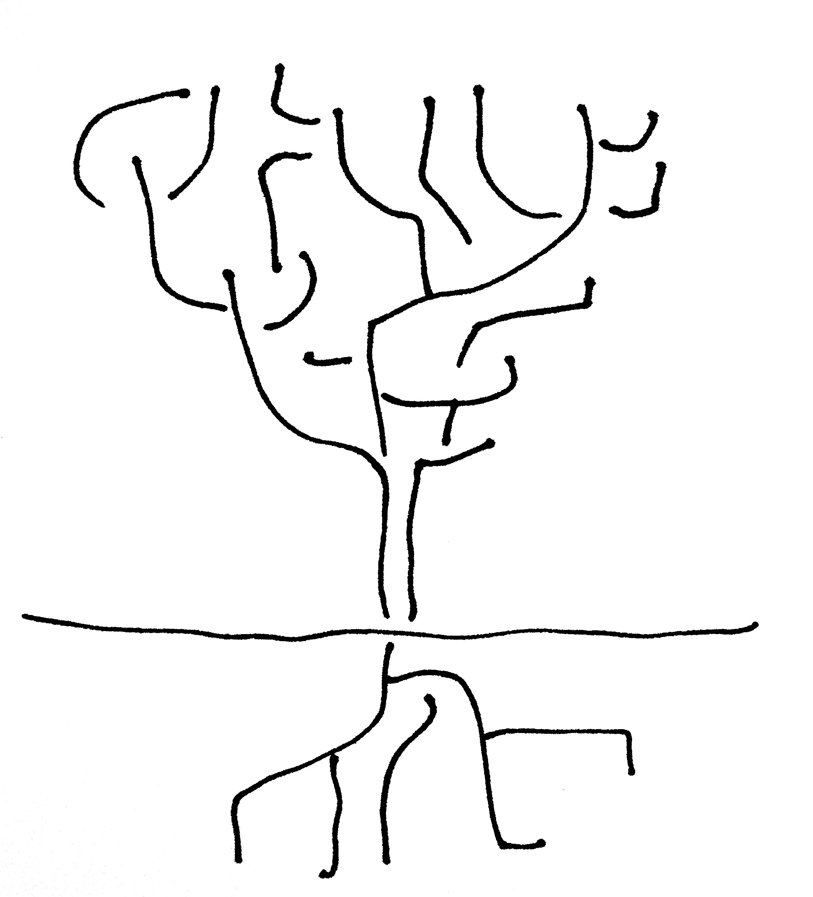

![Database performance in relation to computer music practices and their interdisciplinary feedback. The arrows between databases (cylinders) and computers (squares) represent data flow. Left: the database is ‘visibly next’ to the computer, as is the case with Music Information Retrieval (MIR); the two bottom arrows indicate the intervention of the human operator. Right: the database is ‘visibly below’ the computer as is the case with Sonification; the database feeds the computer from an external source (right arrow). Middle: the database is ‘invisibly behind’ the computer, within the softwares used for (and as) music works. The arrows in between the practices represent interdisciplinary feedback.](../img/mir_comp_sonif_interaction.png)
Database Music
A History, Technology, and Aesthetics of the Database in Music Composition
by
Federico Nicolás Cámara Halac
A dissertation submitted in partial fulfillment
of the requirements for the degree of
Doctor of Philosophy
Department of Music
New York University
May, 2019 Jaime Oliver La Rosa
Copyright ©2018–2019 Federico Nicolás Cámara Halac
All Rights Reserved, 2019

For my mother and father, who have always taught me to never give up with my research, even during the most difficult times. Also to my advisor, Jaime Oliver, without his help and continuous guidance, this would have never been possible. Finally to my loving wife, Aye, whose love and support helped me make it through the sleepless evenings.
I would like to thank my advisor, David Ledesma, for his role in inspiring this project, as well as his commitment to introspection, and to reflecting upon and exploring meaningful issues in clinical psychology. I am also indebted to committee members John Hilaire and Michael Douglas for their ongoing guidance and support, as well as their frequent feedback (often in the form of exceedingly prompt email responses), at every stage of this project. This dissertation could not have come to fruition without the help of Del Aware and Barney Rubble, who offered balanced yet insightful, thought-provoking input. I am also everlastingly grateful to Jill Pullman, for always being available to listen and empathize, as well as to my husband John Doe, for his endless tolerance and his helping me maintain hope that I would indeed finish this project! I would also like to thank my parents, Paul and Mary Williamson, who inspired and nurtured my interest in observation and clinical judgement from a very young age. Finally, many thanks to all of the undergraduates who so patiently offered their time and clinical judgements.
The aim of this dissertation is to understand the aesthetic agency of the database in music composition. I place my dissertation in relation to existing scholarship, artists, and developers working in the fields of music composition, computer science, affect, and ontology, with emphasis on the ubiquity of databases and on the need to reflect on their practice, particularly in relation to databasing and music composition. There is a database everywhere, anytime, always already affecting our lives; it is an agent in our aesthetic and political lives just as much as we are agents in its composition and performance. Database music lives in between computers and sound. My argument is that in order to conceptualize the agency of the database in music composition, we need to trace the history of the practice, in both its technical and its artistic use, so as to find nodes of action that have an effect on the resulting aesthetics. Therefore, this dissertation is composed of two main sections.
In the first section, I trace a history of database practices from three points of view. The first is from new media theory, emphasizing certain aspects of embodied theory which relate to the intersection between the database and the body. The second is from the history of the database in computer science, giving a panoramic view of the tools and concepts behind database systems, models, structures. The third is from their use in sound practices, describing different approaches to databasing from the fields of music information retrieval, sonification and computer music.
In the second section, I discuss this agency under the broader concepts of sound, self, and community. These three axes are addressed in four sections, each with a different perspective. First I focus on listening, delineating Jean-Luc Nancy’s ontology of sound in order to present the database as a resonant subject in a networked relation and community with the human. Second, I focus on memory, comparing human memory and writing with digital information storing, thus relating databasing and composition with memory, archives and their spectrality. Third, I analyze the performativity of databasing, understanding the database as gendered, in its temporality, repetition, and in its contingent appearance as style, skin, and timbre. Finally, I revise the notion of music work, reflecting on the consequences of the anarchic and the inoperative in the community of database music.
As an appendix, I develop an open-source library for multimedia composition that combines computer vision and timbre analysis algorithms to generate a database of descriptors, interpreting them as nodes in a network suitable for automated navigation.
I am sitting in a room different from the one you are in now. I am recording the sound of my speaking voice and I am going to play it back into the room again and again until the resonant frequencies of the room reinforce themselves so that any semblance of my speech, with perhaps the exception of rhythm, is destroyed. What you will hear, then, are the natural resonant frequencies of the room articulated by speech. I regard this activity not so much as a demonstration of a physical fact, but more as a way to smooth out any irregularities my speech might have.1
In going below the ‘note’ level, you can also go below the ‘screen’ of the interface, through the program, into its data structures.
Since Manovich’s The Language of New Media (2001) the database became a term related to internet and digital art, and as such it was conceptualized in relation to interface design and interactivity. However, I reconsider these assumptions from later theorizations in new media, namely Hayles’ posthumanist critique and Hansen’s embodiment approach. in Manovich a silent allegiance to Kittler’s posthumanism, I analyze this allegiance as a consequence of a confusion between data and information.
I describe all layers of the concept of the database, from lower —data structures— to higher —databases— levels, and describe the basic algorithmic designs in between. Specifically, I argue that all of these layers constitute what I call the performativity of the database, which is what is incorporated in the practice of database music.
The database has been present in the music literature as the silent partner since the first computers were used to make music. For a figure representing the position of the database in relation to music practices involving computers (See [img:databasingmusic]). Through the 1990s the use of computers —and databases— can be found in diverse music fields such as computer assisted composition (CAC), electroacoustic music, computer music, sonification, music information retrieval (MIR).
describe different approaches to music practices —computer music, sonification, music information retrieval— and their interrelation with software design, to show how some of the major breakthroughs of these practices are related to changes in data structures.
For now, I use the words ‘database’ and ‘computer’ somewhat interchangeably. I will provide a more acute definition of the database at the end of this chapter. However, the decision is not random, since the database is itself the condition of possibility of the computer. What does this lead to when we can speak of database music? Is computer music —or, better, all music made with computers— database music?
Delineating the agency of the Database in the practice of music composition, I discuss the aesthetics of Database Music, developing the concepts of listening, memory, and performance.
First, I analyze the extent to which the Database can be a listening subject which promotes illusions of style and authority. I consider style and authority as central aspects of the sphere of aesthetic agency of the Database. I then focus on a form of collective ‘listening’ and I arrive at my conception of the Database as an inherently deterministic system. This system is shaped as a network of nonhuman agents, whose ‘resonance’ is fundamental to its definition. I use this resonant network to further analyze the agency of the Database, in terms of how authorial qualities percolate through the network. I use Jean-Luc Nancy’s ontology of sound to understand how the database can be a listening subject. In Brian Kane’s reading (Gratton & Morin 2015, pp. 143–44) of Nancy’s work (Nancy 2007), he presents the this ontology —i.e., what Nancy calls resonance—, considering it as a process constitutive of a phenomenology of the self.
In this chapter, I analyze resonant networks in order to assess the extent to which databasing can be reconfigured by listening, and vice versa. The following questions will be revised: To what extent is the listening subject present within database music? How is the notion of listening subject reconfigured by way of the database? To what extent can the database be thought of as a listening subject, and, if so, to what extent does the agency of the database as listening subject resonate aesthetically?
In section one, I delineate Jean-Luc Nancy’s ontology of sound in order to present the database as a resonant subject in itself.
In section two and three, given the multiplicity of factors that are in play when databases enter into the process of music listening, I focus on the links that exist between Nancy’s resonance and Bruno Latour’s actor-network theory (Latour 1990, 1993), arriving at the concept of a resonant network. Then, a distinction between sound and networks is made, and the concept of the work of actors is introduced.
Finally, I understand resonant networks in terms of community. Since the notion of inoperativity is closely related to that of community —and the exposure of selves—, this relation of selves can also be understood as the resonating force that unfolds hand in hand with the performativity of the network. Thus, the expansion of the network, the propagation of sound, and the exposure of selves, can be connected to each other with a force of inoperativity.
In order to narrow the gap between human and nonhuman agency, I assess the extent to which computer memory resembles human memory. On the one hand, I compare memory and writing with digital information storing, and thus arrive at databasing as a form of memory. On the other hand, I consider archives as collective memory, which serves to to explain how the Database can also be a form of collective memory.
There is yet another substitution that can be amended to Latour’s definition of the network. If the network is ‘recorded movement,’ that is, a trace, a trajectory, this means that its existence is evidenced by way of not only motion in itself, in the sense that the very same oscillatory motion of reference in between the nodes creates its defining gesture. It is also the case that the recollection of movement constitutes an structurally inseparable part of the definition of the network. Therefore, in this chapter, I understand the database in its relation with memory, understanding memory from three points of view: the human, the nonhuman, and the spectral.
In section one, I analyze memory as process of embodiment and relate it to resonant networks.
In section two, I analyze the concept of the archive and its relation to the database, specifically, to databasing as a collective form of memory. In this sense, the nonhuman comes as an instantiation of memory outside the human. I assess the extent to which resonant networks can be considered under the scope of the concept of the archive.
In section three, I understand the dynamics of resonant networks spectrally, that is, as an expression of a force, or a power, that comes out of the spectrality that results out of the resonance of the human and the nonhuman. By considering the spectrality of the database, I assess the extent of its aesthetic agency in terms of a haunting force. Therefore, if database music is indeed haunted by the specter of the database, how does this affect the aesthetic result? If the ghost of the database can be understood as an image of the nonhuman, that is, an image emerging out of the plurality of memory, then, to what extent can it be considered a singularity, a self in itself? Finally, if, as databasers, we are engaged with this force in creative action, how does the music made with databases sound, and what is making it?
I focus on the performativity of the database. On the one hand, I claim that the database is gendered. I argue that the notion of ‘style’ is what promotes the illusion of a gendered subject in the Database. I argue that since both the performance and the directionality of the ‘styling process’ remain strictly on the virtual skin of the database, the database’s authorial subject, like the gendered self, remains in the spectrum of the illusory. On the other hand, I claim that the limit of the Database resides on its performativity. I consider the technical aspects of databases and define computer systems as networks of interconnected-but-independent databases. This definition serves to extend the performatic limit of databases to computers, and therefore to link the performance of the database to the performance of the computer. My goal in this final section is to lead the way to the connection between Database performance and Music Composition: the performatic limit of the Database is also the limit of Music Composition.
In this section, I draw from performance and gender studies to analyze database practice as a performative activity. I use Judith Butler’s concept of gender (Butler 1988) to analyze the extent to which authority in database practices can be understood in terms of style. The databaser, which is the human subject in this case, begins resonating with the database, the nonhuman subject, in a form of feedback loop. This resonant loop is only possible through the performance of the database. I thus locate the origin of the database as listening subject the moment its performance begins. In this moment of performance, both human and nonhuman listening subjects are resounded upon their limit. I consider this limit to be a surface in between the human and the nonhuman, and I like to think of it as the ‘skin’ of the database. I argue that this skin of the database is the possibility condition for illusions of style —as in the style that is visible in one’s clothes, or in one’s decoration of the skin— and authority —as in the appearance of a subject who has some sort of power: the subject of the listening database. I thus analyze these illusions as belonging to the sphere of Agency that the Database presents, and assess the extent to which they affect the aesthetics of Database practice.
The databaser, which is the human subject in this case, begins resonating with the database, the nonhuman subject, in a form of feedback loop. This resonant loop is only possible through the performance of the database.
In search of understanding the political in Database and Composition practices, I question the established concept of music composition and arrive to new definitions of the music work, practice, and authorship.
First, I consider the concepts developed in the previous chapter to understand Music Composition as Database Performance. I propose that the ontology of Composition needs to be redefined in terms of the agency of the Database. My goal in this section is to reveal that the Database agency, when contextualized within Music Composition, has the form and the politics of a music listening to itself.
Second, I use Nancy’s concept of inoperativity to redefine the music object. I argue that the inoperativity of the listening experience, which resides on the delay between sense and sensuality, provides insight on the type of unworking that affects music composition. I thus redefine the outcome of music composition as the severed music object, emphasizing its inoperative status of suspension, withdrawal, and its inherent state non-completeness. I then consider how this state of suspension of the severed music object can be analyzed in terms of a Community of artists, database performers, composers, etc., mutually exposed to each other (Nancy 1991). Therefore, in order to understand the dynamics of this transversal community of Database and Composition, I analyze the paradox of anarchy and reflect on the consequences of both the anarchic and the inoperative in Database and Composition practices.
Finally, I present my view on collaboration, and propose a redefinition of the term uprooting it from the traditional union of forces forming a whole. I claim that the new form of collaboration can be understood as a form of collective, or trans-inoperation, consisting in the mutual exposure of the limits of singular, performing beings. As a consequence of this form of collective inoperance, I claim that a new politics of authorship needs to be analyzed, particularly in terms of the spectral in the Database. I question the power of this illusory figure in terms of the effectiveness of the archontic principle that is present in trans-inoperant works of art. I believe the specter of the author loses the sensuality and the sense of the listening subjects in state of trans-inoperance, and thus the power of the author ceases to take place.
The concepts exposed in affect and reconfigure transversally the practices of composition and databasing. Traditionally, music composition was considered a single author practice, in which the composer’s technique or aesthetic intuition is the sole agent, romanticizing the artist as an “involuntary vessel through which inspiration flows” (Born 1995). As I have outlined in , this is no longer the case, since understood in terms of its resonance and of its performativity, composition explodes the name of the composer, leaving as many spectral remains of its trace as can be imagined. Conversely, databasing is already embedded in a networked structure that only allows partial and temporary allocation of authors (databaser), since in the structural database tree exist multi-authored branches that renew themselves, outgrowing themselves in perpetual difference and instability. The notions of stability and authority can only be related to snapshots in the history of a software. However, the institutional quality of both databasing and composition is still at play, namely in the many cases of proprietary software and in the composer’s name, that is, in the commercial release and the objectification of music work. Less than focusing on general criticism, in this section I argue that, since the agency of the database reveals itself as aesthetic experience, then it is the dynamics of this agency need to be addressed. I claim that this agency, when contextualized within music composition, specifically composing with computers, it has the form and the politics of a music listening to itself.
How does the concepts of inoperativity and anarchy, in their relation to database community, resonate politically in the works of database music?
In this section, I analyze the anarchic element in database practice and bring it to music composition practice.
Defining anarchy as a paradoxically productive force —a form of destruction which “produces the very thing it reduces” (Derrida & Prenowitz 1995)—, Derrida locates it at the core of the concept of the archive (See 5.2.3). As I have outlined before, databasing brings together with its relation to the archive, the archontic principle that is bound to the origin and the rule. That is to say, since the database has the potential of becoming a source, databasing becomes an activity of this source, and thus embeds the databaser with a specter of authority. Therefore, given the circumstances of this authority of databasing, claiming that composition can be identified with databasing means translating the ‘archic’ not only to the performativity of composition, also to the product of composing, to the composer and the composed. I have mentioned above the presence of the skin of the database, now I shall refer to the skin of the music object.
I argue that the link between the archive, the database, and the music object is this capacity to prescribe its own origin —the commencement— and rules —the command. Finally, I analyze the extent to which this anarchic element is present in the inoperative object of music, and how this presence affects the unwork of art.
My goal in this reflection on the consequences of the anarchic and the inoperative in database and composition practices is to understand the dynamics of community within both database and composition fields.
My argument is that in order to understand what is in common between database and composition, from the points of view of art, aesthetics, and politics, we need to define the transversality of the underlying structures of anarchy and inoperativity.
In an intersection between music and computers, I situate the database around the broader question of agency in art and technology.
Finally, as an instantiation of the propositions above, I will develop an open-source library for multimedia composition that combines computer vision and timbre analysis algorithms to generate a database of descriptors, interpreting them as nodes in a network suitable for automated navigation.
I use William Brent’s —timbre description algorithms— and Antoine Villeret’s —image descriptors using Computer Vision algorithms—, to develop a new software library for Pure Data. My model consists of a joint Database structure for Image and Audio descriptors suitable for realtime navigation. At its core, the Database is generated by calculating derivatives between both data sets, and it is performed by applying random probabilities, markov chains, or chaotic generators to this navigation. This allows for multiple paths to be traced on each navigation.
In order to write this dissertation, I have developed “Abby” an online Text Database tool namely to build an annotated bibliography. The program is mostly written in Javascript, with the data navigation and programming hosted in Github, and the datasets stored in the Google account that New York University has provided me. The annotated bibliography is available at https://fdch.github.io/abby, and the code can be accessed or cloned from https://github.com/fdch/litrev.
This dissertation goes through the state of database art, the use of computers in music and art, the collaborative aspect surrounding computers, the immateriality that percolates through the arts as data, the terminological struggles in the definition of data-based media, the possibilities of new linkages between different media through data, the arbitrary world of the composer in the midst of an emergent, autopoietic, bottom-up art-world, the ubiquitous architecture enabling all of it, the resonating self in between, the non-human agency, the software communities, and the topology of the networked world.
Chapter 1 serves to contextualize the database historically and technically. First I engage with the database from the point of view of media studies, as it as commented in the arts since the beginning of the 21st century. I then trace a history of the events which lead to the current database panorama, and refer to it as a database tree. In the end of this chapter, I trace the use of the database in relation to music, particularly in three fields based on computer-based sound: MIR, sonification, and composition. In Chapter 2, I dedicated to locate the aesthetic agency of the database from three points of departure: listening, memory, and performance. These three aspects relate sound, networks, memory and archives, in order to delineate the performativity of databasing. Thus, the agency of the database is seen at the intersection of the human and the nonhuman. The final chapter deals with the dynamics of databasing and composition. I engage with the political in database practices and question the established concepts behind music composition. Thus, I present a different conceptualization of the music work.
In order to define and contextualize database practices, I engage with the existing literature on data-driven art. Drawing mostly from media theory, I provide a sample of a variety of authors who have studied the use of databases in art. Specifically, I emphasize certain aspects of affect theory which relate to the intersection between the database and the body, in order to link database practice with sound and performance practices.
Therefore, in ‘databasing music,’ I describe different approaches to music practices —computer music, sonification, music information retrieval— and their interrelation with software design, to show how some of the major breakthroughs of these practices are related to changes in data structures. In the last section of the chapter, I describe all layers of the concept of the database, from lower —data structures— to higher —databases— levels, and describe the basic algorithmic designs in between. Specifically, I argue that all of these layers constitute what I call the performativity of the database, which is what is incorporated in the practice of database music.
The world appears to us as an endless and unstructured collection of images, texts, and other data records, it is only appropriate that we will be moved to model it as a database —but it is also appropriate that we would want to develop the poetics, aesthetics, and ethics of this database. (Manovich 2001, p. 219)
To point to the origin of the database as it is known today is not an easy task. Certainly, databases are closely related to the history of computers, but they also relate to the history of lists. The common link between these two is the fact that they are written —on a memory-card, on a page—, which would take its history to the origins of the written word…. However, there is a point where the history of storage takes an operational turn. At this point, the ‘word’ becomes a type of data, and data begins to bloom exponentially, impulsing faster and more efficient storage and retrieval technologies. Database systems were modelled hand-in-hand with computer languages and architectures from the late 1950s until the present day, when they continue to be developed for almost all aspects of the business world.
In the artworld of the 1990s, the increasing availability of personal desktop computers —with software suites, programming languages, and compilers— resulted in the emergence of new media art. Lev Manovich (Manovich 2001) was the first media historian to argue that the database became the center of the creative process in the computer age. The database had become the content and the form of the artwork in . Furthermore, Manovich recognized that the artwork itself had become an interface to a database; an interface whose variability allowed the same content to appear in individualized narratives. Thus, he claimed that narrative and meaning in new media art had been reconfigured differently. Narrative became the trajectory through the database (Manovich 2001, p. 227), and meaning became tethered to the internal arrangement of data.2 Therefore, for Manovich, the “ontology of the world as seen by a computer” (Manovich 2001, p. 223) was the symbiotic relationship between algorithms and data structures. As a consequence of the use of databases in art, the architecture of the computer was transferred to culture at large (Manovich 2001, p. 235). Manovich’s ‘database as symbolic form’ thus became a technologically determined shadow that haunted much of new media.
In order to reveal the extent to which the presence of the database has a radical effect on narrative, however, Manovich reverses the semiotic theory of syntagm and paradigm that governed the first half of the 20th century (Manovich 2001, p. 231). Quoting Roland Barthes’ reading of Ferdinand de Saussure in , Manovich describes the paradigm as a relation subjected to substitution —because it depends on associations—, and the syntagm as a relation subjected to combination —because it is an instantiation of concrete elements. For example, from the entire set of words in a language (the paradigm) the speaker constructs sentences (the syntagm): the paradigm is implicit (absent) and the syntagm is explicit (present). The relation between these two planes (of the paradigmatic and the syntagmatic) is established by the dependence of the latter on the former: “the two planes are linked in such a way that the syntagm cannot ‘progress’ except by calling successively on new units taken from the associative plane [i.e., the paradigm]” (Barthes et al. 1968, p. 59). Barthes gave several examples with different “systems,” one of which was the “food system,” which I will borrow in what follows. All the elements that compose a dish, for example, the “set of foodstuffs which have affinities or differences within which one chooses a dish in view of a certain meaning” comes to delimit the paradigm. However, the “sequence of dishes chosen during a meal,” or simply, what you are eating as you are eating it in a restaurant, comes to represent the syntagm (Barthes et al. 1968, p. 63). However, when one looks at the restaurant’s ‘menu’, one can glance at both planes simultaneously: “[the menu] actualizes both planes: the horizontal reading of the entrées, for instance, corresponds to the system [i.e., paradigm], the vertical reading of the menu corresponds to the syntagm” (Barthes et al. 1968, p. 63). A software menu, for instance, would come to represent both planes as well: the paradigm is the set of all possible actions the user might make within the specific context of the menu; the syntagm is the actual sequence of clicks that the user makes.
Barthes’ reading of Saussure is maintained in Manovich’s description of the database. On the one hand, narrative is the syntagm since, at least in Manovich’s rendition of narrative in the visual art world and the gaming world, it is the trajectory through the navigational space of a database. Furthermore, since this narrative is achieved by the interface, interface and narrative depend on each other: narrative thusly interlocks with the interface itself, and results on the conception of the interface-as-artwork. On the other hand, the database is the paradigm, since it represents the set of elements to be selected by the user. Materially, however, Manovich points to a reversal of these planes. Given the material presence of the database (i.e., the stored data), and given the hyperlinked quality of the user interface, the database becomes explicit (present) and narrative becomes implicit (absent, dematerialised).
For example, consider the case of the typical timeline-view of a video editor.3 Normally, the user creates a session and imports files to working memory, creating a database of files —video files, in this case. Once this database is in working memory, the user places on a timeline the videos, cutting, and processing them at will, until a result is desired, and an export or a render is made.4 The timeline where the user places the videos is a visualization of the set of links to the files; an editable graph that allows the user to locate in time the pointers to the elements on the database. This is what Manovich means by “a set of links,” because the user is not handling the files themselves —as would be the case with an analog video editor, where the user cuts and pastes the magnetic tape—, but the extremely abstract concept of memory pointers.
I consider this reversal to be valid, only on a certain quality of the relation itself, that is, as a shift from one-to-many to many-to-one (See Figure 4.1). The question of the materiality of the database and of the pointers depends on the materiality of data. Links or pointers have, for Manovich, a different (absent-like) status in relation to stored memory itself. This is because of a distinction between pointers and data on the basis of their use: pointers are of a different nature since they do not store data directly. Instead, they refer to the address in memory where a specific stored data begins. However, the mutual binary condition of pointers and data, and the fact that they are both stored in the same memory, reveal Manovich’s reversal to be grounded on an equivocation. Pointers are, however functionally different, another data type. This fact comes from the Von Neumann architecture on which computers are constructed (See 4.2.2). If one understands them as moving bodies, it follows that pointers are ‘lighter’ and travel much faster than other data types, which are ‘heavier’ and slower to move. However, data types are not moving bodies at all, and thinking of them as such interlocks us in a semiotic trap: accepting this reversal means accepting the materiality of data.
A mere ‘byproduct’ of pleasure, entertainment is a hangover from the media epoch: a function that caters to our (soon to become obsolescent) need for imaginary materialization through technology [which, in turn,] serves as a diversion to keep us ignorant of the operative level at which information, and hence reality, is programmed. [emphasis added] (Hansen 2002, p. 59)
I find in Manovich a silent allegiance to german media theorist Friedrich Kittler’s concept of digital convergence. Digital convergence entails that the bodily resonance of media becomes obsolete in the face of absolute digital information storage. Thusly, it turns the human into a “dependent variable” (Hansen 2002, p. 59). In the case of physical media, the human body was, for Kittler, directly shaped by media, and the limit of this ‘shaping’ was set by the bodily limits of perception. The body became a by-product of media. However, in the age of digital convergence, of an “absolute system of information” (Hansen 2002, p. 63), media remove this bodily limit of perception, making the human body a residual product. The body, then, becomes a residue of digital industries.
For example, the extents of this residual aspect of the human can be seen in writer Norman Klein’s considerations of the author (Klein 2007). Following Manovich’s interface-as-artwork, Klein argues that since the reader gets immersed in data, she “evolves pleasantly into the author” (Klein 2007, p. 93). Because the reader participates in the narrative, the result is a reconfigured concept of shared authorship. However, Klein continutes “instead of an ending, the reader imagines herself about to start writing” (Klein 2007, p. 93). This surprising twist in Klein’s consideration adds another layer of complexity, namely, the categorical difference between ‘writing’ and ‘not-yet-writing.’ In Klein’s sense, narrative constitutes a promise of authority that equally blurs the roles of the writer and of the reader. Most importantly, this blurred authority is seen as a reflection of control and subordination of the human. In this view, the potentiality of authority arising from the trajectory through the database belongs neither to the reader nor to the writer: it is appropriated by the database. The roles of the reader and the writer fade into each other and vanish, allowing the database to be a dominant middle term. In other words, human agency is absorbed into a shadow, making the database the sole agent to which the human is subjected. In Klein’s own words, the human is a slave to data, and as a consequence the human is economically colonized and psychologically invaded by the evolving force of computers, information, or technology in general (Klein 2007, pp. 86–88). Authority converges, too, in the age of digital convergence.
Media theorist Mark Poster defines technological determinism as the “anxiety at the possibility of [the human mind’s] diminution should these external [technological] objects rise up and threaten it” (Poster 2011 X). In other words, the fear or anxiety that the human is ultimately subjected to the power of technology. Understanding new media as digital convergence leads to reading the ‘new’ in new media as the ‘digital.’ In reaction to the anxieties that this convergence brings, and from an embodied approach where databases have an aesthetic agency in resonance with the human, in what follows I propose to shift the focus from narrative (interface) to performance (databasing), and to reconfigure the shadow of the database as a hybrid skin exposing the human and the non.
The disembodiment of information was not inevitable, any more than it is inevitable we continue to accept the idea that we are essentially informational patterns. (Hayles 1999, p. 22)
Media theorist N. Katherine Hayles (Hayles 1999) unearths the theoretical context of cybernetics, upon which the posthuman has been constructed throughout the 20th century. She identifies three waves of cybernetics, each governed by different concepts which helped build the undergirding structures of the technologically determined and disembodied literature in vogue in the 1990s.
The foundational wave cybernetics (from 1945 to 1960) was built, among other concepts, on two main theories: Jon von Neumann’s architecture of the digital computer (See 4.2.1) and Claude Shannon’s theory of information. As “a probability function with no dimensions, no materiality, and no necessary connection with meaning” (Hayles 1999, p. 18), Shannon’s formal definition of information within communication systems highlighted pattern over randomness (Hayles 1999, p. 33). Therefore, disembodied information became a signal to be encoded, decoded, and isolated from noise.
The word ‘cybernetics’ [steersman] thus synthesized three central aspects: information, communication, and control. Since the human was seen as an information processing entity, it was “essentially similar to intelligent machines” (Hayles 1999, p. 7). Therefore, the conceptualization of the feedback loop as a flow of information came to put at ease notions of human subordination, thus arriving at the governing concept of first wave cybernetics: homeostasis. In this sense, the “ability of living organisms to maintain steady states when they are buffeted by fickle environments” (Hayles 1999, p. 8), became a patch that simultaneously fixed computers as less-than-human, but also pointed to the anxiety of disembodied information that was growing underneath.
However, since the observer of the ‘feedback loop’ became part of the flow of the system, in the second wave (from 1960 to 1980), cybernetitians reconfigured homeostasis into reflexivity, that is, “the movement whereby that which has been used to generate a system [becomes] part of the system it generates” (Hayles 1999, p. 8). This became also known as autopoiesis (i.e., self-generation), based on writings by Humberto Maturana and Francisco Varela. This second wave leaves the feedback loop behind, since it considers that “systems are informationally closed” (Hayles 1999, p. 10). This means that elements in the system do not see beyond their limits, and the only relation to the ‘outside’ environment is by the concept of a trigger. In this sense, disembodied information was buried deeply into the organization of the system, and the system itself appeared in the form of a cyborg.
Shifting from triggers to artificial intelligence signaled the third wave of cybernetics (from 1980 onwards), whose central concept was virtuality. Development of cellular automata, genetic algorithms, and principally, emergence, led to the formation of the posthuman. However, in Hayles view, the underlying premise of this ‘posthuman’ is that the human can be articulated by means of intelligent machines (Hayles 1999, pp. 17–18). In turn, reconfiguring the concepts of body, consciousness, and technology as inherent to (post-) human life, Hayles argues for the impossibility of artificial intelligence to serve as a proxy for the human. Hayles objective is, then, to dismantle cybernetics from its (relative) assumptions, questioning its major achievements over the years and thereby opening the field for new considerations of the body and its material environment within cybernetics, and by extension, of the body in new media:
My dream is a version of the posthuman that embraces the possibilities of information technologies without being seduced by fantasies of unlimited power and disembodied immortality, that recognizes and celebrates finitude as a condition of human being, and that understands human life is embedded in a material world of great complexity, one on which we depend for our continued survival. (Hayles 1999, p. 5)
While her work is focused on the literary narratives that were built in parallel with cybernetics, she leaves incursions in new media theory for other media theorists. This is where Mark B. N. Hansen comes in.
As I describe above, Manovich arrives at this notion of the interface-as-artwork by opposing database and narrative on the semiotic grounds of the reversal of the paradigm and syntagm. In turn, media theorist Mark B. N. Hansen (Hansen 2004) notes that the interface-as-artwork constitutes a disembodied “image-interface” to information in which the process of information itself (in-formation, giving form) is overlooked. Hansen locates the source of this disembodied conception in Manovich’s implicit —but nonetheless evident— premise of the overarching dominance of cinema in contemporary culture, which results in a “disturbing linearity [with] hints of technical determinism” (Hansen 2004, p. 36).
For example, Manovich argues that standardization processes originating from the Industrial Revolution have shaped how cinema is produced and received. Attuned to the perceptual limits of the body, the standardization of resolution can be seen (image dimensions, frames per second, and aspect ratio) and heard (audio bit depth, sampling rate, and number of channels). In this sense, the moviegoer and by extension, the listener became industrial by-products, determined by the massively produced electronic devices used for recording and playing. As I have described with Kittler’s technological determinism, the devices driven by industrial forces, therefore shaped the body, and as an extension, the aesthetics of cinema.
For Manovich, due to the internal role of the database, the logic of new media is no longer that of the factory but that of the interface. Through the interface to a database, the user is given access to multiplicities of narrative, and thusly, to endless information. The user is granted the power of the database, making in Manovich’s eyes the database an icon of postmodern art. In other words, on an aesthetic level, while mass-standardization and reproducibility of media —the “logic of the factory” (Manovich 2001, p. 30)— shaped the form of cinema, post-industrial society and its logic of individual customization, shaped the database form. At the bodily level, cinema standardized perception of the passive body, and database individualizes experience. However, this individualized experience still constitutes a technological ‘shaping’ of the body, a shaping that is exploded into every user quietly sitting behind the screen.
In opposition to this passivity of the body, Hansen describes images as something that emerges out of the complex relationship between the body and some sort of sensory stimulus. In radical disagreement with Manovich, Hansen considers that the image has become a process which gives form to information, and that this process needs to be understood in terms of the body as a filtering and creative agent in its construction. Drawing from Henri Bergson’s theory of perception, and in resonance with cognitive science, Hansen defines the function of the body as a filtering apparatus. Under this conception, the body acts on and creates images by subtracting “from the universe of images” (Hansen 2004, p. 3). In other words, through this filtering activity, the body is empowered with “strongly creative capacities” (Hansen 2004, p. 4). Therefore, instead of being a passive node, the body actively in-forms data as information, and further: the databaser (database user) makes information out of data by precisely embodying the performative act that I call databasing.
The activity in the receiver’s internal structure generates symbolic structures that serve to frame stimuli and thus to in-form information: this activity converts regularities in the flux of stimuli into patterns of information. (Hansen 2002, p. 76)
The activity of framing, according to Hansen, must be differentiated from that of observation. In this way, “information remains meaningless in the absence of a (human) framer,” (Hansen 2002, p. 77) and framing becomes a resonance of the (bodily) singularity of the receiver. Quoting MacKay’s Information, Mechanism, Meaning (1969), the meaning of a message
…can be fully represented only in terms of the full basic-symbol complex defined by all the elementary responses evoked. These may include visceral responses and hormonal secretions and what have you…an organism probably includes in its elementary conceptual alphabet (its catalogue of basic symbols) all the elementary internal acts of response to the environment which have acquired a sufficiently high probabilistic status, and not merely those for which verbal projections have been found. (Hansen 2002, p. 78)
It is with this conception of framing that Hansen describes precisely that information always requires a frame:
…this framing function is ultimately correlated with the meaning-constituting and actualizing capacity of (human) embodiment…the digital image, precisely because it explodes the (cinematic) frame, can be said to expose the dependence of this frame (and all other media-supported or technically embodied frames) on the framing activity of the human organism. (Hansen 2002, pp. 89–90)
Therefore, in the context of Kittler’s digital convergence, framing prevents the human from being rendered a dependent variable. To the contrary, the framing function of the human body is the possibility condition for the digital to become information. The frame, as Hansen describes, is the human body filtering images from the world, and creating a virtual image that gives form to data. The frame needs to happen as a relation, and thus, it is the temporal instantiation of a process.
The Internet is a place of unlimited access, it is a database in continuous and exponential growth, that reconfigures the grounds on which art has traditionally been built on. One of these grounds is the role of the author. The collaborative approach in the work of media artist Sharon Daniel (Daniel 2007), is an example of a different kind of authorial reconfiguration. Daniel raises questions about authority and politics in collaborative art by means of a social model based on the concepts of emergence and cellular automata. Cellular automata are systems that reveal emergent (global) behavior from (local) rules. That is to say, each automaton changes states according to its surrounding neighborhood, resulting on an emergent behavior on the global level that precludes top-down behavior. Brought to the social plane, cellular automata result in an inverted hierarchic system: instead of a top-down authority, there exists an emergent, bottom-up behavior. Daniel thus removes her authorial role as artist granting participants a shared authority with the work itself at every stage. Differing from Klein’s blurring of the authorial roles, Sharon’s participants engage in performative actions that shape the outcome of the artwork in ways she could not anticipate. Therefore, authority is decentered, that is, it does not sediment itself in a single unity.
Data creators have to collect data and organize it, or create it from scratch. Texts need to be written, photographs need to be taken, video and audio need to be recorded. Or they need to be digitized from already existing media…Once digitized, the data has to be cleaned up, organized, and indexed. (Manovich 2001, p. 224)
Despite Manovich’s technologically determined considerations of the database as form, he notes a fundamental aspect of the use of the database when he expresses that data need to be generated (Manovich 2001, p. 224). In this sense, he begins to describe the actions that need to be performed around data, or what I call databasing (See 4.2.1), which connotes the use of databases in terms of their performativity. He even goes further and proposes that this activity has become a “new cultural algorithm,” (Manovich 2001, p. 225) which I reinterpret here as a single subroutine with one argument for input: the world (See Listing [lst:manovich]). Following this line of thought, artist Victoria Vesna (Vesna 2007) argues that creating a memory bank is a means of testifying to our existence (Vesna 2007, p. 25).
function new_cultural_algorithm(world)
{
database = data = media = world
return database
}While Manovich calls for an “info-aesthetics” (Manovich 2001, p. 217), as well as a poetics, and ethics of the database, neither Manovich nor the following generation of media artists and theorists could carry out an exhaustive account of an aesthetics of the database. Several authors continue to abide by Manovich’s claim that the aesthetics of the database, or the database as form, is a symptom of the uncritical use of database logic throughout the visual art world of the 1990s. It is in hindsight that his argument can be understood as grounded on the same disembodied constructions that prevent him from including human agency in his account.
The first step in working with a database is the collection and assembly of the data…. Sorting determines the sequence of presentation, while filtering gives rules for admission into the set presented [,] resulting in a database that is a subset of the “shot material” database. Editing is selecting from the database and sequencing the selections…. To go further: for a filmmaker the term “cutting,” as “editing,” loses its meaning, and “sorting,” “assembling,” and “mapping” become more apt metaphors for the activity of composition. (Weinbren 2007, p. 71)
Like Manovich, Weinbren finds a redefinition in filmmaking impulsed by the selection processes that the database calls for: data collection, generation, and assembly. Weinbren further breaks the selection process into sorting and filtering. With this new terminology, Weinbren makes a linguistic shift from ‘editing’ and ‘cutting,’ to ‘sorting,’ ‘assembling’ and ‘mapping.’ This linguistic shift is significant in the sense that it highlights the practice that is ‘under’ the filmmaker: databasing.
Databasing is a term I have chosen that best describes the practice of the database, that is, a term that includes the elements and actions of database practices, together with their temporality. The elements of databasing are the different data types and structures that build more complex database systems. The actions of databasing are, on the one hand, the type of operations that a database allows, and on the other, the bodily activity that occur before and after these operations. That is to say, since the operational level occurs below the perceptual threshold of the body, I consider the actions surrounding the immediacy of computations to be defining aspects of databasing.
Depending on the programming language, data types may or may not be part of a data structure, and they store different types of values such as int, float, char. These types are then interpreted in binary language by the compiler. Grouping these types into larger sets results in arrays. For example, in the C programming language, programmers ‘declare’ variables first —e.g., unsigned char age— and then ‘initialize’ them with some data —e.g., age=30. A simple variable like one’s ‘age’ needs only one value, and given that the unsigned char data type only stores values from 0-255, it is safe to use in this case: no age can be negative, no human can live longer than 255 years.
A data structure is a set of data types kept generally in contiguous slots in memory space. It is built for fast allocation and retrieval. A very simple data structure can be thought of as, for example, a person’s name together with an age (See Listing [person]).
typedef struct Person {
unsigned char age;
char name[128];
} Person;At this point it is important to refer to the higher or lower levels of computer software. A software that is ‘higher’ means that its simplest operations are composed of multiple smaller operations. The user can thus ‘forget’ about certain complexities that come from low-level programs, such as memory management. In this sense, low-level programs operate ‘closer’ to hardware, and programmers need to work at a more granular level. While the above data structure contains low-level features such as setting the size of the name array, it releases the programmer from thinking binary conversion. This means that unless you are changing values directly on the memory card (which is unthinkable), there will most likely be an underpinning software layer.
The speed of regular house computers is so fast that high-level operations happen below the perceptual level (generally below 1-2 milliseconds), hence, for example, the capability for real-time audio processing at high quality sample rates. Therefore, the temporality of activity before and after potentially very large computations feels almost immediate. This means that the body continues almost as if nothing had happened besides a click, or besides the pressing of a key. The immediacy of computation is a feature, certainly, for arriving at extremely fast operations in no time (or zero-time). It is what feels like ‘magic’ around computers: ask a computer to count to a 1000, and it already has….
However, it may become a bug if we consider the computer as a tool to understand the world. As Manovich claimed, the world understood with computers is not only one that is presented in binary terms, it is one constructed upon a specific set of data structures with their set of algorithmic rules. The better and more efficient the data structure is, the better and faster the algorithm. In this light, it can be argued that software development is essentially data structure development. At every software release, the software becomes more efficient, using less or more restricted memory space, etc., affecting the scope of its functionality as well as the speed at which it runs. Glancing at the evolution of software in terms of data structure efficiency, therefore, is glancing at a constantly accelerating stream of bits. Because it is immediate, software is incorporated immediately, thus narrowing the temporal window for framing.
This is why the temporality of databasing is context-dependent. As Hansen pointed out, image creation, or world creation, is not necessarily in contact with the reality that surrounds the body (or the reality of the body), but it is a result of the embodiment of a virtuality that is inherent to our senses. The world is a virtuality that is constructed with our senses and our body. The world can only appear if it appears to the body. Data structures, therefore, are very efficient storage devices that have no relation to worlds in themselves, but that are the condition for the possibility of world creating with computers. In this way, the programmer feeds into the computer a notion of world that is then returned by the computer’s performance. In each data structure there is a result of a feedback network. One one hand, this network refers to the history of software development, in the sense that each software release is a instance of the much larger event that is software in general. On the other, the network links this history with the practice at hand for which the software is being designed. The sound of a computer music oscillator, for example, even if it were programmed today from scratch, would have embedded histories of computer software design, computer music history, etc.
What is important to note here, is that these interrelations of what is already there in software development can be thought of as resonances colliding their way into stability; a stability that emerges not only as a ‘stable release’ of the code, but also as the condensed multiplicity of worlds that is displaced into a software package. Therefore, far from being an ontology of the world, data structures are world-making and world-revealing devices that engage with our own capacity for virtuality, and thus they are nodes in our world-making networks.
As with other new media, the terminology used to describe computer memory is often borrowed from earlier media practices like printed text: reading, writing, and erasing. Computer memory thus shares with writing the property of hypomnesis, that is, of displacing the role of human memory with an external non-human device. In the case of the computer memory however, the scale of this displacement is extremely large, both in terms of the amounts of data that can be stored and the speed with which it can be stored. For example, the 40-bit long 4000 numbers that Von Neumann was aiming at for their memory ‘organ’ —which was more than plenty for the computational purposes required at the time— represents around 16 Kilobytes, something which today might seem absurd in comparison to current computer storage capabilities that can be found in the case of cloud computing. In light of this fact, we might ask ourselves how is human work transformed through interaction with these massive external memories? Database practice has direct effects on temporality and on memory. Therefore, when designing computer software for art, the way in which data is structured, together with the speed and design of data flow, has significant effects on the temporality of art altogether as a practice.
I have proposed that memory and its storing of instructions and information what enables the computer as such. The simplicity of this synthesis of data and command in Von Neumann’s architecture, led to its implementation in not only the computer for which he had intended, also the regular computer as we know it today. Without this architecture, computers would only be able to perform very simple arithmetic operations (like pocket calculators). That is to say, without the computer’s ability to store data (the memory organ), the partial differential equations that Von Neumann was aiming at solving would not have been possible. In these equations, the next value of the solution depends on the present value. Therefore, when iterating through every step of the solution, the function in charge of solving the equation needs to access the present value, change it, output the next value, and finally update the present value with the outputted result (See [lst:neumann]). Therefore, in order to provide such solutions, Neumann proposed that: “not only must the memory have sufficient room to store these intermediary data but there must be provision whereby these data can later be removed” (von Neumann & Burks 1946, p. 3).
present = 0
next = 0
iteration {
output = next = function() = present
present = next
}Inasmuch as the completed device will be a general-purpose computing machine it should contain certain main organs relating to arithmetic, memory-storage, control and connection with the human operator. It is intended that the machine be fully automatic in character, i.e. independent of the human operator after the computation starts (von Neumann & Burks 1946, p. 1).
Data structures are the turning point of the history of the database. Their appearance enabled the performance of automated algorithms. Within the history of computer technology, data structures begin to appear since Jon Von Neumann’s designs of the computer architecture (von Neumann & Burks 1946). Von Neumann and his team implemented Alan Turing’s original concept for a general-purpose computing machine. Of the “certain main organs,” it is memory-storage what enables the computer’s architecture as we know it today. On one hand, the storage unit of the computer allows data to be written and erased in different locations and times. On the other, the stored data can be not only values to be used during computation, but also includes the algorithmia itself, that is, the commands —functions, operations, routines, etc.— which are used to access and process data for computation. Thus, the interaction of data and command is what defines data flow inside the computer.
Consider, for example, how curator Christiane Paul describes the database as a “computerized record-keeping system”, that is, “essentially a structured collection of data that stands in the tradition of “data containers” such as a book, a library, an archive” (Paul 2007, p. 95). However, when Paul suggests that databases are simply an instance of data collection this only points to the passivity of the container, and not to the potential that it has. An good analogy would thus be a book with the capacity to read itself, if reading were going through every letter in an orderly fashion. A database can also be understood as a library with no need for librarians because all queries are immediate; or, an archive without archeion. These considerations will be developed in the next chapter. While the more general practices of collecting and classifying data are part of the practice of databasing, on some level of the computer architecture, databasing comprises data flow within the Von Neumann architecture. This fact marks a distinction that is better seen in relation to networks. Extending computers via networks like the Internet makes databasing a global performance that resonates, grows, and changes with every user. This is why I propose that databasing reconfigures the passivity of data containers such as books, libraries, and archives, with a powerful agency that resonates aesthetically.
In order to understand how databases have changed the way we think of earlier types of containers, we need to revise the differences between database models in time. By doing this, I plan to reconfigure the notion of database system. In general, database systems have been used in businesses, namely for administration and transaction. However, narrowing database systems this way raises the similarities or differences between systems to the level of the interface. I propose to delve into the structures of the models to find how the computer itself can be thought of as a database tree and user interaction —as well as programming— as database performance. The main purpose of the following account is to understand how computer-based sound practices have participated as a particularly resonant branch of the database tree.
The common use of the word ‘database’ within computer science came around the 1960s, when computers became available to companies throughout the United States of America. For the purpose of data processing, software developers began designing DBMS , which are still used in great demand by multiple contemporary companies. The computer’s capability for data processing and storage is inherent in the constitution of database systems. In this section, I describe the different levels of complexity of database systems as a tree (See Figure 4.2), starting from basic data structures to more complex database systems, and then present a brief history of how databases were designed.
The tree is built on different interpretations of the Von Neumann architecture. That is to say, while this architecture went through several optimizations over the years, its three central aspects remained. Therefore, despite the fact that different industry standards for hardware construction resulted in different kinds of operating systems, the core elements of the architecture remained the same: memory (for data and program/code), central processing unit, and input/output interfaces.
The below-ground level is accessed through machine and assembly code, which constitutes the core of low-level programming languages and are, to a certain extent, humanly un-readable: the world of bits. Above the ground, readability by humans is the main feature.
The database tree metaphor relates to the concept of portability. The database tree only takes the form of a tree once it is instantiated as a software and it is run. That is to say, the database tree unfolds every time it is opened, and in this unfolding it emerges the possibility of dynamically adapting to different grounds. This is what is known in the programming world as defining conditions or macros. With these definitions, their programs can compile with different compilers, across a variety of hardwares and operating systems. Therefore, these database trees have as their main feature the capacity to unfold their roots in different directions upon demand.
The trunk of the tree is composed of data types and structures that provide flow between stored (underground) data and the above-ground components. Programming languages handle data types differently, but in essence, data types and structures are usually built in layers going from the lowest (close to roots) to highest levels.
These language layers, after they reach a certain level of complexity, begin to form boughs or limbs that, while being separated from each other, are linked to the same trunk and roots. I consider branches to be programs with text-based interfaces such as Bash, C, C++, python, Java, etc. Their feature is their generic functionality.
More complex programs built on top of branches, such as Pure Data, Supercollider, R, octave, Processing, OpenFrameworks etc., are dedicated for a narrower scope of tasks. Their feature is their level of specialization for the task at hand: sound synthesis, statistics, visuals, etc. They might be more application-specific. In general, these programs are commonly considered layers on top of other languages, libraries, or software frameworks.
User interfaces (or GUIs) are the leaves of the tree. I relate the photosynthetic quality of leaves with user input/output interaction. Despite their simple, user-friendly appearance, software leaves are highly complex systems such as multimedia editors (Adobe Creative Suite or Microsoft Office), Internet browsers, mobile apps, etc. A particular kind of leave is the DBMS , generally used in businesses for data processing and editing, for example: MYSQL , POSTGRESQL , NOSQL , COUCHDB and MONGODB .
An important feature of database trees is their network capabilities. Networks can be established by connecting leaves, branches, or roots with each other, both within the same tree and with other trees. For example, software can establish a network between its graphical interface and its core program —as is the case with Pure Data, for example. Another example would be the way in which DBMS s interact with data: the MYSQL database model allows the user to load a data set in working memory, and establishes a connection between the opened memory and the input/output mechanisms. Networks of trees are data streams running by way of an IP and a client-server type of relation. Cloud storage services such as Google Drive, ICloud, OneDrive, and Dropbox are used as a networked way to store and share data. One tree can serve as data storage and processing repository, and other client trees can connect to the server tree and request data or processing of data from it. This is the essence of the internet and all the communication services that it enables, such as email services, social networking sites, and multi-user collaboration platforms like Github. This allows software like Pure Data and MySQL to have their respective core program and data sets in one computer, and their interfaces on a different one.
Combining networked databases with computer clusters forms what is known as cloud computing. For example, most universities provide clusters for data processing —e.g., NYU’s Prince cluster— that can be accessed from remote locations. These clusters are massive server architectures made out of multiple processing and memory units joined together. These architectures began developing in the 1990s, coining terms like data mining, data warehouses, data repositories (Silberschatz et al. 1995).
Data structures are the building blocks upon which the entire database model is designed. A data structure is a way to organize data so that a set of element operations are possible, such as ADD, REMOVE, GET, SET, FIND, etc. Data structures can be thought of in two ways: either implemented or as interfaces, what is also known as abstract data types:
An interface tells us nothing about how the data structure implements these operations; it only provides a list of supported operations along with specifications about what types of arguments each operation accepts and the value returned by each operation. (Morin 2019, p. 18)
In other words, the abstract data type represents the idea of the structure. When abstract data types are implemented in code, the speed and efficiency of the data structure can be physically evaluated. An implementation of this sort includes “the internal representation of the data structure as well as the definitions of the algorithms that implement the operations supported by the data structure” (Morin 2019, p. 18). Because of the consequences that design has on computational performance, data structures have constituted a focal research point in the database and computer science communities.
Arrays constitute one of the oldest and most basic data structures. They are contiguously stored, same-type data elements referenced to by indices. Most programming languages have implemented arrays. Most realtime software loads sound files or images to working memory as an array (or a buffer) of contiguous samples or pixels. Arrays are use less resources when reading than when writing, since accessing their elements is achieved by pointers, but editing demands copying large portions of the array back and forth.
One important technical shift in the use of data structures came with the concept of linked lists. A linked list is collection of data (usually a symbol table), with pointers to the ‘previous’ and/or ‘next’ item on the list. They are built to maintain an ordered sequence of elements. This functionality was only available after the FORTRAN ’77 programming language (1977) and later it became integrated in the C programming language (Kernighan 1978). They differ from arrays since they can hold multiple data types (including arrays and other data structures), and they are accessed by traversing the list using the ‘previous’ and ‘next’ pointers. In the programs developed during the SSSP and CAMP years, linked lists were used in the (then very recent) C programming language. Ames (1985) (Ames 1985) also used linked lists to represent melodies within an automated composition system. Rowe (1992) used linked lists in his Event data structures of his interactive music system Cypher (See 4.3.3.3.7) (Rowe 1992).
Crowley (1998) claims, however, that neither linked lists nor arrays are suitable for large text sequences, since linked lists take up too much memory, and arrays are slow because they requires too much data movement. Nonetheless, he argues, “they provide useful base cases on which to build more complex sequence data structures” (Crowley 1998). In fact, data structures are generally built from arrays and linked lists. For example, in designing Audacity, Mazzoni and Dannenberg (Mazzoni & Dannenberg 2001) implemented the concept of sequences, into a set of small arrays whose pointers were traversed in a linked list. Large audio files were loaded and edited at very fast processing times.
I propose now to extend the concept of abstract data types to the concept of database models. Database models are the realm of data structures. These models, to be described below, constitute the abstract ways in which data can be organized within a database system. DBMS s, in turn, are a specific type of software aimed at organizations, website design, server architectures, company management, among other uses in the business sector. Since an analysis of these systems falls outside the scope of this study, I provide a glimpse of the structure of the models without entering in their implementation. Figure [tab:dbmodels] shows a development timeline that serves as a context for the appearance of these models. Their emergence over the years goes hand in hand with hardware and programming language development. Further, several implementations of these models depended on specific language development such as DDL for structural specification of data, and a DML for accessing and updating data (Abiteboul et al. 1995, p. 4).
Angles and Gutierrez name the three most important aspects a database model should address: “a set of data structure types, a set of operators or inference rules, and a set of integrity rules” (Angles & Gutierrez 2008, p. 2). Operators can be understood as the set of routines that constitute the query language and data manipulation. Integrity rules can be understood as data constraints preventing redundancy or inconsistencies, and checking routines preventing false queries. In a similar way, for Serge Abiteboul a database model “provides the means for specifying particular data structures, for constraining the data sets associated with these structures, and for manipulating the data” (Abiteboul et al. 1995, p. 28). However, data manipulation (operators) and constraints (integrity) are built around the data structure, which is why, Angles and Gutierrez continue, “several proposals for [database] models only define the data structures, sometimes omitting operators and/or integrity rules” (Angles & Gutierrez 2008, p. 2).
In essence, all DBMS s share the same function: provide access to a database. This access, however, is restricted by the imperatives of the model. Database models have been thought of as collections of conceptual tools to represent real-world entities and their relationships (Angles & Gutierrez 2008, p. 1). In this sense, the models are fit to achieve a level of specificity and efficiency that is integrated with the notions of economic success. That is to say, the quality of database access has a direct influence on the operational level of businesses. For example, if the database system in charge of airline reservations fails to update an entry or does not restrict duplicates, this might result in either empty airplanes or double-booking, an economic loss that might result in a company going out of business. In relation to data structure design within CAAC software, Christopher Ariza (Ariza 2005a) claims that design choices “determines the interaction of software components and the nature of internal system processing” (Ariza 2005a, p. 18). Luckily, a failed database access in music might perhaps come as a minimal performative ‘bump’ that can be otherwise forgotten. However, it is imperative that these models are analyzed because of the continuum between data structures and database models, and because of the internal relations that resonate from these structures to the implementations of computer music software. Therefore, to a certain extent, database models and computer music software share the resonance of data structures, and belong to their realm.
The hierarchical model was developed at IBM during the early 1960s, in conjunction with other American manufacturing conglomerates for NASA ’s Project Apollo, resulting in IMS (Long et al. 2000). The hierarchical model is closely linked to the architecture of data within a computer. Therefore, it interprets records as collections of single-value fields that are interconnected by way of paths. Records can have type definitions, which determine the fields it contains. As a rule of this structure, a child record can be linked upwards to only one parent record and downwards to many child records. The structure stems from a single ‘root’ record, which is the initial parent-less record that begins any traversing of the structure for retrieval.
This model is useful for nesting structures such as directory trees and path structures in most operating systems today. Their use within database systems was eclipsed by the relational model during the 1980s, but it resurfaced through relational-type implementations of hierarchical models, and with the appearance of semi-structured model in the late 1990s (See 4.2.4.7).
Invented by Charles Bachman in 1959 and published at the CODASYL , the network model is a way of representing objects as nodes in a graph whose relationships can be represented as arcs. The programming language COBOL was designed for the implementation of network databases. The nodes in these networks are known as ‘records,’ and their relationships form ‘sets’ that have one-to-many relationships in between records, that is, one ‘owner’ and multiple ‘members.’ The main feature of a network model is that these relationships are not bounded to any hierarchical or lattice-like structures, providing a more natural way of record relation. Structurally, each node has an identity called a database ‘key’ which corresponds to the pointer to the physical address of the record on disk. This is how the network model maintains a close relationship between data structures and traversing: keys can thus be used to implement linked lists and trees for record navigation, allowing for very fast retrieval speeds due to the interlocking of the physical implementation and the internal logic of node identity and access.
The advent of disk-based database systems, in contrast to magnetic tape or punched card systems, enabled a different way of thinking database navigation. Working for General Electric’s IDS , Bachman (Bachman 1973) later conceptualized and implemented a navigational paradigm within the networked model. Abandoning the “memory-centered view” of database system development, Bachman called for programmers “to accept the challenge and opportunity of navigation within an n-dimensional data space” (Bachman 1973, p. 657). Therefore, he proposed data records and attributes as n-dimensional space. This means that a database can be traversed not only by accessing the first element and then moving sequentially to the ‘next’ record. Secondary data keys could be made into sets for navigation starting from any of its members. In other words, given a database with records and attributes, all attributes can become a new dimension thus making retrieval times much more efficient. Navigating through a database within this paradigm is achieved by following record relationships instead of record order in physical storage. Therefore, with the navigational paradigm, a new level of abstraction was thus given to database management systems, resulting in better and more efficient database retrieval.
The navigational paradigm was implemented not only in network model, also in the hierarchical model, and it is still used today. Like I described with hierarchical databases, the navigational paradigm was eclipsed by the relational model, but after the 1990s, they re-emerged with non-relational databases. For example, since DOM websites contains a hierarchicalstructure, they can be accessed using this navigational paradigm.
The relational model was first designed by E. F. Codd (Codd 1970, 1972). Its main feature is the table-like organization of data, together with a separation between the physical level of data storage and the query language. These features allowed, on the one hand simple data visualizations, and on the other highly complex data manipulations by way of an algebra-based query language. Data is placed into uniquely identified rows (records) which can have multiple columns (attributes). A table thus becomes a relation. The main difference between the navigational and the relational paradigms, can be seen in the way users formulate queries. In the former, users specify which steps need to be made in order to arrive at a certain record. In the latter, users specify what needs to be found in terms of an algebraic expression. The query language developed for relational databases is SQL .
This is a more general type of database models where the internal structure is different from the tabular kind that the relational model presents (See 4.2.4.3), and they are generally referred to as NOSQL . Within this class or group of non-relational models, some examples can be: Key-Value databases, which are centered on associative arrays (hash tables) such as python dictionaries; semi-structured databases (See 4.2.4.7), also called document-oriented databases such as XML , YAML , and JSON ; graph databases and mixed graph models such as the way in which the World Wide Web convention (W3C) structures websites, with a URL as a ‘name’ and their content as a ‘graph’ (See 4.2.4.5); object databases (See 4.2.4.6); and database systems using combinations of different models.
In their survey of graph-modelled databases, Angles and Gutierrez (Angles & Gutierrez 2008) date the beginning of graph databases to the early 1980s, in conjunction with object-oriented databases. This model interprets records as ‘nodes’ and connections as ‘edges.’ Therefore, visualizations as graphs, as well as operations stemming from the mathematical theory of graphs, are features of the model. The visual programming paradigm takes advantage of graph representations of their object-oriented programming structure. In this sense, computer music software like OpenMusic, PWGL, Pure Data, MAX/MSP , Kyma, among others, present their objects as a directed graph on a canvas.
These databases combine the object-oriented programming paradigm with database concepts. On one side, each record is treated as an object, with capability to store variables (attributes) and functions (methods) that the object can perform. This way, when an object is instantiated in the form of a record, all the attributes and methods become available to itself and to other objects, provided these are setup in a ‘public’ way, and so different interactions can occur throughout the database. Some programming languages are directly object-oriented, from which certain databases were created (See [tab:dbmodels]). From 2004, the open source community has been developing open source object databases that are easily accessible in several object-oriented languages.
We call here semi-structured data this data that is (from a particular viewpoint) neither raw data nor strictly typed, i.e., not table-oriented as in a relational model or sorted-graph as in object databases. (Abiteboul 1996)
Abiteboul (Abiteboul 1996) comments that given the amount of data that has grown in non-standard structures, a new way of accessing data has emerged. Furthermore, access to data can take place from a variety of different platforms such as browsers, query languages, application-specific interfaces, etc., making the process of obtaining useful information increasingly more difficult since these platforms call for specifically tailored methods and languages. Abiteboul claims, therefore, that first there is a need to extract the non-standard structure from the data, so that it can be traversed afterwards. These databases constitute the semi-structured model. Some examples of this model include XML databases, JSON files, YAML files, among others (Buneman 1997). A well known database of this kind is the IMDB .
While not technically a database system, Pure Data comprises (internally) a limited amount of data structures that are, nonetheless, different between each other. These structures are, in turn, arrays, linked lists, and symbol tables built as a layer of the C programming language. In terms of database models, Pure Data is mostly hierarchical when it comes to canvases. The windowing system that has a ‘root’, and multiple ‘subcanvases’ that can be (almost) infinitely nested. These canvases, while being hierarchic, are traversed as in the navigational model, either for a specific keyword (a query from the ‘find’ menu), or, most importantly, for signal processing. Besides this hierarchical structure, another important aspect of the GUI level is that it displays visually connected boxes with cords. Therefore, it is quite literally a directed graph where objects are nodes and edges are assigned to a node’s inlets and outlets. The .pd file format, written in an application-specific language, is structured in such a way that elements on a graph are listed from top to bottom until the end of the list is reached. After this, the connections between objects inlets and outlets are subsequently listed. This graph model, however, comes out of Pure Data’s internal design as an object-oriented program. Its core functionality depends on class instantiation. Every internal and external is a class made of C data structures with its own methods, that can be loaded in memory at run time and instantiated any time afterwards. Furthermore, Pure Data is already a networked environment, since in order to effectively ‘patch’ using the graphical interface, a network is established between Pure Data instance and the Tcl/Tk graphical interface. Added to this, the network capacity that Pure Data comes with, that is, the pdsend and pdreceive objects that support creation of endless TCP/IP connection sockets, literally exploding the concept of a hierarchical patch into the non-hierarchic, networked model.
A common warning that Pure Data developers have to announce is that if you open a listening port and share your port number, anyone can connect to that port, without any restriction whatsoever.5 This internet connectivity exposes users to one another in very direct ways, allowing system modifications that if used maliciously could potentially have detrimental effects. It can be argued that this loophole is a reflection of the internal openness of the source code itself. This openness enables programmers to create and load externals, but also to change the program itself. While changing something from the source code can be detrimental for the overall program, in being open, Pure Data prevents any definition to reach completion. An small gap, therefore, is left opened exposing users to the source, and to each other in a networked community.
Pure Data is just one example of many open and non-open source computer music softwares that expose such a plethora of database models for the user. Database models are what makes the realm of data structures reach any databaser: what touches any computer user that has ever pressed a key.
| Year | Model | Designer | Implementation |
|---|---|---|---|
| 1959 | Hierarchical | IBM | IMS |
| 1960s | Network; Navigational | CODASYL ; GE ; HP ; UNISYS | IDS ; IDMS ; RDM ; TURBOIMAGE ; |
| 1960s | Deductive | J. Minker; L. Kuhns | |
| 1960s | Non-relational | APACHE ; SPARSITY ; | MONGODB ; REDIS ; CASSANDRA ; SPARKSEE ; NOSQL |
| 1970s | Relational | E.F. Codd; P. Chen (1976) | MYSQL ; ORACLE ; POSTGRESQL ; ACCESS ; SQLITE |
| 1975 | Semantic model | U.S. Air force; J.H. ter Bekke (1991) | XPLAIN |
| 1980 | Graph | ORACLE ; APACHE ; AMAZON | NEO4J ; Oracle Spatial and Graph; ARANGODB ; Amazon Neptune; BOOST ; NETWORKX |
| 1985 | Object | Brown University; Texas Instruments; Bell Labs; APACHE | GemStone (Smalltalk); Gbase (LISP); COUCHDB |
| 1990s | Semi-Structured | W3C | XML; SEDNA |
| 1995 | In-Memory | Oracle; Sybase; SAP; Exasol AG; VMWare | TimesTen; ASE ; HANA ; EXASolution; WebDNA |
[img:mir_comp_sonif_interaction]
Having discussed the current state of new media theory and the theory of databases and data structures, in this section I theorize the use of databases in relation to sound. To a certain extent, ever since the first computers were used to make music the database has been an invisible partner in the music literature. I argue that by sheding some light to this inherent aspect of computers we can arrive at a clearer notion of how databases sound. Praticularly, by placing the database along a visibility continuum, we may find a reverse relation with audibility: the more invisible the database, the more present its sound. By this I do not argue in favor of neither loudness or quietness. I am only addressing the different possibilities that come from multiple access points to computers. Here I will use the words ‘database’ and ‘computer’ somewhat interchangeably. This decision comes from the fact, as I described in earlier sections, that computers cannot exist without databases. From this, we can further ask ourselves if all computer music is database music. As I hope to demonstrate, there are overt and covert uses of the database, but the database is ubiquitous (See Figure [mir_comp_sonif_interaction]). The various disciplines at the intersection of music and computers take each a different approach to databases and, thus, to database performance. In this sense I describe and discuss the scope of actions that comprise database performance within three practices using computers and sound: MIR , sonification, and computer music.
In MIR , the database is in front of the programmer, next to the computer. This practice combines IR with Music Theory, and it has been present in academia for a while, most generally within Electrical Engineering departments. The objective of MIR is to obtain useful information from the analysis of sound signals. That is, MIR seeks to represent a complex signal with a small number of data points, thus defining an easily navigable information space.
The space of navigation is often referred to as information or feature space, which essentially consists of a database of feature descriptors that can be navigated. Over the 18 years of the ISMIR conference, more than thirty databases of this sort have been publicly created and released, to classify millions of songs and musical genres. This type of database navigation has been used to perform automatic tasks such as categorization for recommendation systems, track separation or instrument recognition, and score transcriptions. In the following section, some of the uses of these databases will be mentioned.6
Among the many analytical uses of MIR over the years, I would like to point to the Semantic Hi-Fi system, under development for at IRCAM under the supervision of Hugues Vinet (Vinet 2005). It consisted of a database system aimed for content-based querying of audio files, which would enable DJ ’s to browse through files, apply beat-synchronized transitions between them, and many other automated tasks. The project lasted for over three years, and stemmed from the research of another previous project by Vinet at IRCAM , the CUIDADO project (Vinet et al. 2002a,b).
Although an emphasis in open source database creation has gained momentum in recent years (Fonseca et al. 2017), databases are mostly created under restricted licences. Some of the uses that MIR has given for the database have been:
to create digital libraries (Dunn 2000)
to store actual music notation (Good 2000)
for audio classification and clustering (Homburg et al. 2005, Yang 2001)
for the evaluation of multiple-source, fundamental frequency estimation algorithms (Yeh et al. 2007)
to describe performance expression (Hashida et al. 2008)
for genre recognition and classification (Jr. et al. 2008, Sanden et al. 2010, Xu et al. 2005)
for structural analysis (Smith et al. 2011)
for contextual music listening pattern detection using social media (Hauger et al. 2013)
to train models for phoneme detection (Proutskova et al. 2012)
for schenkerian analysis (Kirlin 2014)
for tonal music analysis using generative theory of tonal music (GTTM) (Hamanaka et al. 2014)
for counterpoint analysis (Antila & Cumming 2014)
for emotion recognition and color associations in the listener (Pesek et al. 2014)
for melody extraction (Bittner et al. 2014)
for harmonic analysis (Devaney et al. 2015)
for the evaluation of tempo estimation and key detection algorithms (Knees et al. 2015)
for orchestration (Crestel et al. 2017)
for computational musicology7 (Parada-Cabaleiro et al. 2017)
for forensic analysis as a complement of video analysis (Serizel et al. 2016)
for training and evaluating chord transcription algorithms (Eremenko et al. 2018)
for multi-instrument recognition (Humphrey et al. 2018)
To a certain extent, the database is the ground floor of sonification, or what allows sonification to emerge as a practice. The sonified data is very likely to be digital8, which means that data needs to be stored in a structured way for fast access by computers, that is, data needs to be anchored in a database, and its inner relationships translated acoustically (Walker & Nees 2011, p. 9).
According to Walker and Nees, there are three types of sonifications: event-based, model-based, and continuous. I understand these types of sonification are ways of performing a database. Continuous sonification (or audification) consists of directly translating waveforms of periodic data into sound, thus reading a portion of the database directly as samples (Walker & Nees 2011, p. 17). Model-based sonification is useful for what is known as data exploration, a process driven by the interaction of the user with a virtual model of the data (Walker & Nees 2011, p. 17). Event-based (or parameter mapping) sonification is aimed at representing changes in a database as acoustic saliences. In this sense, some dimensions of the data need to be translated into acoustic parameters, such as frequency, periodicity, density, etc. (Walker & Nees 2011, p. 16).
Sonification depends on databases, on the interaction between databases, and on their traversing, but also on the human body’s perceptual limits. In all of the mentioned types of sonifications, the data comes first, and it needs to be pre-processed so that it can be adapted to the sound synthesis engines of choice. Sonification, as a “relatively recent subset of auditory display,” belongs to the broader scope of information systems such as visualization practices (Walker & Nees 2011, p. 10). Therefore, since sonification belongs to the process of information, as a practice it has taken into account the auditory system’s ability to extract biologically relevant information from the complex acoustic world (Carlile 2011). What this emphasis on sound perception and cognition abides to, however, is the fact that there is no one-to-one correspondence between sound parameters (frequency, amplitude, spectral content) and how these are perceived (pitch, loudness, timbre). Therefore, the success of a sonification is a result of the play between, on the one hand a rigid link between data and sound, and on the other, the perceived acoustic relations. From these acoustic relations, then, information can be obtained of the data. In other words, in sonification practices there is no communication unless the data has been acoustically shaped, and perceived as information (or better, perceived into formation) by the listener.
In what follows, I present some instances of sonification practices as described by their authors.
David Rossiter and Wai-Yin Ng (Rossiter & Ng 1996) sonified the Dow Jones financial stock market data with Csound. Since the Csound program depends on two separate files (orchestra and score), they implemented another program to control the data flow. Within this second program, the Csound score was automatically generated based on a ‘configuration’ file which was used to map the ‘data file’ holding the stock market data, as it was read in separate window frames into the Csound-formatted score.9
Cadiz et al (Cádiz et al. 2015) proposed a sonification approach based on statistical descriptors of ROI selected from medical images. In their study, they focused on enhancing breast cancer symptom detection in mammograms by mapping statistical descriptors, such as mean, minimum, maximum, standard deviation, kurtosis, skewness, among others, to different synthesis techniques in various ways. They then surveyed the usefulness and pleasantness of the sonifications to different subjects in order to better adjust the technique to the task. What is novel of their approach is on the creative use of statistical curves obtained from pixel distributions within computer music techniques.
One example of model-based sonification is the Data Listening Space project by Vogel and other members of the QCD-AUDIO project (Vogt et al. 2012) at the IEM of the University of Music and Performing Arts in Graz. Within this installation, they proposed a three dimensional, navigable space holding a Monte Carlo simulation of the theory of QED . Within this QED lattice, a walking participant holding sensors —x, y, and z coordinates— could explore the simulated data by way of sonification.
Judy Klein composed in 1998 a piece called The Wolves of Bays Mountain, using a set of recordings she took along the Bays Mountain Park in Kingsport, Tennessee, for a period of six months. In this period she researched the sonic activity of a pack of wolves, and in her recordings she achieved a level of intimacy with the pack that, as a result, translated into a strong animal rights activism. Therefore, her compositional choice was to treat the sound file in a non-destructive and non-intrusive way, thus analyzing spectral contours of extremely precise frequency bandwidths of the data and resynthesizing into the soundscape in almost unnoticeable ways.10
Natasha Barrett (Barrett 2000) composed an electroacoustic work called Viva La Selva11 using 14-hour long recordings taken from a forest12, with an array of four microphones. From these recordings, she extracted location (by difference in arrival time) and timestamps (by manual logging) of different animal sounds, and long-term energy distribution in various frequency bands, to describe various environmental sounds such as airplanes, wind, insects, etc. While the spatio-temporal data of the animal sounds was used for sound spatialization of sounds within the electroacoustic work, the long-term energy distribution was scaled down to 20 minutes so as to constitute the form of the piece.
Bob L. Sturm (Sturm 2002) sonified ocean wave conditions of the US Pacific coast obtained by the CDIP since 1975. The database until 2002 contained over 50 GB of spectral and directional content of the wave-driven motions at the location of the sensing buoys. By scaling to hearable range and then performing an IFT of the data, Sturm composed a piece called ‘Pacific Pulse,’ on which frequency sweeps indicate storms beginnings (rising) and endings (falling).
More recent examples of artistic sonification include Nichols et al (Nichols et al. 2014) with their sonification of river data as a multimedia collaboration. Falk Morawitz (Morawitz 2016) used molecular sonification in his piece Spin Dynamics13, by two audification processes (direct audification and via a straightforward additive synthesis process) applied to the HMDB , a database holding NMR spectroscopies of molecules.
The following software was selected from the many sonification tools built over the years. For further reference, see: Listen14, Pauletto and Hung’s Sonification Toolkit (Pauletto & Hunt 2004), and Joao Menzenes’ SonData15 made using MAX/MSP .
Originally intended for sonification purposes, SONART (Ben-Tal et al. 2002) was an open-source platform that enabled users to map parameters to sound synthesis, and later (Yeo et al. 2004) to obtain cross-correlated image and sound synthesis. In other words, users were able to easily translate a database into sound parameters, or image and sound data into one another. The program acted in a modular way, that is, it was networked with other software via OSC connections. This software enabled Berger and Seung Yeo (Yeo & Berger 2005) to generate novel image sonifications, by combining two methods of sonification into one interface: sonified data in a fixed, non-modifiable order (scanning) and sonified selected data points (probing).
In his CADDC environment called DataPlayer programmed as a standalone MAX/MSP application, Nardelli (Nardelli 2015) sonified data from the AFLOWLIB . His sonification intent was aimed towards data navigation by means of a unique mapping that would convey an overall trend (a gist) of each material compound. Furthermore, this environment allowed for artistic remixing and exploration of the sonification procedures, simultaneously touching on the scientific and the artistic uses of the environment.
Hamilton et al (Fox et al. 2017) devised MADBPM , a data-ingestion engine suitable for database perceptualization, that is, sonification and visualization. This modular C++ software platform enables data loading from CSV files, multiple mapping via tagging, several traversing algorithms and units, and networked connectivity to SuperCollider for sound and OFX for visual output. Their approach is innovative since they provide features for database behaviors. By ‘behavior’ they mean ways of structuring, traversing and perceptualizing the database. These behaviors define the dual purpose of the software: finding relationships among the inputted data and interpreting them artistically. Furthermore, users can structure and re-structure potentially any type of data set (Fox et al. 2017, p. 504). However, in order to design new behavior objects the user needs to implement them in the source code and compile them. Thus, besides real-time data streaming and networking functionality, in their future work the authors aim at designing a DSL that would enable extending the functionality of these behaviors in real-time.
Mark Ballora et al (Ballora et al. 2010) sonified a database of HTTP requests at Penn State’s NC2IF . This database contained entries with four fields such as timestamp, location (latitude-longitude), IP address, and response type. Using parameter mapping, Ballora controlled rhythm and spatialization with the first two, and pitch and timbre with IP data. However, the latter ranged from the more concrete — IP to frequency space— to the more abstract — IP as a formant filter and as a high-pass filter for a brown noise generator—, thus resulting in a soundscape with different but simultaneous sonifications of the data. Therefore, the work could run in the background generating a pleasing but informative experience.16
More recent installations include PerMagnus Lindorg’s sonification of real-time earthquake data as a sound sculpture (Lindborg 2017). Within , Lindborg used data from the IRIS Data Services, which transmits seismographic data packets updated every thirty minutes from multiple observation sites. He spatialized this data using coordinates of the events using a four-speaker array located at the center of the gallery space, and mapped the rest of the data to FM synthesis parameters. Simonelli et al (Cámara Halac 2018a, Simonelli et al. 2017) designed an installation based on face-tracking and real-time sonification of spectral features present in both pixel information containing the face, and the x and y coordinates of the moving data points of the face mesh used for tracking.
Schlei and Yoshikane (Schlei & Yoshikane 2016) proposed a novel way to generate waveforms by populating an array using vertex data obtained from the GPU . In order to carry this out, they used the Metal API17, and intervened on the processing pipeline to output CPU accessible data. The audio engine running on the CPU was able to interpret as waveforms the values of the vertex and fragment shaders, thus sonifying the position data related to a rendered shape and the pixel values respective to its display. Therefore, they obtained simultaneous visualization and audification of the rendered three dimensional shape. In their installation The Things of Shapes18, they used the generated waveforms as a database, composing each waveform together with their visual generators as a collage.
Computer music programs are built on programming languages that use data structures. Composers using software indirectly work with these data structures. Therefore, the database is (invisibly) behind composition. Given that much of the programming decisions in software development consist of delimiting constraints to data structures, I will go through a set of articles that show how composers and programmers have shaped music concepts. My argument is that working with data structures changes how we think and perform music making. A composer’s database performance resonates with data structures, and by extension, with programming decisions and languages.
One of the most important aspects in the design of any computer system is determining the basic data types and structures to be used…we have been guided by our projection of the interaction between the tool which we are developing, and the composer. (Buxton et al. 1978b, p. 119)
In William Buxton’s survey of computer music practices (Buxton 1977), he distinguished between composing programs and computer aided composition, arguing that they both failed as software, the former on account of their personalization and formalization, and the latter on their lack of interactivity. On his later interdisciplinary venture called SSSP , he focused on HCI —a field in its very early stages in 1978—19. Buxton’s concern throughout SSSP was to address the“problems and benefits arising from the use of computers in musical composition” (Buxton et al. 1978a,b, 1980, p. 472). His solution was to reduce the cognitive burden of the composer, who “should simply not have to memorize a large number of commands, the sequence in which they may be called, or the order in which their arguments must be specified” (Buxton et al. 1978a, p. 474). He argued that reducing the amount of information given to composers helped them focus on music making. Therefore, in SSSP , the composer’s action was reduced to four main selection tasks: timbres, pitch-time structure, orchestration, and playback. Timbres were assigned by defining waveforms for the table lookup oscillators, and pitch-time structure consisted on pitches and rhythms on a score-like GUI program called SCRIVA (Buxton 2016a). Orchestration consisted in placing the previously chosen timbres on the score, and playback meant running the score or parts of it. With this simple but very concise structure, Buxton delimited the scope of action of the composer.
Buxton based his research on differing approaches to composition: Iannis Xenakis’s score-as-entity approach (Xenakis 1992) (the 1971 publication of ), an unpublished 1975 manuscript by Barry Vercoe at MIT studio for Experimental Music, where Buxton found a note-by-note approach, and Barry Truax’s computer music systems (Truax 1973) which was located somewhere in between, without providing a solution for “the problem of dealing with the different structural levels of composition —from note to score—” (Buxton et al. 1978b, p. 120) (See 4.3.3.1.5). Buxton, however, condensed these different approaches into what he called a “chunk-by-chunk” composition, where ‘chunk’ represented anything from notes to entire scores, and thus it became a scalability issue. Furthermore, he writes, “the key to allowing this ‘chunk-by-chunk’ addressing lies in our second observation: that the discussion of structural ‘levels’ immediately suggest a hierarchical internal representation of scores” (Buxton et al. 1978b, p. 120). That is to say, his solution for the scalability problem came with a hierarchical representation of scores.
In Buxton’s SSSP , the hierarchical design depended on a data structure called symbol table, which he subsequently divided in two objects called score and Mevent (musical events). The score structure had a series of global fields (variables) together with pointers to the first (head) and last (tail) Mevents. In turn, Mevents had local fields for each event together with pointers to the next and previous Mevents, so as to keep an ordered sequence (See 4.2.3.0.2) and enable temporal traversing of the tree. In turn, Mevents could have two different types: MUSICAL_NOTE and Mscore, the former relating to terminal nodes editable by the user —what he referred to as ‘leaves’ of the tree structure—, and the latter consisting of nested score objects that added recursivity to the structure. Buxton’s model was thus hierarchic (a tree structure) implemented in nested and doubly-linked symbol tables.
Buxton et al. (1978b) gave a detailed exposition of the data structures and their functionality in the paper (Buxton et al. 1978b) . In light of this transparency (and, perhaps, because of it), however, Buxton’s general purpose in his HCI philosophy is to make the software work in such a way that it becomes invisible to the user. This is also known as a black-box approach. His innovations in this and other projects, however, have had enormous resonances in computer science, and the concept of reducing cognitive burden of the user developed as a standard of HCI (Buxton 2016b).
Vílem Flusser (Flusser 2011) described our ability to envision as the power to visualize beyond the surface of the image, and to bring the technical image into a concrete state of experience. The ‘image,’ in Flusser’s case is the television screen in its abstract state of “electrons in a cathode ray tube.” Therefore, he argues, “if we are asking about the power to envision, we must let the black box remain —cybernetically— black” (Flusser 2011, p. 35). By seeing past the abstract quality of media we bring an image into experience. The black box is the possibility condition for envisioning to take place. Thus, by seeing past the hidden complexities of the software, composers are able to create music with unrestrained imagination. However, as I have shown before, Hansen makes a divergent point claiming that virtuality inherent in the body is the creative potential of image in-formation (See 4.1.5).
Understanding the process of information as the experience of technical images, it follows that virtuality and envisioning can be considered complementary. On one hand, there is the technical device, whose multidimensionality is as complex as it is hidden from the envisioner. On the other, the human body with its capacity to create and embody. Flusser’s point is, however, paradoxical: “The envisioner’s superficiality, to which the apparatus has condemned him and for which the apparatus has freed him, unleashes a wholly unanticipated power of invention” [emphasis added] (Flusser 2011, p. 37). Therefore, the black-box is what condemns and frees the envisioner to a state of superficiality. However, Flusser continues, “envisioners press buttons to inform, in the strictest sense of that word, namely, to make something improbable out of possibilities” (Flusser 2011, p. 37). In other words, Flusser’s text in 1985 justifies the invisibility of the technological device in favor of its most useful consequence, that is, its ability to make the user create something “out of possibilities.” Composers, therefore, are given these possibilities to create, at the cost of a limited performance of the database.
Music data structures must be general enough so that as many styles of music as possible may be represented. This implies that the data structures (or the application’s interface to them) should not enforce a musical model (such as equal temperament) that is inappropriate for the musical task at hand. (Free 1987, p. 318)
The SSSP lasted until 1982 due to lack of funding, and in the mid-1980s its research re-emerged with John Free (Free 1987), under Helicon Systems’ CAMP . Free’s programming philosophy thus called for generality, portability, and simplicity. Due to SSSP ’s many hardware dependencies, the code had to be completely re-written (Free & Vytas 1986). Hardware development would demand higher levels of software abstractions, so that software continued to live on in newer hardware. This issue refers to the portability of software (See 4.2.2.0.3), which became a crucial aspect of Free’s programming concerns. Besides portability, Free developed SCRIVA into extensible data structures for music notation arguing for generality. Software had to be general enough so that composers could work in multiple styles. The larger implication in the Free’s argument is that enforcing musical concepts in data structures limits the style that the program can achieve. Therefore, if the program fails to provide a certain level of generic functionality, the composer’s output will be modelled by the data structure. On the one hand, it can be argued that this implication is, simultaneously overestimating the agency of the database, and underestimating that of the composer. However, the programming philosophy here is that of reducing the burden of the user by taking care of the more tedious task. The cost of this, nonetheless, is that by working for the composer, the database guides and hides: it guides the composer through certain paths and hides the composer from other paths.
Hardware-independence led Free to also imagine a vanilla synthesizer, with which students in “a music lab with multiple users on a networked computer system” (Free & Vytas 1988, p. 127) could seamlessly use the timbre world offered by various synthesizers made by different manufacturers. Software needed to interact simultaneously with different types of hardware. Free achieved this type of interaction with the Music Configuration Database. It consisted of an intermediate program between the physical MIDI input devices (such as the Yamaha DX7 or Casio CZ101), and the computers in the network, so that “rather than have the user tediously specify the MIDI device properties for each synthesizer” (Free & Vytas 1988, p. 133) (channel management, control mapping, etc), these processes were handled by an intermediary database. Free’s approach, in comparison to Buxton’s, is not entirely black-boxed, since the database is open to modification by a specific set of commands provided to the user. The user can edit the database with a library of database access subroutines such as open/close, create/delete items, querying fields/keys, and loading/storing property items. With this library, Free simultaneously simplified user’s interaction and reduced the “chance of corrupting the database” (Free & Vytas 1988, p. 137).
[img:truax_generality_b]
…all computer music systems both explicitly and implicitly embody a model of the musical processes that may be inferred from the program and data structure of the system, and from the behavior of user working with the system. The inference of this model is independent of whether the system designer(s) claim that the system reflects such a model, or is simply a tool. [emphasis added] (Truax 1976, pp. 230–31)
Barry Truax ((Truax 1973, 1976, 1980), (Emmerson 1986 Chapter 8)), often compared grammatical structures of natural language to the structures of computer music systems, claiming that in both cases one can find certain constraints and facilitations for thought (Emmerson 1986, p. 156). Arguing for balance between generality of applicability and strength of embedded knowledge within models for computer music systems (See Figure [truax_generality_b]), he writes:
In a computer music system, the grouping of data into larger units such as a sound-object, event, gesture, distribution, texture, or layer may have a profound effect on the composer’s process of organization. The challenge for the software designer is how to provide powerful controls for such interrelated sets of data, how to make intelligent correlations between parameters, and how to make such data groupings flexible according to context. [emphasis added] (Emmerson 1986, p. 157)
Truax’s notion of balance speaks of a ‘meeting halfway’ between the system and the user on account of the programmer’s capability to embed a more complex conception of hierarchy in the system. Balance refers precisely to flexibility among data structures. Since data structures can embody models of musical processes, they have an effect on the composer’s overall performance of the database in music composition. By ‘database performance’ I do not mean the quality of musical output, or the dexterity of the composer’s programming activity. By database performance I refer to the behavioral activity that comprises the scope and quality of the composer’s actions, together with the agency of this behavior within the results.
Other programming approaches for music notation software were developed during the 1980s, specifically using the DARMS notation project. The DARMS project started in 1963 by Stefan Bauer-Mengelberg and it is one of the first programming languages for music engraving (Brinkman 1983, Erickson 1975). Peter J. Clements (Clements 1980) joined together the DARMS data structures with those used in Max Mathews’ synthesis program MUSIC V, in a first attempt to obtain sonic feedback out of a notation system. However, Clements’ attempt was not as successful as Leeland Smith’s famous SCORE (Smith 1972). Smith’s program consisted of a character scanner interpreting rhythmically complex musical input into MUSIC V output. Thus, it was an intermediary between music notation and computer music synthesis. With the appearance of vector graphics in the 1970s, however, SCORE shifted solely to music printing and later became commercially available with the appearance of the PostScript format in the 1980s.20
Alexander Brinkman (Brinkman 1981) modelled Smith’s input format into Score-11, adapting it to Barry Vercoe’s MUSIC-11 . Written in Pascal, Score-11 used circular linked lists traversed by an interpreter, and it results in MUSIC-11 -formatted output. Thus, the user creates a text file with blocks dedicated to individual instruments, and specifies parameters such as rhythm, pitch, movement (glissandi, crescendo), amplitude, etc., that are then re-formatted to fit the less musically-oriented notation of the MUSIC-N programs. Brinkman argues that such a software would result in faster and less arduous performance on the composer’s end:
A crescendo over several hundred very short notes requires several hundred different amplitude values representing the increasing volume. Typing in several hundred note statements each with a slightly larger amplitude number would take forever. If the computer could be instructed to gradually increase the amplitude value over twenty seconds then life would be much simpler. This is the type of job that a note list preprocessor is designed to accomplish. [emphasis added] (Brinkman 1982)
Brinkman emphasized, as well, on the program’s extensibility by users, and it inspired Mikel Kuehn’s recent nGen program which is a version of Brinkman’s program for the currently available Csound (McCurdy et al. 2015). Brinkman, however, designed an interpreter for the DARMS language (Brinkman 1983), which became useful for obtaining computable data structures for automated music analysis (Brinkman 1984).
J. Stephen Dydo (Dydo 1987) worked on an interface to the DARMS language called the Note Processor, which became one of the earliest commercially available music notation systems. Dydo’s data structures, however, were not publicly released when he presented his software at the ICMC in 1987. He later released it commercially in the early 1990s at a significantly lower price than other notation software, namely Finale which is still available today by MakeMusic, Inc. (Skinner 1990a,b).
Another approach to music notation was carried out at CCRMA , when Glendon Diener (Diener 1988, 1989) deviced a “pure structure” devoted to the “hierarchical organization of musical objects into musical scores:” the TTree (Diener 1988, p. 184). Stemming from his PhD research on formal languages in music theory (Diener 1985), this data structure was based in the hierarchic structures of the SSSP project. The change Diener introduced to these structures was their capability of sustaining links between not only the previous and the next data records, but to the ‘parent’ or ‘child’ data records to which it was related. This is known as ‘inheritance,’ and it enabled “any event in the [structure] to communicate with any other event” (Diener 1988, p. 188).
While Diener implemented this data structure in the object-oriented programming language SMALLTALK , he later developed it into Nutation (Diener 1992), a visual programming environment for music notation. Nutation was written in OBJECTIVE-C , and it combined the previously developed TTree structure with glyphs and a music synthesis toolkit called Music Kit that the NEXT computer provided. This resulted in an extremely malleable CAC environment, which enabled fast manipulation and sonic feedback at the cost of limiting timbre to a predefined, hardware-specific set of digital instruments.
What notation software is most often criticised for is the way in which sonic feedback often comes to be equiparated to (human) music performance. When Leeland Smith presented SCORE as “not a ‘performer’s’ instrument, but rather a ‘musician’s’ instrument,” for example, he claimed that ”theoretically, any performance, clearly conceived in the mind, can be realized on [the computer]” (Smith 1972, p. 14). It is indeed a fact that computers can offer automated tasks to an unimaginable extent. However, to translate this type of automation into music composition and performance, results in a disembodied music conception. In other words, an algorithmically generated stream of notes may result in physically impossible tasks for a performer, or for the listener. This is the point of inflexion when envisioning goes beyond the threshold of embodiment. It can be argued, however, that further developments in musical performance techniques can be achieved by pushing the limits of bodily skills. Nonetheless, what I am stressing here is the extent to which music composition can be reconfigured by the possibilities data structures have brought to the field.
Composers and programmers in the 1980s began focusing, however, on real-time performance of computer music.21 In a joint venture between MIT and IRCAM, the software MAX was being developed by Miller Puckette. Within this software, Puckette’s emphasis was on a different aspect of the use of database: time and its scheduling. For example, the main concern in the design of the software is located in the following idea regarding complexity:
…complexity must never appear in the dealings between objects, only within them. Three other features currently in vogue seem unnecessary. First, there is no point in having a built-in notion of hierarchy; it is usually a hindrance. Second, I would drop the idea of continuously-running processes; they create overhead and anything they do can be done better through [input, output] related timing. Third, there should be few defaults. Rather than hide complexity I would keep it visible as an incentive to avoid it altogether. (Puckette 1986, p. 43)
In yet another turn of the screw of Buxton’s concept of reducing the user’s cognitive burden, Puckette keeps complexity “visible” within the concept of the programming object. Furthermore, he removes the notion of hierarchical programming which was also present in Buxton’s view, and proposes an light-weight, on-the-spot programming practice based on discontinuous processes. The structure of the database was placed horizontally, that is, along the time axis, and Puckette’s efforts were dedicated to optimizing the handling of the internal timing of the processes:
The scheduler keeps the runnable-message pool in the form of a separate queue for each latency. The scheduler always sends the first message in the lowest-latency nonempty queue. When the associated method returns the scheduler sends another message and so on. The only situation in which we need to interrupt a method before it is done is when I/O (including the clock) causes a lower-latency message to appear…In this case the scheduler causes a software interrupt to occur by pushing a new stack frame onto the stack and executing the lower-latency method. When this method returns …we pop the stack back to the prior frame at latency d2 and resume the associated method. (Puckette 1986, p. 46)
What this means, is that the concept of linked lists is used to keep track of the order of processes that are run, and that each process is scheduled according to its temporality (latency). Thus, the entire network of processes that can be run is maintained in a dynamic list (stack) that can be changed at any time by adding or removing elements (push/pop). The way in which these processes (methods) are called is by messages that can be sent (input/output) by the user or objects themselves. This way of thinking programming in terms of objects is known as object-oriented programming, and it was already in use in the MUSIC-N programs. However, in this case, the scheduling system that Puckette implemented consisted in a ground-breaking application of the technique that changed the real-time computer music performance scene: “…rather than a programming environment, MAX is fundamentally a system for scheduling real-time tasks and managing intercommunication between them” (Puckette 2002a).
Because of this emphasis on process, when Puckette developed Pure Data (Puckette 1997), he made it so data structures were a more accessible feature for the user to define and edit. To this day this Max paradigm (Puckette 2002a) can still be found in both widely used programs MAX/MSP (Zicarelli 1998) and Pure Data. What is important to note here, moreover, is the emphasis on Puckette’s end to provide a musical instrument without stylistic constraints:
The design of MAX goes to great lengths to avoid imposing a stylistic bias on the musician’s output. To return to the piano analogy, although pianos might impose constraints on the composer or pianist, a wide variety of styles can be expressed through it. To the musician, the piano is a vehicle of empowerment, not constraint. (Puckette 2002a)
Puckette, therefore, aims to a certain stylistic neutrality, which he represents by the way in which the user opens the program: a blank page: “no staves, time or key signatures, not even a notion of ’note,’ and certainly none of instrumental ’voice’ or ’sequence”’ (Puckette 2002a). While acknowledging that even the ’blank page’ is a culturally loaded symbol referring to the use of paper in Western Art Music (much in the same way that it is favoring complexity in the above described design), Puckette reconfigured computer music design, composition, and performance with great conscience on the way in which the structure of the program resonates aesthetically.
Puckette also implemented a feature within Pure Data to enable the creation of graphic scores for electronic music (Puckette 2002b). In order to do this, he contextualized his research with the SSSP original project to include graphic scores within the composition environment, the Animal project by Lindemann and de Cecco which allowed users to “graphically draw pictures which define complex data objects” (Lindemann 1990), and three other cases of graphic scores used to model electroacoustic music: Stockhausen, Yuasa, and Xenakis. Puckette’s data structures derive from those of the C programming language, and they can be used in relation to any type of data. Following his notion of neutrality within musical style, he resolved in avoiding graphic predeterminations, namely, the fact that the x-value within the graphical canvas is left unlinked with time, without intervening in the user’s conception of time. Despite this significant programming decision, Puckette provided the user with a sorting function, “on the assumption that users might often want to use Pd data collections as x-ordered sequences” (Puckette 2002b).
In the same ICMC conference of 1997, two object-oriented languages were presented. Brad Garton and David Topper presented RTCMIX (Garton & Topper 1997), a real-time version of the CMIX program by Paul Lansky. What they described as innovative in this project is, in a similar way to the data structures for time management that Puckette presented, the scheduling capabilities of the program. In contrast to the CMIX language, which assumes a non-realtime access of objects, the
RTcmix event scheduling is accomplished through a binary tree, priority-queue dynamic heap…22 The heap is also designed to do “scheduling-on-the-fly,” allowing notes to be scheduled at run-time (usually triggered by an external event, such as a MIDI note being depressed). (Garton & Topper 1997)
What this means, virtually, is that the real-time problem became a scheduling problem of computing tasks. However, in the case of RtCMIX, the instruments that are instantiated “on-the-fly” can also establish their own TCP/IP connection sockets in order to allow for networked access to the individual synthesizers (Garton & Topper 1997).
The other object-oriented language was a visual programming environment for non-realtime composition called OpenMusic (Assayag et al. 1997). While not a synthesis engine, the strength of this Lisp-based graphic language developed as a collaboration at IRCAM, resides in its ability to provide the composer access to a variety of sound analysis tools for composition (Bresson & Agon 2004, 2010), as well as the possibility to generate algorithmic streams that output directly into a traditionally notated score. For example, OpenMusic introduced the concept of a maquette, which is a graphic canvas upon which a heterogenous set of elements as varied as audio waveforms, scores, or piano-roll type notation can be displayed.
Another powerful example is the case of an object-oriented language for music composition is Kyma (Scaletti 1987). It was developed by Carla Scaletti at CERL in 1987, and it was intended to use as an interactive non-realtime composition environment with the Platypus digital signal processor. Scaletti’s language was hierarchical in its structure which, as I have described above, enabled the data records to be linked, that is, to be grouped vertically and horizontally. These data structures formed together objects, enabling the composer to treat as objects any set of sounds within the composition, starting from the composition itself as an object. In such a way: “…the composer could create a ‘sound universe,’ endow the sound objects in this universe with certain properties and relationships, and explore this universe in a logically consistent way” (Scaletti 1987, p. 50)” Therefore, and given the “vast amounts of data required for sound synthesis” (Scaletti 1987, p. 50), the overall concept of Kyma was to fit the conjunction of timbre creation and temporal event lists into the same traversable database that the program proposed. What is important, however, is Scaletti’s intention. In much the same way as Puckette, for Scaletti “the language itself would not impose notational or stylistic preconceptions” (Scaletti 1987, p. 50).
Rowe (1992)’s interactive music system Cypher is an object-oriented program aimed at machine listening and composition in real-time (Rowe 1992). It is constituted by two MIDI -based interconnected agents, a listener and a player. The player outputs musical material that results from generative or transforming processes on the (machine) listened input. The listener interprets incoming streams of MIDI data with MIR techniques (central pitch detection, beat tracking, among others) grouping Notes into larger Events, and then into larger musical phrases. Both Note and Event are objects with specific data structure: the former closely linked to the MIDI message, the latter forming a circular linked list that enables traversing between neighbouring Events. Attached to these Events, however, reside intermediary agents that each store musical information that is locally relevant to the parent Event. The attached information, therefore, is fundamental to the system: “The feature space representation …tends to treat parameters of the sound-pressure waves carrying musical percepts as central. Register, loudness, and density are all primary components of the representation” (Rowe 1992 Chapter 7). This constitutes Rowe’s implementation of the object-oriented model. Upon deciding which analytical model to apply to the listener agent, however, Rowe finds a coexistence of two virtually opposing models for music analysis: a hierarchical one (Shenker, Forte, Lerdahl) and a networked one (Narmour). While extending an analysis of database models to music theory is beyond the scope of this study, it is interesting to note how the versatility of the object model can integrate two very different ways of thinking musical relationships: “Cypher’s listener and player are organized hierarchically, though these hierarchies tend toward Narmour’s network ideas rather than the more strictly structured trees of Lerdahl and Jackendoff” (Rowe 1992 Chapter 4.3).
The literature on computer music software for composition alone would extend beyond the scope of this dissertation. However, there are important features to acknowledge from yet another object-oriented language for music synthesis that was developed at the end of the 1990s, namely, James McCarntney’s SuperCollider (McCartney 1996, 1998). This high-level language provides the user with a different paradigm to handle audio processes, their ordering, and —most importantly— their switching. The innovation that this language implemented is the “garbage collection” of each process. McCartney took the hierarchic structure of the object-oriented paradigm and defined ‘nodes’ in a tree-like structure, each with its own capability of nesting groups of other nodes, but most importantly, with its own initial and expiration times. In other words, in contrast to the constantly running audio processes that Pure Data and MAX/MSP , SuperCollider only consumes CPU resources whenever it needs to. This economy of resources that is enabled by the data structure of the language, together with its high-level quality, make it quite remarkable.
For further reference in other sound synthesis data structures, see: the Diphone synthesis program (Caraty et al. 1989, Depalle et al. 1993, Rodet et al. 1988, Rodet & Lefèvre 1996, 1997); FORMES (Boynton et al. 1986); the Otkinshi system (Osaka et al. 2002). For an overview of existing audio software up to 2004, see Xamat’s PhD Dissertation (Amatriain 2004 Chapter 2). See also the Integra project (Bullock & Coccioli 2009, Bullock et al. 2011), Ariza’s work on python’s data structures (Ariza 2005a), and Rowe’s (Rowe 1992, 2001)
It is important to point to, at this point, that one of the central concepts of the object-oriented programming is extensibility. The list of objects that can be added to the main program tends to grow exponentially as a function of its use. Furthermore, for open-source programs like Pure Data and Supercollider the case is more extreme, since every user has access to the source code. Thus, a list covering all extensions would require a research project of its own. However, I would like to focus on those extensions that enable further and more specific use of databases in the context of music composition. In addition to program extensions, I will also provide some examples of the artistic possibilities that the type of data structure access that is provided to composers by means of computer music software sets forth. The following examples provide a glimpse of the major trends.
Diemo Schwarz developed the concept of data-driven concatenative synthesis in his PhD thesis at IRCAM (Schwarz 2000, 2003) Scwharz later contextualized information space as a musical instrument (Schwarz 2012).
Ryoho Kobayashi (Kobayashi 2003) used a database of STFT analysed sounds in a very original way. Upon calculating the distances between the results of these analysis he was able to define a database of similarity between his original database which he then re-synthesized. Kawahara (Kawahara et al. 2004) demonstrated the morphing techniques of his software STRAIGHT (Katayose & Kawahara 1999) by analysing the RWC database, which will be mentioned below.
Christopher Ariza (Ariza 2003) was able to implement a model for heterophonic texture by pitch-tracking the highly ornamented music of the Csángó23 music into a database that enabled him to present a data structure of the ornament. While not strictly used as computer synthesis, his implementation of analysis and subsequent algorithmic rule extraction can be thought of as a form of analysis-based sound generation.
Insook Choi (Choi et al. 2000) designed an interactive installation at the Dorsky Gallery in NYC, in which she prototyped a “sensory information retrieval system where the acquisition of information is an acquisition of an experience” (Choi et al. 2000).24 By creating what she termed a sensorial network made out of a database of semantic units describing speeches by famous leaders, she enabled participants of the installation to explore the information space of the database of audio recordings by walking. A motion tracking system using computer vision enabled the users to traverse the database, not in an event-triggering fashion (interpreting space as a boolean switch for each audio file), but in such a way that the sound was modulated as a function of the different ‘clouds’ of pixel data where gradually changing values as participants moved across the sensing area: “pixels do not switch on and off, they fade in and out forming clusters in the 2D camera plane according to the degree of movement projected from the corresponding floor positions” (Choi et al. 2000). Furthermore, she included hysteresis, that is, the recorded history of the observer’s interaction with a system within the system, thus enabling condition-dependent events to occur as participants’ interaction lasted longer.
Robert Hamilton (Hamilton 2006) used bioinformatic data taken from galvanic skin sensors attached to a cellist’s toes within a live performance environment. The GSR activity was correlated with intervallic distance between adjacent musical notes in a score —i.e., a database of cell nodes: short fragments of pitch phrases— previously written by the composer. However, such score, according to Hamilton, acts as a “filter for the autonomic control signals generated by the performer” (Hamilton 2006, p. 601). What this means is that the music fragment database, involuntarily navigated by the performer, becomes a parameter against which the live-generated and voluntarily performed score is eventually built upon.
Loviscach (Loviscach 2008) proposed data mining of sound libraries for music synthesizers in order to obtain statistical analysis that was used for the creation of intelligent parameter settings. Christian Frisson (Frisson et al. 2010) managed to navigate a database by way of similarities between the elements using a very fast interface prototyped in Pure Data. Frisson’s PhD dissertation (Frisson 2015) provides an overview of multimedia browsing by similarity, and his approach in building a new multimedia manager is centered on open-source tools for audio and video information retrieval. Cartwright and Pardo (Cartwright & Pardo 2014) implemented querying of a database of computer synthesizer parameter presets by vocal input, enabling users to mimic sounds with their voices in order to obtain the parameter setup needed for the synthetic instrument to generate a similar sound.
Park et al (Park et al. 2010) created an interface called COMPath25 (Composition Path) which enabled users to draw paths on a map, sonifying data points which represented information (e.g., traffic, weather, culture events) along the points of the path. They used major commercial web services (e.g, Amazon, Google, and Yahoo) offering public APIs so that each geo-location inputted on the path acted as queries. The returned data from these services was then mixed together (data mashup) and mapped with a virtual synthesized via MIDI .
William Brent’s research on timbre analysis (Brent 2010a) developed into a timbre description library for Pure Data called timbreID (Brent 2010b). Within this library users are able to analyze sound files using most available timbre descriptors. In his dissertation, for example, he explored the relationships between perceptual dimensions of percussive timbre and those obtained by the timbre description algorithms in timbreID. He concluded that in order to identify percussion timbres, the BFCC performed on multiple successive analysis windows was the most efficient way to do so. Thus, a database of percussive sounds could be navigated by performing this type of analysis, enabling a fast and CPU -inexpensive content-based querying. Brent’s timbreID library, however, since it enables users not only to analyze sounds but to gather descriptors into clusters within a database, allows for much more applications, one of them being concatenative synthesis.
Melucci and Orio (Melucci & Orio 1999) proposed a musical information retrieval system aimed at query-by-content navigation of a musical collection based on melodic segmentation. In their research, they implemented a LBDM to perform the automatic segmentation of melodic information taken from MIDI files of Baroque, Classic and Romantic music. They then proceeded to normalize and index the melodic phrases into separate files for querying.
Norman and Amatriain (Norman & Amatriain 2007) developed a performance oriented interface called Data Jockey. It consisted of a software with an integrated capability to generate databases of audio file descriptors, together with beat recognition and synchronization, that the user could query by content, tags or metadata. Nakamoto and Kuhara (Nakamoto & Kuhara 2007) deviced a networked performance system using a MYSQL database to store and retrieve vocal parts enabling users to sing together in canon form. Price and Rebelo (Price & Rebelo 2008) developed an installation that consisted of an interface to a database of percussive sounds. In their project, they used a MAX/MSP library called net.loadbang-SQL to query and import data for the communication with SQL databases. This database contained information from some audio descriptors such as The brightness (spectral centroid), noisiness, and loudness of the beginning of each analyzed sound file. In this way, the users were able to navigate a bank of percussion timbres based on basic spectral content.
Price and Rebelo had based their research on the concepts set forth by the Semantic Hi-Fi project (described above), and on Casey and Grierson’s SoundSpotter (Casey & Grierson 2007), the latter a software system dedicate to real-time matching of audio or video input. The underlying concept of SoundSpotter was that of audio input as control, that is, given the spectral similarities between the incoming signal from a microphone, a database of audio segments was navigated. In other words, the user selected fragments of a large bank of audio files by means of sound. This approach, paired with a very low latency engine that, provided real-time capabilities. The innovation of their approach resided in a joint use of a similarity matching technique called audio shingling26 with LFCC for pitch information.
Benjamin Carey (Carey 2012) integrated a database within a real-time improvisation system designed in MAX/MSP . Liu et al (Liu et al. 2013) created an audiovisual environment for live data exploration. They implemented simultaneous sonifications and visualizations of networked database queries made by participants using IOS devices. Carthach, Jorda and Herrera (Nuanàin et al. 2016), for example, implemented a model for real-time rhythmic concatenative synthesis. Vogl and Knees (Vogl & Knees 2017) trained a computer model using a database of commercially available drum rhythm patterns in order to provide an intelligent algorithm for the variation of drum patterns intended for EDM .
Schoner et al (Schöner et al. 1998) proposed an intermediate synthesis technique between sampling and physical modeling, by training a compute model with sensor data of a violin performer paired with its respective sound signal. The resulting data-driven inference was carried out by CWM , a technique “based on probability density estimation of a joint set of feature (control) and target (spectral/audio) data” (Schöner et al. 1998). Kawahara’s above mentioned STRAIGHT system (Katayose & Kawahara 1999) utilizes sensor data —such as breath input, head movement, and finger positioning— so as to enhance the sound analysis engine of the system, thus achieving more degrees of freedom when carrying out the sound synthesis. At CCRMA , Serafin et al (Serafin et al. 2001) managed to invert the concept of physical modeling by estimating violin bow position, pressure, and speed using LPC coefficients of violin audio recordings.
Schloss and Driessen (Schloss et al. 2001) used audio analysis to obtain gesture features from the non-audio signals obtained from the Radio Drum27 —such as peak detection for determining mallet strokes. Later, Jones, Lagrange, and Schloss (Jones et al. 2007) created a dataset of hand drumming gestures using data from a two-dimensional pressure sensor that could be compared to the membrane of a drum. Their intention was to provide physical model designers with a collection of six techniques of hand drumming, recorded as matrices at a slow rate (100 Hz, the maximum rate of the sensor) suitable for non-realtime synthesis by way of interpolation into a waveguide28 mesh.
Andrew Schmeder (Schmeder 2009), stemming from the research at CNMAT on the OSC format, proposed a POSTGRESQL database for efficient storage and retrieval of gestural data aimed for real-time application. Schmeder’s paper presents a technical overview of database practices, focusing on relational databases.
Young and Deshmane (Young & Deshmane 2007) created a web-accessible database of gestural and audio data concerning violin bow strokes. Hochenbaum, Kapur and Wright (Hochenbaum et al. 2010) developed a gestural and audio joint database that enabled identification of a given performer between a group of performers, gaining insight on musical performance itself. Caramiaux, Bevilacqua and Schnell (Caramiaux et al. 2011) succeeding in proposing a query-by-content type of database navigation by way of gestural input. They used gesture-to-sound matching techniques based on the similarities of temporal evolution between the gesture query and the sound target. Garcia et al (Garcı́a et al. 2011) constructed a multimodal database of sound and sensor data —e.g., blowing pressure on a recorder— for the purpose of designing a synthesis model for recorders with different blowing profiles. Visi et al (Visi et al. 2017) also designed a multimodal database, using sensor information from listening subjects who were asked to move as if creating the sound, resulting in an innovative way to train a computer model for gestural-based synthesis.
Important research has been done in file formats suitable for data interchange. For example, the SDIF and the GDIF , widely used in audio analysis software like SPEAR , OpenMusic (Bresson & Agon 2004), among others. Bresson and Schumacher (Bresson & Agon 2004) used SDIF format for the encoding and interchange of spatialization data. Bullock and Frisk (Bullock & Frisk 2009) implemented within their Integra29 project a data format for sharing between different multimedia environments. Based on previous work on file formats30, they developed the IXD format which is capable of containing sequences, tags and meta-data, and presets. Their argument for an XML format resided in the semantic richness that can be allocated in opposition to the binary format only readable by machines.
Roberts et al (Roberts et al. 2014) implemented within Gibber (a real-time live coding web-based environment) a centralized database for the storage and quick access of digital instruments that can be prototyped in the environment. Taylor et al (Taylor et al. 2014) also implemented a centralized database within their platform for mobile-device performance, so that user-created interfaces could be saved and shared. Xambó et al (Xamb et al. 2018) provided a live coding system within SuperCollider to enable access to CC sound databases, such as Freesound31 or user-made databases, enabling content-based querying by pitch or tapping.
Delineating the agency of the Database in the practice of music composition, I discuss the aesthetics of Database Music, developing the concepts of listening, memory, and performance.
First, I analyze the extent to which the Database can be a listening subject which promotes illusions of style and authority. I consider style and authority as central aspects of the sphere of aesthetic agency of the Database. I then focus on a form of collective ‘listening’ and I arrive at my conception of the Database as an inherently deterministic system. This system is shaped as a network of nonhuman agents, whose ‘resonance’ is fundamental to its definition. I use this resonant network to further analyze the agency of the Database, in terms of how authorial qualities percolate through the network. I use Jean-Luc Nancy’s ontology of sound to understand how the database can be a listening subject. In Brian Kane’s reading (Gratton & Morin 2015, pp. 143–44) of Nancy’s work (Nancy 2007), he presents the this ontology —i.e., what Nancy calls resonance—, considering it as a process constitutive of a phenomenology of the self.
Second, in order to narrow the gap between human and nonhuman agency, I assess the extent to which computer memory resembles human memory. On the one hand, I compare memory and writing with digital information storing, and thus arrive at databasing as a form of memory. On the other hand, I consider archives as collective memory, which serves to to explain how the Database can also be a form of collective memory.
Finally, I focus on the performativity of the database. On the one hand, I claim that the database is gendered. I argue that the notion of ‘style’ is what promotes the illusion of a gendered subject in the Database. I argue that since both the performance and the directionality of the ‘styling process’ remain strictly on the virtual skin of the database, the database’s authorial subject, like the gendered self, remains in the spectrum of the illusory. On the other hand, I claim that the limit of the Database resides on its performativity. I consider the technical aspects of databases and define computer systems as networks of interconnected-but-independent databases. This definition serves to extend the performatic limit of databases to computers, and therefore to link the performance of the database to the performance of the computer. My goal in this final section is to lead the way to the connection between Database performance and Music Composition: the performatic limit of the Database is also the limit of Music Composition.
To be listening is thus to enter into tension and to be on the lookout for a relation to self: not it should be emphasized, a relationship to ‘me’ (the supposedly given subject), or to the ‘self’ or the other (the speaker, the musician, also supposedly given, with his subjectivity), but to the relationship in self, so to speak, as it forms a ‘self’ or a ‘to itself’ in general, and if something like that ever does reach the end of its formation. Consequently, listening is passing over to the register of presence to self, it being understood that the ‘self’ is precisely nothing available (substantial or subsistent) to which one can be ‘present,’ but precisely the resonance of a return [renvoi]. (Nancy 2007, p. 12)
Jean-Luc Nancy (Nancy 2007) brings forth an ontology of sound that is based on the performativity of listening. Linking an embodied theory of listening with a phenomenology of the self, this ontology begins by defining the ‘sonorous presence.’ For Brian Kane (Gratton & Morin 2015), Nancy’s ‘sonorous presence’ is given by the combination of both the listening body as being part of the medium and the body’s sense perception linked to that medium. I understand medium here as the transmission medium upon which sound propagates, such as a space filled with gas, liquid, or solid particles of matter. Under this definition, all bodies are part of media, that is, both human and nonhuman bodies. Sound reaches, enters, and traverses bodies within media. Thus, for Nancy, sound immerses all bodies within itself. This means that sound includes all bodies within its oscillation, making listeners vibrate. Therefore, the listening subject, understood as the one that is listening (a singular listener) is always already part of sound.
In being already part of sound, bodies change sound even before listening. On a mechanical level, the body is an a priori physical filter. Sound is filtered differently and uniquely within each body: my body changes the incoming sound for me, just as well it does for others. For instance, a longitudinal wave passing through a body affects how it will arrive at other points in space. Sound propagation is conditioned by the qualities of the medium. That is to say, while the combination of density, pressure, temperature, and motion affect its speed, viscosity within media affects its attenuation rate. This means that within hot and humid climates sound will move slower, and if there is wind blowing in the same direction of a sound it will travel faster. What is important here, is that this also means the listening body changes how sound moves both inside and outside of itself. On the one hand, bodies filter sounds towards one another. On the other, even before longitudinal waves reach the tympan, the same body already affects their movement. Waves change direction by way of reflection or refraction, and they fade out by way of attenuation. This means that waves are affected in different ways according to different media, some being more (concert halls) or less reflective (anechoic chambers). Since the listener’s body itself refracts, reflects, and attenuates waves, the singular filter that is the body changes wave propagation not only for itself and its own listening experience, also for the listening experience of other subjects in different places in space. This explains why empty concert halls sound more reverberant than filled concert halls.
Sonorous presence, therefore, can be understood as follows. Since listeners are singularities in the presence of sound, and since sound itself is the singularly exposed presence, the sonorous presence is an exposition of an in-between-ness, or a resonant state of a self being exposed to itself and to one another. The experience of this exposure, however, points to the presence of sound as a sensing experience in itself (the body listening to itself listen), and not to what a given sound might signify. As Kane writes, to be listening in the sonorous present constitutes “a mode of listening that exposes itself to sense” (Gratton & Morin 2015, pp. 143–44). This means that in the sonorous present, the listening body emerges as a creation of itself as sense. Therefore, in the sonorous present the first image is that of the body. In this sense, the body is given form by itself: it is self-in-formed during the sonorous present. Furthermore, the duration of this sonorous presence is none other than an instant, or what Nancy refers to as an ‘attack.’ All mechanical waves require an initial energy input. In the case of sound, particularly in musical contexts, this input is generally referred to as attack. Nancy, however, takes this notion of the attack to another plane. He refers to it as the exact moment when a sound arrives and simultaneously leaves the body: the instantaneous appearance of sound within the body. An attack therefore instantiates the sonorous presence.
The structure of the listening experience is one of infinite referrals and deferrals.32 Inasmuch as the sensing body is aware of its own multiplicity of sense, this multiplicity is itself dislocated spatially and temporally. Thus, the distances in both time and space, between all points of the listening experience, of the singular listener and the plurality of listeners, create a web of references that is instantiated in the attack of the sonorous presence. By way of listening, Nancy approaches the notion of meaning. That is to say, for him, meaning “is made of a totality of referrals: from sign to a thing, from a state of things to a quality, from a subject to another subject or to itself, all simultaneously” (Nancy 2007, pp. 4–9). Therefore, since sound “is also made of referrals: it spreads in space, where it resounds while still resounding ‘in me’’ (Nancy 2007, pp. 4–9), the result is an understanding of listening as a process that intertwines sense and signification. As a consequence of meaning within the listening experience, the self comes along resounding, emerging out of a resonating plurality.
The condition of repetition, oscillation, or circularity explains the ‘infinite’ quality that Nancy gives to the structure. To put this differently, the constant oscillatory motion that is present throughout the listening experience has the structure of a feedback circuit, or a loop. For example, I listen to myself as resonant subject, while creating meaning from a certain quality of a sound. I do this in simultaneity with another subject, who is also creating itself while giving meaning to other sound waves. In listening, the vibrating link in between ourselves is also simultaneously changing the way we are listening. Thus, every singularity is in a state of being exposed to one other, that is, in resonance or in touch with on other. Within this loop, not only sound enters and leaves the body, also the sensing body and the resonant self emerge and re-emerge infinitely. Therefore, this infinitude becomes the presence of the self, in the sense that the self becomes present to itself.
It is important to note that the self resonates to itself coming in. This must be distinguished from the self understood as an expressive substance inherent to bodies, or already in the body, as if it were some originary essence that appears out of resonance. Quite the contrary, for Nancy, the phenomenality of the self comes as a result of the resonance, in the form of a return. In other words, the self is something that appears to itself, at the limit of itself, very much like sound does. This is why, for Nancy, to be listening [être à l’écoute] engages resonant subjects with an approach to self. This approach, however, is neither to the self, not to the self of another, but to the structure of resonance as understood in terms of a relationship in self from itself. The quote at the beginning of this section (“if something like that ever does reach the end of its formation”) points precisely to the infinite resonant process with which Nancy builds his concept of listening, but specifically, it is how he sets forth an image of a self coming from this ontology of sound.33
…there is an actor whose definition of the world outlines, traces, delineate, limn, describe, shadow forth, inscroll, file, list, record, mark, or tag a trajectory that is called a network. No net exists independently of the very act of tracing it, and no tracing is done by an actor exterior to the net. A network is not a thing but the recorded movement of a thing. [emphasis added] (Latour 1990, p. 14)
It is safe to wonder that Nancy’s resonance points to instrumental music listening, specially because of his references to composers like Wagner or Berlioz. However, the case of listening to music with computers can also be understood together with Nancy’s resonance. The same principles apply, namely because of the practice of sound recording and reproduction, and how it was developed to replicate wave conditions by way of transducers. In other words, considering modern transducers and digital technology only, sound waves can be reconstructed in such a way that the illusion of sources that are physically absent in one place, can be felt as if they were exciting the medium and body without much complications. This fact alone brings out a plethora of concepts that have been widely accounted for in the literature. However, in order to account for the presence of the database within listening, I focus here on one way of understanding Nancy’s resonance that comes from Bruno Latour’s actor-network theory (Latour 1990, 1993).
Consider, for example, an acousmatic concert in which one of the music works is made with pre-recorded violin samples. Thus, when this violin begins playing sounds, an illusion may very well begin to emerge, that is, as listeners, we can imagine a violin player. Furthermore, if the imaginary player continues to play sounds and move them in space, this illusion continues in the direction of physical but illusory motion in-space, that is, a virtual perception of an actual violin, and an actual violin player. Therefore, this virtuality may very well project itself throughout the complete music work, thus grounding the music work on an imaginary force that is only alive because of the listener’s virtuality. The ghostly qualities of this force will be addressed further down this text (See 5.2.4). Most presently is the fact that this magic show —happening in front and because of the listener’s body-sensing mind— can be understood in terms of a resonating linkage between the human and the nonhuman: a network of interconnected objects that refer to each other.
As I described in earlier sections, virtuality is our brain’s capacity to create images from the world. In listening, the virtuality of the human mind engages with the attack of the sonorous presence, and with the relationship in self. Therefore, the body listening to itself listening results not only in the self-image of the body, it also creates an image of the listened to the point of embodying a violin player altogether. That is to say, the illusory violin, however imaginary, can be listened to and, thus, it can enter into the infinite game of resonance. In this listening process, therefore, the listening subject exposes itself to itself and to the ‘virtual’ self of the violin. The ‘virtual’ in this context does not mean in opposition to the real. Quite the contrary, the virtual comes as the affective presence of the real, and it becomes the possibility condition for the reality of images. From this, it follows that the self is already an image of itself and, as such, it is a virtuality that comes out of the process of listening.
Latour understands ‘networks’ as made of interconnected frames of reference. He refers to these frames as ‘semiotic actors’ as well as their accounts of each other. In this sense, the network is comprised entirely of motion and activity. The performativity of semiotic actors is the network’s very own movement reflected back onto itself. That is to say, the network itself is the set of links that are being established as nodes, and these nodes are in constant reference to each other. Within a universe of actors, or what Latour calls ‘ontological hybrids’, or world-making etceteras, only meaning and connectivity is present, and there is nothing that falls outside the network. The network encompasses its own actors and its own performance. Thus, performance is the defining gesture of networks. Latour’s actor-network theory, therefore, is a way of thinking the complex ways in which things are connected between each other. It is an image of a world made out of ontological hybrids which constitute the bare nodes on a decentralized web of meaning. These actors/hybrids build their frames of reference by way of navigating from node to node, thus traversing a network. Within this network, the emphasis is placed on performativity.
Considering this concept of the network as one grounded on movement, and, precisely, on the movement of meaning, there exists the possibility of thinking this movement under the scope of Nancy’s ontology of sound. That is to say, given that sound is also composed of the oscillatory motion of particles in space, and, given that this structure of infinite referral and deferrals, then Latour’s phrase can be reformulated as follows: the network is not a thing, but resonant movement of a thing. Considering the concept of a resonating network of humans and nonhumans, the database not only enters as a node (semiotic actor) in the network, it enters as a resonating subject in its own right. If semiotic actors in Latour’s network are in constant reference to each other, it can be argued that they are in infinite resonance with each other, in a permanent state of vibration, or simply, listening. Therefore, these listening actors may be not only human, they are listening things that engage with resonance just as much as Nancy’s resonant subject. This is the crucial leap that comes out of the idea of a resonant network: the moment the nonhuman in the network is comprehended as resonating, it is the moment that they engage with an approach to self. In other words, when the database of samples used by our virtual violin begins to sound, it is not only being listened to by the audience in the hall, it also begins to listen to itself listening. When considering the database as a resonant subject in itself, the database is granted with creative agency. In other words, the database engages within an emergent (hybrid) community of the human and the nonhuman. Our virtual violin, made of samples in RAM , makes the network resonate while resonating itself to itself. The hierarchical links between the human and the non begin to disappear in favor of a multiplicity of edges in a networked condition of resonance.
The surface ‘in between’ networks is either connected —but then the network is expanding— or non-existing. Literally, a network has no outside. (Latour 1990, p. 6)
Connection and expansion are the mode of being of what I am calling resonant networks. Networks exist by the constant growth of their nodes and edges. Therefore, given the self-propagating quality of networks, the notion of a network unlinking itself until extinction is utterly impossible. Although it would be rational to think this way, the case of the network would imply that once a connection is disconnected, another new connection must refer to the unlinked status of the affected nodes. This new connection would, in turn, unfold a new set of connections into newer and yet unexpected directions. Therefore, a sharp distinction with sound arises: while the network is expanding in redundancy and self-reference, sound can be understood as a system that, by its very same propagation attenuates towards an imperceptible threshold. Notwithstanding the infinitesimal motion of media which prevents conceptualizing sound as fading into nothingness, the embodied presence of sound does fade away into a perceptual nothingness. In other words, coupling ‘resonant’ and ‘network’ results in a sort of positive feedback, that unless intentionally built into an electronic circuit serving that purpose, simply falls out of the mechanical aspect of waves. Thus, sonic entropy plays against network expansion.
The notion of network is to a certain extent mathematical. The spatial metaphors that are generally used, such as “close and far, up and down, local and global, inside and outside,” come to be replaced by “associations and connections” (Latour 1990, p. 6). For example, consider the case of a person writing on a laptop computer. The two actors (user, computer) have to perform what Latour calls “enormous supplementary work” (Latour 1990, p. 6). While the computer has to display characters correlating glyphs to keys, the user has to visualize letters out of pixel data on screen. Therefore, the conjunction of the keyboard-to-character database with the user’s ability to create images out of a flickering lights results in an inverted proximity: letters on screen appear closer to the eyes than they are to the fingers. Distance and proximity are two concepts based on geography, a concept that within networks tends to give way to connectivity.
Community necessarily takes place in what Blanchot has called ‘unworking,’ referring to that which, before or beyond the work, withdraws from the work, and which, no longer having to do either with production or with completion, encounters interruption, fragmentation, suspension. Community is made of the interruption of singularities, or of the suspension that singular beings are. Community is not the work of singular beings, nor can it claim them as it works, just as communication is not a work or even an operation of singular beings, for community is simply their being —their being suspended upon its limit. Communication is the unworking of work that is social, economic, technical, and institutional. [emphasis added] (Nancy 1991, p. 31)
The idea of unworking relates to Nancy (1991)’s previous text (Nancy 1991), on which he developed the idea of inoperativity as the grounds for a theory of ‘community.’ Iinoperativity and community are intertwined, and I will describe them in the following paragraphs.
Referring to Maurice Blanchot’s concept of desoevrement, Nancy sets forth a concept of community that is based and depends on the notion of the inoperative. Nancy’s argument for the possibility of community to occur is grounded on a reconfiguration of the concept of work. Work within a community, understood by Nancy, comes to be a form of withdrawal. Thas is to say, in a community, withdrawal is a form of interruption and suspension of both production and product. Therefore, if work is understood as the means by which a community arrives at the production of any given product, then withdrawal comes to place this system of production into a halt. If the process of production was thus interrupted, the system of production leading to complete formation, and any idea of wholeness, or completeness, is truncated and never completed. Therefore, within this logic of production, if community itself is thought of as product, that is, as the objective of the community itself (the process which composes itself as process), then the concept of community is dismantled and broken. In other words, when community is thought of as work, the work of community can never be achieved, and community as its product can never exist. Nancy’s conclusion is that community can never result out of a work, but it is only something that unfolds as unworking. In this sense, the system of production is rendered inviable for a relation to exist between selves, and only an inoperative force can arrive at the common exposure of selves.
Given that Nancy thinks of community as an exposure of selves towards one another, we can understand this movement of unworking as the movement of resonant networks. Furthermore, the exposure that occurs in listening can, in turn, allow a comparison between resonance and inoperativity. In this sense, the distance between the resonant subject and the sonorous presence becomes a limit upon which community is suspended. Nancy’s concept of resonance has two dimensions, one relating the body sensing itself and the other to the structure of infinite referrals and deferrals. On the one hand, the sonic medium encompasses the concept of resonance with those of exposure, immersion, and openness. Listeners are exposed to one another and in contact with themselves through the medium. Resonance exposes thus a liminality. This is also understood in terms of the reaching of the limits of the listening body. The listening subject exposing itself to a limit which comes as a form of sharing, exchange, and ultimately community.
This space of community is an exposure to fragmentation. Fragmentation, in this sense, means the inability for a thing to complete itself. The opening of a wound that precludes the unity. As the fragile, liminal state of fracture that this fragmentation points to, however, it maintains itself in suspension. That is to say, the contact that exists between selves is not conclusive. Therefore, if this touch, in the sense that touching permits being in common with the other, is the mark of community, it follows that it is impossible to arrive at it by means of a work. The concept of work comes from the necessity to finish things, to close objects, to sever a beginning and an ending out of a temporal and spatial continuum. The activity of work is aimed at effectively arriving at a result, applying certain effort for the purpose of a given task. Labor itself is both related to the application of forces and to creation itself, to giving birth. Art traditionally comes in the form of work. Community comes from the form of unwork.
Nancy’s concept of community is exemplified by resonance and his later ontology of sound. Given the fact that the ontology of sound points to the distance between sense and signification, and, thus, to the emergence of a resonant subject during the sonorous presence, this distance can be thought of as suspended at the limit. A limit, in the sense that it constitutes an edge between two objects (actors). Using Nancy’s conceptualization of community, this limit exposes selves to themselves and to one another. Therefore, by understanding resonant networks in terms of community, the result is a resonant self-exposure of the human and nonhuman at the limit. Thus, the instance of inoperativity: because of this (resonant) suspension, there is no possibility for completion, only expansion. Within this quality of incompleteness, which relates to suspension, but also to fracture, fragility, instability, and unpredictability, is how the notion of community as product can never be realized.
Since there is nothing outside of community, and, since there is only exposure, propagation, repetition, and expansion, there is room for thinking of the resonant network as an inoperative agent of community itself. What this amounts to is that the human and the nonhuman resonate as community. The human and the nonhuman unfold their relations towards each other, suspending themselves in between one another. This in-between-ness is not to mean a gap between selves, but their connectedness and the same network of associations and referrals that exists between them. To put this differently, this liminality can be thought of as a skin, not in the sense of a layer that separates the interior form the exterior of a body, or, for that matter, as a surface under which or over which two selves can connect. This skin is not a surface, but a texture; it is not a layer, but an interweaving of minuscular threads that, in their own locality are fragile, but in their state of being reticulated, expand into a redundancy of fragilities that prevent concepts such as unity, concentration, or purity, to enter into the picture. This constitutes Latour’s “material resistance argument,” for example, one that refers to the heterogeneous, disseminated, and careful “plaiting of weak ties” (Latour 1990, p. 3).
The resistance of the skin represents, thus, the resistance of connectivity itself, that is, the resistance of a community. Therefore, by substituting, on one hand, the human with the database performer, that is, the databaser and, on the other, the nonhuman with the database, the resonant network, as an instantiation of a process of unworking, enables the thought of a database community to emerge. With this concept of database community, the notion of database music can be further understood as a hybridly social and communicative event. This is to say that, following Latour’s hybridity of objects in his understanding of society (Latour 1990, p. 2), database music is a social practice that comes as a result of databasers and databases in resonance with each other. Furthermore, database music is an instance of community, in the sense that it is an event of communication, understanding the communicative as “the unworking of work that is social, economic, technical, and institutional” (Nancy 1991, p. 31). Therefore, the database community emerges as —but also, from, through, during, etc.— the unworking of databasers and databases, that is, the human and nonhuman. Finally, database community can be considered as a skin upon which the human and the nonhuman resonate, which amount to —but never finalize in— a musical event, that is, an instance of database music.
I suspect, nevertheless, that he was not very capable of thought. To think is to forget differences, to generalize, to abstract. (Borges 1942, p. 2)
The importance of memory —and forgetfulness— can be represented by Jorge Luis Borges’s famous 1942 short story, Funes, the memorious (Borges 1942). Due to an unfortunate accident, the young Irineo Funes was —“blessed or cursed” as Hayles points out (Hayles 1993, p. 156)— with an ability to “remember every sensation and thought in all its particularity and uniqueness ” (Hayles 1993). A blessing, since a capacity to remember with great detail is certainly a virtue and a useful resource for life in general; a curse, because he was unable to forget and, as a consequence, he was unable to think, to remember, to dream, to imagine. Throughout the years, he became condemned to absolute memory, and so to its consequence, insomnia:34 he was secluded in a dark and enclosed space so as not to perceive the world.35 Hayles focuses on one aspect of the story, namely, the fact that Funes invented —and begun performing— the infinite task of naming all integers, that is, of giving a unique name —and sometimes, last name— to each number without any sequential reference. According to how Hayles describes it, by carrying out his number scheme, Funes epitomizes the impossibilities that disembodiment brings forth, to the point that:
If embodiment could be articulated separately from the body —an impossibility for several reasons, not least because articulation systematizes and normalizes experiences in the act of naming them— it would be like Funes’s numbers, a froth of discrete utterances registering the continuous and infinite play of difference. [emphasis added] (Hayles 1993, pp. 156–59)
Therefore, the point that she is touching is that of the limits and fragility of embodied memory. In that Manovichian world which “appears to us as an endless and unstructured collection of images, texts, and other data records” (Manovich 2001, p. 219), this idea would be perfectly viable. Indeed, data banks have already been growing exponentially much in the same way as Borges’ 1942 character’s mind was aiming at. This capability of accumulation without the need of erasure is enabled by the database structure inherent in computers.36 However, the distinction that Hayles presents —which has been discussed before (See 4.1.4)— is crucial: data is not information because information needs to be embodied. Therefore, on one hand, a disembodied data bank can have all the uniqueness and difference that is available by the sum of all cloud computing and storage to date; however, on the other hand, an embodied memory is only available by the human capacity to forget.
Matías Borg Oviedo (Oviedo 2019) relates this incapacity for thought precisely to the negation of narrativity itself, thus finding in the image of Funes a hyperbole for contemporary subjectivity (Oviedo 2019, p. 5), where there is no room for narration, only accumulation of data. In this sense, narrativity can be seen as that which resides in the threshold between knowledge (i.e., memory) and storage (i.e., archives, databases). I believe this distinction stems precisely from the difference between information and data. The process of information, of giving form, requires a certain temporality that is not that of the immediate and extremely operative zero-time of the (computer) processor. Within the zero-time of computer operations, there simply is no time for narrative, only for addition, for an increment. With this in mind, I would like to question Manovich’s opposition of narrative and database, precisely on the grounds that narrative is temporal —happening as a historical process— and algorithms are atemporal —operating in an effervescent now. Therefore, Funes’ accumulative memory represents the overflow of the now that precludes narration: neither data structures nor algorithms can forget to count.
Studies in cognitive psychology might have something to add here. In Wessel and Moulds’ commentary (Wessel & Moulds 2008) on Paul Connerton’s Seven Types of Forgetting, the authors consider forgetting to be the “failure” of certain search processes on account of an inability to recall information from memory. While pointing to current psychological models of memory which consider forgetting to be an adaptive and functional activity, the authors acknowledge the mystery of certain aspects of memory: “In human memory, it is unclear what really happens to old, disused or deliberately ignored memory traces —they might be retrievable, they might be lost, but no-one can tell” (Wessel & Moulds 2008, p. 292).
Thus, considering this distinction between embodied and disembodied memory, I propose an imaginary experiment, one that I believe was missing from Borges’ short story, however utterly fantastic his writing was.
One thing that can be read from the story is that, in order to seclude himself from perceiving the world, or better, in order to forget the world altogether, Irineo stayed in the dark. This is how he cancelled light, a quite powerful stimuli if memory-space is to be optimized —for the purpose of, say, getting some sleep.37 However, there is little to no mention of the sonic environment in which Funes was embedded —probably in the outskirts of the quiet Uruguayan city of Fray Bentos. In fact, the only sonic references are focused on the narrator’s perspective, referring to Funes’ high-pitched and —due to his being in the darkness— acousmatic voice.38 Therefore, focusing on Funes’ listening, by locking himself inside a room he would have managed to attenuate sound waves coming in from outside. Notwithstanding his isolation —or, better, his self-imprisonment—, sound waves are actually very difficult to cancel. An interesting experiment would have been to have John Cage take Irineo to an anechoic chamber and ask him what he can remember then. From Cage’s own experience, we can guess that Funes would effectively remember his own sounding body.
(It is interesting to compare Funes’ search for filtering out the world with John Cage’s search for silence. Kim Cascone writes that “[Cage’s] experience in an anechoic chamber at Harvard University prior to composing 4’33” shattered the belief that silence was obtainable and revealed that the state of ‘nothing’ was a condition filled with everything we filtered out” (Cascone 2000, p. 14). It is interesting to place an 80 year-old Irineo in David Tudor’s premiere at Maverick Concert Hall in Woodstock, NY, infinitely listening to 4’33”)
However, it is very unlikely —but nonetheless possible— that Borges was aware of American acoustician Leo Beranek’s research for the US Army during World War II, that is, when the first anechoic chamber was built.39 Furthermore, even if he managed to isolate himself perfectly from the world, cancelling perception altogether, Funes would have been with his memories, which are not discrete, but continuous iterations of the world he had accumulated over the years. What this means is that all the sounds he had listened to would be available to his imagination.
As far as we can learn from the narrator, while smell is referenced to in the story, sound was completely out of Funes’ concerns. Therefore, the question is how would the world sound for Irineo Funes? The task is not difficult to imagine: the world would be inscribed in poor Irineo’s memory in such an infinitely continuous way that each fraction of wave oscillation would be different, unique, leaving no space for repetition of any kind. All sounds would be listened completely, with every infinitesimal fraction of oscillation of the waves pointing to the most utterly complete scope of imaginable references. It would not be inaccurate to compare this type of memory saturation with CPU saturation, for example, the way a computer would —even the most gigantic multi-core imagined—, if it was commanded to compute, with accuracy, the wave equation. In this complete state of listening, there would be no possibility for thought, no processing of any kind, only infinite accumulation and storage.
In this sense, an infinitesimal incorporation of sound is unthinkable. This is not to be confused with the infinite structure of referrals and deferrals that difference is made of. The problem here —and this is evident in the story itself— is in the intersection of the finite with the infinite. While the structure of sound itself is infinite, in the sense that it is an ongoing process —i.e., circular loop— of difference, the singularity of the listening subject is finite: its limit exists as its possibility condition. This is to say that, given such an ontology of sound, the emergence of a resonant subject occurs at the limit, that is, at the liminality of an exposure to itself, to others, to waves, etc. In the case of the story, while Funes’ nonhuman qualities correspond to dynamics of the infinite, his human body is just like any other that was thrown in the world. Therefore, no matter what the narrator has the reader believe, Funes is not deprived of this liminality. Throughout the story, Funes’ liminality grows more and more evidently, all the way until the end —an ending that, despite all his nonhumanly infinite qualities, is, nonetheless —be it a blessing or a curse—, utterly human.
Less than focusing on literary analysis, in this interlude I take the concept of an absolute memory within a human being to be at an intersection between disembodied theories of information and, precisely, the concept of an embodied memory. The aim is to differentiate between human and nonhuman in terms of memory and databases, so as to provide a link between Latour’s ‘recorded movement’ of the network, and Derrida’s concept of the archive.
Lo cierto es que vivimos postergando todo lo postergable; tal vez todos sabemos profundamente que somos inmortales y que tarde o temprano, todo hombre hará todas las cosas y sabrá todo. (Borges 1942)
All these differences in the production of the trace may be reinterpreted as moments of deferring…Is it not already death at the origin of life which can defend itself against death only through an economy of death, through deferment, repetition, reserve? (Derrida 1978, p. 202)
I would like to take a brief, but necessary, psychoanalytic detour, so as to set some context for the concept of memory. For this purpose, I take Derrida’s reading of Freud’s conceptualization of memory as a starting point towards distinguishing between human and nonhuman memory.
According to Derrida (Derrida 1978), Freud understood memory as the essence of the psyche: “Memory, thus, is not a psychical property among others; it is the very essence of the psyche: resistance, and precisely, thereby, an opening to the effraction of the trace” (Derrida 1978, p. 201). In this sense, the perceived world enters as a force of effraction into the resisting unconscious, resulting in the inscription of a trace, that is, a memory. By definition, this is a violent process of impression —i.e., pressing in—, which is only possible by the notion of resistance. Thus, in order for something to leave a mark, there has to be some force acting against an other. In this case, one force is the world with its constantly changing images; another, the unconscious with its resistance to change. In this sense, Freud describes memory as breaching, or better, a state of being opened to this effraction. Memories are inscribed with incredible violence, one that can define the extent to which the inscription can be recalled later on, for instance, the case of repression, which is not forgetfulness but the deferred case of a force of containment. Furthermore, this breaching can be equally thought of as a fracture, hence the notion of effraction, which speaks of a the violent rupture. Despite, however, this violent image of path-breaking, Derrida writes of memory as an opening, in a paradoxical game between the resistance of the unconscious and the unavoidable —i.e., unclosing— state of being innocently ready for the next perception.
To complicate things a bit further, Derrida points to one issue in Freud’s opposing forces: the case where resisting forces meet equally strong forces, which would result in a paralysis of memory. Therefore, he proposes that it is “the difference between breaches which is the true origin of memory, and thus of the psyche” (Derrida 1978, p. 201). In other words, Derrida reconfigures the psyche with the interplay of différance (See 5.1.1), that is, he understands pathbreaking only in conjunction with, and in terms of, a structure of infinite referrals and deferrals, of the spacing and delaying of traces:
Trace as memory is not a pure breaching that might be reappropriated at any time as simple presence; it is rather the ungraspable and invisible difference between breaches. (Derrida 1978, p. 201)
Therefore, what does this notion of memory as breaching and différance bring to the concept of databases? In order to answer this question, the distinction between human and nonhuman memory must be made. So far, with Derrida’s psychoanalytic incursion, the essence of the psyche —i.e., human memory— is breaching —but also, tracing, inscription, writing, etc.— and différance —i.e., the space and temporal dislocation of traces. Therefore, a link between human and nonhuman can be established: writing.
As Derrida points out, writing as hypomnesis —i.e., as an externalization of memory— has been considered since Plato (Derrida 1978, p. 221). However —and this is what concerns the relation with the nonhuman—, Freud’s metaphor for the perceptual system found yet another place: the Mystic Pad. There were many derivations of this device, but it consists in something like a writable surface board. When you write on it, a thin layer on top sticks to a sort of wax on the back, thus leaving a trace; when you lift the upper layer, the traces vanish completely. This special device came to represent, for Freud, the structure of the perceptual apparatus itself, or as Derrida says, it is where “the psychical is caught up in an apparatus, and what is written will be more readily represented as a part extracted from the apparatus and ‘materialized’” (Derrida 1978, p. 222). Therefore, this new —Freud writes about this in 1925— hypomnesic device allowed Freud to shift from considering regular writable surfaces —such as a piece of paper—, to a combination of resisting textures in a device which allowed for “a perpetually available innocence and an infinite reserve of traces” (Derrida 1978, p. 223).
Derrida, however, reconceptualized this differently. The crucial distinction he finds on this writing device is the notion of erasure, but most pressingly, that of repetition. In this sense, traces “produce the space of their inscription only by acceding to the period of their erasure” (Derrida 1978, p. 226). This means that tracing constitutes a process whose only possibility is its own negation, that is, its own undoing of itself. Furthermore, these traces are, from the first moment, that is, from the beginning of the process of impression, “constituted by the double force of repetition and erasure, legibility and illegibility” (Derrida 1978, p. 226). Hence, the spatio-temporal duality of the concept of différance, that is, the interplay between spacing and deferments, which comes to be the “work of memory” itself (Derrida 1978, p. 226).
The structure of memory, therefore, can be comprehended as path breaking and différance. This allows for the concepts of resistance, referrals, and deferrals to enter into its definition. Furthermore, the externalization of memory comes as an instantiation of the very structure of not only our perceptual machine, but also of the structure of the psyche itself. This hypomnesis allows for a materialization of the psyche that is constituted as a tool, that is, as an apparatus to be handled. With this conceptualization of memory as writing, Derrida reconfigures the notion of the self of writing, that is, of an author:
The ‘subject’ of writing does not exist if we mean by that some sovereign solitude of the author. The subject of writing is a system of relations between strata: the Mystic Pad, the psyche, society, the world. Within that scene, on that stage, the punctual simplicity of the classical subject is not to be found. In order to describe the structure, it is not enough to recall that one always writes for someone; and the oppositions sender-receiver, code-message, etc., remain extremely coarse instruments. We would search the ‘public’ in vain for the first reader: i.e., the first author of a work. [emphasis added] (Derrida 1978, p. 227)
Therefore, when memory is thought of as writing, the classical notion of self begins to disappear, opening up the space for the nonhuman. In what sense can this disappearance of the self be accounted for if we substitute writing for databasing? How does the databasing self emerges in this non-origin of the originary moment of writing that Derrida describes above? How is this “system of relations between strata” to be understood in terms of the work of databasers? This is how a further step into the conceptualization of memory can be of aid, one that considers memory as resonance, and writing as databasing.
I have already described above how resonance and memory constitute processes of différance, that is, how the structure of sound, on the one hand, and traces, on the other, relate to spatiality and temporality. This is to say that, while the infinite situations of reference create a space of multiple situations, connections, associations, etc., which constitute an instance of signification, simultaneously, the ongoing process of deferral creates the oscillatory condition of perception, which constitutes the infinite return, the repetition, and the reverberation of a self. This self, however, is not an essential one, that is, it is not a substance, but it is understood as a resonating subject, the resonance of a return, which, like Derrida’s “subject of writing”, does not exist in itself, and only appears as a result of a resonating “system of relations between strata.”
Therefore, if this resonating self can only emerge out of this system —or better, network— of relations, then, every resonating point of the network must be considered as an agent in the constitution of a self. This means not only that the database, in this particular case of database music, becomes an agent of self-hood —and, for that matter, an agent of authorship relating to the resulting work of database music. It also means that, as an instance of hypomnesis, that is, as technology that externalizes memory, the database appropriates the qualities relating to memory itself that were described above: breaching and différance. Thus, not only can the nonhuman be reconceptualized within these qualities, also the human itself becomes reconfigured when faced upon the situation that memory, as breaching and différance can also be found in the nonhuman. Therefore, given that the nonhuman and the human are engaged in this resonating network that cancels the classical notion of self, then, distinguishing between the human and the nonhuman cannot be carried out in classical terms, that is, in terms of substance, essence, etc., since they do not apply anymore. The only thing that remains is, basically, the body, the singular instance of a resonating skin, whether it be of a human or a nonhuman, of a databaser or a database; a skin, but also an open resistance to the forces of change.
In what follows, I consider Derrida’s Archive Fever (Derrida & Prenowitz 1995), where he sets forth the concept of the archive rooting it in Freud’s psychoanalysis.
For Derrida, the archive cannot be reduced to memory, it is is neither a form of rememoration nor a “conscious reserve,” but simply a place where “the origin speaks by itself” (Derrida & Prenowitz 1995, p. 60). In this definition, the word ‘origin’ refers to the greek root of the word ‘archive’ [arkhē], whose meaning is twofold: on one hand, its definition is topological (space) on the other, it is nomological (law). In the topological sense, arkhē is related to the greek word arkheion, which, in turn, refers to “a house, a domicile, an address, the residence of the superior magistrates, the archons, those who commanded” (Derrida & Prenowitz 1995, p. 9). In the nomological sense, arkhē refers to the ruling, to authority, to the command or commandment, i.e., the law. Thus, the magistrates [archons] are those who “have the power to interpret the archives,” and they indeed reside inside this place called archeion (Derrida & Prenowitz 1995, p. 9). Therefore, considering the fact that these magistrates actually reside in place of the archive, Derrida refers to an “institutional passage from the private to the public” which is constitutive of the archive itself (Derrida & Prenowitz 1995, p. 9).
From this definition of the archive, what is alluded is the very structure of civilization itself, that is, of government and legislation. Going further into this aspect of the concept of the archive would extend the limits of this text.40 Therefore, I would like to focus on one principle that Derrida described as belonging to the concept of the archive, what he calls the archontic principle.
The archontic principle is a type of authority that the archive projects, which can be understood as powerful dictating rule that is before anything else. Hence, its categorization as principle, which is also related to the origin (e.g., the latin root principium which refers to the beginning) and to the figure of the ruler (e.g., principal, prince, etc.). For Derrida, this principle is constitutive of all words deriving from archē, which is why he understands the archive, for example, as being patriarchic. Since the archontic principle is present in the etymology of the word ‘patriarchy’ —which refers, likewise, to ‘lineage,’ ‘father,’ and ‘I rule’—, therefore, he argues that the archontic is embedded first with a sense of filiation, that is, with fatherhood and the relationship between father and child. Thus, the archontic is “paternal and patriarchic” (Derrida & Prenowitz 1995, p. 60).
What follows is that this patriarchy is grounded in a domicile (house) or an institution (family). Within this domiciliation or institutionalization is from where rules are prescribed, and where the ruling takes place. In the case of the patriarchic concept of family, the father is the ruler; in the case of civilization, the governor is the ruler. Therefore, this is what Derrida means when he performs a psychoanalysis of the archive: the topo-nomological aspect of the archive comes precisely from a —strategically male-centered— concept of fatherhood. In this sense, Derrida discovers that the archontic has the form of Freud’s oedipus complex. An oedipus complex constitutes a desire of the child’s unconscious hatred towards a parent. It is itself based in Sophocles’ drama Oedipus Rex, in which such desire results in eventual parricide. Derrida notes that this complex has the form of an infinite loop between father and child, which is bound to repeat itself, just as is the case with Freud’s definition of the complex, which, according to the greek drama, is articulated by the figure of the parricide. In this sense, Derrida claims that Freud “has shown how this archontic, that is, paternal and patriarchic, principle only posited itself to repeat itself and returned to re-posit itself only in the parricide” (Derrida & Prenowitz 1995, p. 60).
What is the case when this patriarchic principle is found on archives? I mentioned above the passage from the private to the public that Derrida recognized in the concept of the archive. This fact resonates with the plurality that is condensed in the place of the archive, which is opposed to the singularity that is condensed in the plurality of memory. In other words, while archives are a singular place where documents —made by a plurality of authors, that is, by different people, technologies, etc— are singularly kept, in the case of human memory, the reverse occurs. While the psyche is singular, that is, while there is only ‘myself’ remembering, the difference between each trace of memory is indeed a plurality. While I remember, the memory I rememorate is composed out the set of differences of traces that I have effracted in the moment of remembering.
The following pseudocode may help in this distinction:
function make_an_archive() {
public = PRIVATE
singular = PLURAL
place = COMMUNITY
archive = place = singular = public
return archive
}
function make_a_memory() {
private = PUBLIC
plural = SINGULAR
trace = SELF
memory = trace = plural = private
return memory
}For example, the case of making an archive can be exemplified with the passing of a law or the signing of a contract. Derrida speaks of the act of consignation as constitutive of the archontic principle, since it is an act of “gathering together signs” (Derrida & Prenowitz 1995, p. 10), as is the case of the signatures on a bill or a contract. One’s signature is private, therefore, the moment one signs a document one makes it public. Furthermore, in making a contract, multiple signatures need to be gathered into the same space: the plurality of the community needs to be condensed in the singularity of the document. Finally, the document itself comes to be a place, but it itself needs yet another place where it is stored, which comes to be the archive. What this act of consignation entails is, precisely, the archontic principle, since the contract itself now becomes an authoritative presence that emerged out of this function of making an archive. The structure of this presence will be discussed in the following section (See 5.2.4). For now, let us continue with the case of making a memory. The moment one perceives the world, one makes it private, inasmuch as one engages with remembering it. When one begin remembering, oneself begins the process of pathbreaking and effraction of traces —and of forgetting, as I will continue to develop below–, which results in the plurality of the condition of traces, that is, on the difference between traces constitutive of memory.
So, given that if this constitution of archive and memory are indeed reflections of each other, that is, one being the reverse of the other, how is the archontic present in the making of a memory? What would a reversed archontic principle look like? How would it act? These questions deserve a few paragraphs because they will explain the relationship between database, memory, and archive.
What is important to note here, before continuing, is that just as memory is in a state of fracture and rupture, an archive is also in such state of discontinuity, and thus it is this condition of being in the form of disconnected gaps that makes memories and archives so alike.41 However, while the archive is indeed patriarchic, memory, on the other hand —and in terms of the archontic principle— can only be described as an-archic. While there is indeed oneself remembering, there is no possibility of ruling over the plurality of traces that one has in memory. There is no place to go to remember things, one may try to trick the body into feeling similar things as when one was remembering so as to make a memory resurface, but in the end, memories remember themselves. One has no control over neither remembering nor forgetting. Memories forget themselves.
In the fantastic case of Funes (See 5.2.1), for example, forgetting is a mysterious lack that cannot be reduced to a simple loss of information. It is also a necessary condition for memory to be considered as trace, given that the moment a trace begins is when its own erasure begins. Thus, every memory comes with its own forgetting mechanism, a mechanism that is triggered on its own, and, further, that it is still not fully understood (Wessel & Moulds 2008, p. 292). However, in the case of an archive —or, what some (perhaps wrongfully) refer to as ‘collective’ memory—, the opposite occurs: data loss consists of plain and simple erasure, that is, a destruction that cannot be considered an instance of forgetting:
In collectivistic memory, where the database has a tangible form, it is more apparent that permanent loss is a possibility. In archives, ink may fade, paper may crumble and entire files may end up in the shredder. (Wessel & Moulds 2008, p. 292)
Since writing can function as a link between human and the nonhuman memory (See 5.2.2), several instances of the metaphor of writing need to be explained in relation to databasing. For example, not only programming languages imply writing in terms of symbols —generally words and characters—, also data structures appropriate the concepts of writing and erasing. Furthermore, in resonance to the Derridean trace, erasure is embedded in the structure of writing. This is to say, that —to bring it into different, object-oriented programming words— C++ classes include within their own data structure a call to their destructor. This means that, whether explicitly or implicitly, all classes —i.e., all data structures which correspond to instantiated objects— have a way to self-erase, or self-destruct after the object is no longer needed.42 This self-destruction means, precisely, releasing the object’s resources, that is, to free the physical memory space that it has occupied throughout its lifetime.
This comparison between destructors and forgetting serves as a starting point to determine the extent to which computer memory —i.e., data structure handling in restricted, discrete space— can be thought of as human memory itself, and, if so, the extent to which it also constitutes an instance of an-archic structure. (The first thing that comes to mind is an an-archic program written in C++ with self-destructing classes that fire at will, in complete unpredictability, rendering the software utterly anarchic, but utterly useless.) Therefore, there has to be a different way to think of an-archy in software.
In what follows, I will address the extent to which databases can be understood in terms of memory and anarchy, taking German media theorist Wolfgang Ernst’s concept of the anarchoarchive —which he grounds in Kittlerian, digital convergence— to a different level.
The structure of the archive is spectral. It is spectral a priori: neither present nor absent “in the flesh,” neither visible nor invisible, a trace always referring to another whose eyes can never be met… (Derrida & Prenowitz 1995, p. 54)
Despite the multiplicity of elements that constitute software programming, such as compiler instructions, hardware estipulations, collaboration platforms, etc., the concepts of inscription and erasure (writing) are still in place. Because of this, the concept of the Derridean trace applies to programming. This fact can be linked further back to the conception of the computer itself, as it was previously discussed (See 4.2.1). In his architecture, Neumann proposes that the storage unit of the computer allowed data to be written and erased in different locations and times. In fact, he was following Turing’s conceptualization of the a-machine —i.e., the Turing machine—, which was a mathematical model for computation, that can be represented by a symbol scanner and an infinite tape, where the scanner gets, sets, or unsets a symbol on the tape, and the tape moves to the next slot accordingly. Therefore, these setting and unsetting movements represent inscription and erasure, to the point that, as Kittler notes, quoted by Ernst: “the two most important directing signals which link the central processing unit of the computer to external memory are being called READ and WRITE” (Ernst 2013, p. 131).
However, an important distinction needs to be made here. While I am arguing for the similarities that exist between memory and database, Ernst proposes that databases —i.e., what he refers to as digital an-archives— enter as a form of replacement. This is to say that, given the convergence of all media into digital media, ‘reading’ is rendered null, giving way to mathematical processes that come to interpret the data. In Ernst’s words, “signal processing replaces pure reading” [emphasis added] (Ernst 2013, p. 130). This statement is only valid within the Kittlerian, disembodied worldview (See 4.1.3), which would also allow to convey the following: signal processing replaces listening. Thus, in such a world where data structures and algorithms perform our own capacities to create and, by doing so, remove our bodies from ourselves, there would be no need for neither reading nor writing. Since, if the database reads itself, it also writes itself, and, in the case of music, if it listens to itself, it also sounds itself, removing listening altogether. Therefore, in order to arrive at the point of resonance that enables both the nonhuman and the human to coexist, a reconceptualization of the anarchic in relation to databases needs to be made; specifically, one that is grounded not on substitution, but on difference, and one that explains how authority enters into the sphere of databases.
In his conceptualization of the anarchoarchive, Ernst (Ernst 2013) opposes technical recording with symbolic transcription. Given the fact that a microphone captures the entire sonic environment, this involuntary memory —of “past acoustic, not intended for tradition: a noisy memory” (Ernst 2013, p. 174)— comes to be a form of anarchic archive, or an-archive. Therefore, for example, he claims that Bela Bartok’s transcriptions to musical notation of Milman Parry’s Serbian epic song recordings43 becomes an archivization process, that is, a process by which symbolic transcription leads to an ordered archive, i.e., a score.44
In Ernst’s sense, a sound file storing samples of the recorded world is anarchic because of the unfiltered (‘pure’) way in which the world is inscribed by the recorder. He bases this idea on another media theorist, Sven Spieker, who claims that, following Derrida’s conceptualization of the archive, a central feature of archives is not memory, but a need to “discard, erase, eliminate” that which is not intended for archivization (Ernst 2013, p. 113). In other words, the possibility condition of an archive is filtering, or better: framing. The problem is that, the moment Ernst deposits on the recording technology the disappearance of the body, he dislocates framing altogether, and thus is how the concept of ‘pure’ recording comes in. Therefore, if for Ernst, Parry’s audio recordings are anarchic, this is because they are constructed upon a Kittlerian idea of purity that leaves the human out of the equation.
If we consider the body’s capacity to create images from the world of images, then framing is also a possibility condition for human memory. In fact, we have seen with the Derridean trace that it is a resisting force what first enables the violent rupture of traces, and thus, this force can also be considered as an instance of framing itself. Resistance of the psyche as creativity taking action as the moment of framing. In the an-archic memory graph that I am conceptualizing here, framing can be thought of as the edge (the arrow) that thus connects the public to the private. Furthermore, framing can also be inversely considered as the arrow between the private and the public in the case of archives, since, for example, in the case of a contract, only a limited amount of signatures are needed, thus a frame needs to be an active part of the process of archivization.
Therefore, given that framing is in between the public and the private, in order to consider the case of audio recording as either memory or archive, these two categories, privacy and publicness need to be taken into account in relation to nonhumans. In other words, given that the world can be considered public, because it is in a constant state of availability at any time, then, a microphone can be considered an actor of privacy, since it deprives some sounds from being recorded —e.g., because it has not been designed for certain frequency bands— while recording other sounds. Therefore, if transducers have a filtering capacity, they engage with the passage from the public to the private —and vice versa, since both speakers and microphones are transducers. Consider, for example, Jonathan Sterne’s definition of the ‘tympanic’ function of transducers, as quoted by Cathy Van Eyck in her PhD dissertation on microphones and loudspeakers:
As Sterne describes clearly: “every apparatus of sound reproduction has a tympanic function at precisely the point where it turns sound into something else (usually electric current) and when it turns something else into sound. Microphones and speakers are transducers; they turn sound into other things, and they turn other things into sound.” (Eck 2013, p. 107)
Therefore, considering these nonhuman tympans as actors of privacy and publicness, audio reproduction technology can be compared to the structure of memory and archives. For example, audio recording can be conceived as a form of memory, only to the extent that its inscription is singular yet reproducible. This is because a magnetic tape or a hard drive cannot be considered in the same (plural) way as Derridean traces, since once data is stored, it exists only once in discrete, limited space, unless copied to another location, in which case it becomes a duplicate, an identical (in-different) clone of itself. Furthermore, the case of audio playback can be a form of archive, since it consists of the passage from the private —the stored air pressure waves— to the public —the reproduced air pressure waves in space—, only to the extent that the latter is not considered space as such, but resonance within space. In this sense, Ernst’ consideration of the Parry’s recordings as anarchic needs to be reconfigured.
Given that these nonhuman tympans constitute the limit between sonic —but also tactile (Eck 2013, p. 223)— world and the binary world of databases, their comparison to memory and archives renders a hybrid object: one that, on the one side, becomes a private and singular ‘trace’, and, on the other, becomes a public, resonant ‘space.’ Thus, databases represent neither a trace nor a space. At this point it is important to address the quote at the beginning of this section, that is, the structure of the archontic that Derrida assigned to archives: spectrality. Derrida claims that, addressing a phantom is a “transaction of signs and values, but also of some familial domesticity” (Derrida & Prenowitz 1995, p. 55), meaning, on the one hand, that in the uncanny encounter with a ghost, there is familiarity, that is, there emerge feelings of what is known to be close to us, but also that which composes the authority of that closeness. Therefore, embedded in this familiarity is the archontic, the oedipal, etc., and thus the expression of power that this apparition brings forth. On the other hand, the familiar is also related to an economy —Derrida points to the greek root oikos, meaning ‘house’—, that is, to the passing through (trans-action) of signs, but also de translation —or better, the ‘transduction’ of things. This is why Derrida considers any encounter with the spectral to be an instance of addressing, that is of transaction. Finally, what this uncanniness of the ghost entails is nothing other than the haunting itself, as Derrida writes: “haunting implies places, a habitation, and always a haunted house” (Derrida & Prenowitz 1995, p. 55). To bring back our database, the hybridity that the database projects when compared to memory or archives points to a certain uncanniness, that is, precisely to the hauntedness that comes from its spectrality. Furthermore, it can be argued that considering the database in such way is plain and simple delusion, that is, insanity at its best. Not surprisingly, this is the point exactly; within this delusion exists truth:
…it resists and returns, as such, as the spectral truth of delusion or of hauntedness. It returns, it belongs, it comes down to spectral truth. Delusion or insanity, hauntedness is not only haunted by this or that ghost…but by the specter of the truth which has been thus repressed. The truth is spectral, and this is its part of truth which is irreducible by explanation…(Derrida & Prenowitz 1995, pp. 54–56)
Therefore, given that Derrida considers the structure of the archive to be indeed spectral, I can bring this spectrality to the database itself, and consider it just as spectral but in a different sense. The spectrality of the database comes not from its hauntedness, that is, it is not domiciled since, as humans, we have no access to data space (address space) directly with our bodies. As humans, we cannot engage in transaction with the specter directly: we need transducers. In the case of audio playback, we need loudspeakers because we need to create, with our bodies, the image that was recorded in the first place. In consequence, while embodying stored data, we embody its specter. Therefore, the hauntedness needs to be ‘transduced’ into space, and with this transduction the agency of the database can be effectively felt. Likewise, the uncanniness of the case of audio recording can be felt as the ghost that will ‘remember us,’ because of this computer ‘memory’ that will keep (to its own privacy) the sonic environment that attests to our presence in space —because we sing, we make sounds, etc. Hence, the haunting that resides in-memory, together with the stored data and pointers.
In recognizing this presence, which is the archontic specter of the database, comes the recognition of the agency of the database itself, and, furthermore, of the quality of the aesthetic experience that we encounter whenever there is a database in art. As Timothy Morton (Morton 2013) writes in relation to what he calls hyperobjects:
Recognition of the uncanny nonhuman must by definition first consist of a terrifying glimpse of ghosts, a glimpse that makes one’s physicality resonate (suggesting the Latin horreo, I bristle): as Adorno says, the primordial aesthetic experience is goose bumps. Yet this is precisely the aesthetic experience of the hyperobject, which can only be detected as a ghostly spectrality that comes in and out of phase with normalized human spacetime. (Morton 2013, p. 169)
To the point that databases are spectral, they can be considered hyperobjects in Morton’s sense, and thus, agents translating through aesthetic networks. If we consider the “recorded movement of a thing” with which Latour identified his concept of the network, databases are agents not only of recording, also of motility, and of thing-hood itself. This is to say that, in the constitution of networks, the spectrality of the database expands in multiple directions. Bringing back the illusory violin of the acousmatic concert I mentioned earlier (See 5.1.2), it exemplified Hansen’s concept of the creation of images our brain’s capacity for virtuality has, that is, our imagination. The sound of a violin can be recorded —but also synthesized— into the privacy of a database. Then, it can be played back with loudspeakers located in such a way that they emulate the location of an actual violin player. As a result, the listener could very likely imagine a physically present violin in the room, that is, a ghost. This ghost comes in as the phantom of a human player; of the violin itself; of the histories and traditions that those two elements bring forth; of the presence of the nonhuman that the database implies; of the privacy that is not human but that it is still uncannily private; of the plurality that is embedded in the construction of databases; of the hauntedness of the archontic that the above sets forth; and so on. In this way, the spectrality of the database attests to its relation to memory and archives, and, thus, to its aesthetic resonance within our experience.
In what follows, a crucial aspect of the database will be addressed, one that defines the condition of possibility of this hauntedness to be indeed instantiated into appearance, not only in the form of authority, as I have shown in the case of its archontic presence, but also in the form of style, and most important, gender: the performativity of the database.
Gender is not passively scripted on the body, and neither is it determined by nature, language, the symbolic, or the overwhelming history of patriarchy. Gender is what is put on, invariably, under constraint, daily and incessantly, with anxiety and pleasure, but if this continuous act is mistaken for a natural or linguistic given, power is relinquished to expand the cultural field bodily through subversive performances of various kinds. (Butler 1988, p. 531)
Butler distinguished between an expressive and performative self. The former comes from an essentialist view from the self as being ‘inside’ and dislaying itself on the outside. The latter is an illusory self, strictly outside and unrelated to the “natural.” In this performative comprehension of the self is how she understands gender, which emerges temporally, at the surface level of the skin of the body. Databasing, as I have shown before, is the performative condition of databases. Further, in the performativity of databasing resides the possibility for the skin of the database to emerge. This skin is the spectral surface of the illusory self that the database projects. As a consequence, on this spectral skin, which is the limit upon which resonance between the human and the nonhuman takes place, is where the inscription of a style can be made. This is to say that, defined as a repetition of acts, style is a form of embodiment that is ascribed to databases. With this stylistic definition of the self of the database, the culturally and historically mediated possibilities come to instantiate an authorial subject. This subject relates to the uncanny, not only because of its nonhuman spectrality, also because of its gendered appearance which comes to redefine our own social categories such as reality itself. Therefore, I claim that, given that databasing is the performative condition of databases, the database becomes gendered.
First of all, how is a definition of gender of any use to database practice? Butler sets forth a critical genealogy of gender which relies on a “phenomenological set of presuppositions, most important among them the expanded conception of an ‘act’ which is both socially shared and historically constituted, and which is performative…” (Butler 1988, p. 530). Furthermore, the difficulty Butler recognizes in this view of gender, is that “we need to think a world in which acts, gestures, the visual body, the clothed body, the various physical attributes usually associated with gender, express nothing” (Butler 1988, p. 530). Therefore, how can the database itself be conceived in this terms of performativity, to the point that, while having the capacity to store millions of data, a database can in deed express nothing?
Butler defined gender identity as a historical situation, distinguishing between physiological facticity of the body (sex) and the cultural significance of such facticity in terms of gender. Added to this distance between body and identity, Butler speaks of the body as performative process of embodying cultural and historical possibilities. These possibilities, which are delimited by historical conventions, are thus materialized on the body, and, in this way, Butler argues that “one does one’s body differently from one’s contemporaries and from one’s embodied predecessors and successors” (Butler 1988, p. 521). Therefore, the body comes to be a “historical situation” that results from the performativity of embodiment itself. In other words, the actions related to what Butler calls the “structures of embodiment” constitute an ontological sphere of present participles, such as ‘doing,’ ‘dramatizing,’ and ‘reproducing.’ Furthermore, what this structure of embodiment entails is the constitution of not only gender, but also style. For example, in her definition of woman, Butler writes:
to be a woman is to have become a woman, to compel the body to conform to an historical idea of ’woman,’ to induce the body to become a cultural sign, to materialize oneself in obedience to an historically delimited possibility, and to do this as a sustained and repeated corporeal project. (Butler 1988, p. 521)
In this sense, since gender is constituted temporally, it is necessarily historical. Consequently, far from being a prescribed given, the constitution of gender on the body is itself a result of mediated history, that is, a creative act of interpretation and reinterpretation that reveals itself on the body, not as an expression that comes from within, but as the sedimented layerers that deposit themselves in time. Furthermore, within this notion of temporality there is the need for repetition, but a repetition that is susceptible to breakage, or what Butler refers to as “subversive repetition” (Butler 1988, p. 520). In being a temporal identity which reveals itself through a “stylized repetition of acts” that take place on the body —i.e, in the mundane instantiation of bodily gestures, movements, and enactments—, gender constitutes an “illusion” of a gendered self. In the ontology of databasing, repetition comes to be a crucial aspect of the temporality of the practice, one that resembles the gender performativity. Furthermore, the performativity of gender is necessarily discontinuous, and with this discontinuity exists the possibility of gender transformation. This is to say, in databasing terms, that the performativity of the database, if understood as representative of this discontinuity, or better, fluidity, can appear in a plurality of styles.
The database is a collection of facts. It is facticity itself. This is what Butler’s constituted gender can teach about databases: in performing the database, the database appears, like gender, as a historical situation. Its body is felt, but neither as the database body —as if the materiality of the computer’s architecture could come as a proxy for the nonhuman body—, nor as the extension of the embodying databaser, that is, as a prosthesis that expands the databaser in an expressive way. The body of the database emerges as a phantom, as spectrality itself, and it is this nonhuman presence that engages in the publicness of performative acts. The specter of the database must not be understood spiritually, or as a deus ex machina, or as a soul, or singularity that begins to act as human and, by extension, supersedes human in being better at it, thus replacing the human. It is simply a nonhuman fabrication of selfhood: there, around, making its way through the rupture of the permanent condition of performativity to which we —humans and nonhumans— are phenomenologically bound. That is the how the style of the database appears. This nonhuman self, like Butler’s gendered self, is equally ‘outside,’ that is, “constituted in social discourse” (Butler 1988, p. 528). This is to say that the skin of the database is open for perception outside of itself, and in fact, nothing of the database can be considered expressive. Inside the database there is literally nothing but zeros and ones, nothing but data; in the same way, nothing is inside of the body but flesh, bones, and veins. When considered as internal, inherent, or essential, the classical notion of the self, in its heteronormativity, is seen as a “publically regulated and sanctioned form of essence fabrication” (Butler 1988, p. 528). This is to say that, in this state of being fabricated, expressivity serves as the foundation for what Butler refers to as the ‘punitive’ aspects of wrong gender performance. In this sense, the social quality of acts that fall outside the regulated binary gender construction work their way into punishing the body, incarcerating it, severing it, as is, for example the famous case of Turing himself:
Turing’s later embroilment with the police and court system over the question of his homosexuality played out, in a different key, the assumptions embodied in the Turing test. His conviction and the court-ordered hormone treatments for his homosexuality tragically demonstrated the importance of doing over saying in the coercive order of a homophobic society with the power to enforce its will upon the bodies of its citizens. (Hayles 1999 xii)
Databasing, insofar as it is considered in terms of its performativity, is a function of what Nancy calls ‘exposition.’ This exposition is the appearance of a limit, that is, the finitud of a singularity. With this limit, which is instantiated in the (public) moment of the performative act, is how communication comes to emerge as that which is in common among singularities. This is to say that, because it is itself nothing, that is, “neither a ground, nor an essence, nor a substance,” Nancy considers finitud to just appear: “it presents itself, it exposes itself, and thus it exists as communication.” His emphasize on communication as exposure or finitud (limit) marks a crucial distinction on the concept of community itself. For Nancy, as I have described above (See 5.1.3), community cannot come from an instance of work: it emerges as an instance of, precisely, the communicative action which is “the unworking of a work that is social, economic, technical, and institutional” (Nancy 1991, p. 31). In other words, the performativity of this communicative act, the publicness and dramatic qualities with which it unfolds, result in exposure. This is why, in the case of databasing, what is exposed at the limit of its performance is the finitud of the database itself. Through this exposition of the limit is how the singularity of the database can be communicated; or, better, through this exposure is how communication expands our concept of community towards one that includes the database as an agent of community itself.
As Nancy writes, “A singular being does not emerge or rise up against the background of a chaotic, undifferentiated identity of beings” (Nancy 1991, p. 28). This is to say that, like Butler’s gendered self, there is no substance within singularity. The appearance of a database as finitud comes not from an originary archē which would impose its archontic power as is the case of the feverish condition Derrida diagnosed in archives. Further, the limit of the database is not instantiated out of the one —i.e., a “unitary assumption” (Nancy 1991, p. 28), the wholeness of a single ‘one.’ Finally, this finitud does not come from intentionality or any essentialist notions: it simply appears, as a ghost, or, as Nancy claims, as skin:
…as finitude itself: at the end (or at the beginning), with the contact of the skin (or the heart) of another singular being, at the confines of the same singularity that is, as such, always other, always shared, always exposed…[emphasis added] (Nancy 1991, p. 28)
Now what would this skin, understood as the spectral limit of the database, mean in terms of gender? How does this skin resonate aesthetically in database music? The limit of the database, as performative, spectral skin, is the condition for community to emerges between the human and the nonhuman. This means that the agency locus of the database needs to be placed precisely on its skin, because it is what becomes public of itself. In other words, given that this skin is available to the perception of others, it becomes touchable, it reaches our own limit as databasers. By doing so, that is, by exposing our own limits to ourselves and to each other, the database changes our definition, or, better, delimits the extent of our own singularity.
However, this does not mean that it stands in the way of our performativity, or worse, that it precludes or determines ourselves. If this were true, we would be once again subject to technical determinism, essence fabrication, etc., and falling out of considering any possibility of community between anything that is not human —or, more accurately, anything that is not ‘man.’ As Nancy rightfully claims, “ it is not obvious that the community of singularities is limited to ‘man’” (Nancy 1991, p. 28). Thus, the fact that the skin of the database changes our own skin simply means that we are already in communication with it, that is, in community, and also in a state of resonance with it. This is the function of the skin of the database: like the skin of a drum, or the skin of a loudspeaker, the skin of the database resonates with our own skin, engaging the resonant body with the resonant spectrality. This is the community of resonance, the community of the resonant network, which has no purpose, no intentionality behind, no essence; only appearance and motility, performance and repetition: an activity that is the unworking of which community is composed.
To what extent is the skin of the database resounding in database music? How does this sonic apparition manifests itself? What conditions need to be met for it to be available for the listening experience? These questions can be answered with a closer inspection of the structure of databases. I have described above the different database models that were consolidated over the years (See [models:puredata]). By no means the database models have converged into one; quite the opposite, these models tend to reside next to each other, that is, either within a single database system or within an interconnected network system that enables network communication between different database systems. With this plurality of the model, databasers have access to the many features that each model offers, focusing on those features that are suitable for their needs. The skin of the database is as fluid as the constitution of gender, and if this is true, then the fluidity of Pure Data itself comes to represent the constitution of gender through the performativity of databasers. This is why it is as difficult to pinpoint what the skin of the database is, as it is easy to find yourself in resonance with. By resonating in such a performative way, databasers approach the limit of the database. However, this does not mean that they reach it: approaching the limit means, precisely, that it never arrives. Thus emerges the difficulty, because, like Butler’s constitution of gender, the meaning of this skin does not come in form of an expression, that is, it “expresses nothing” (Butler 1988, p. 530). It is plain and simple appearance itself, or, to reconfigure the meaning of the name of the software, it is ‘pure’ skin, insofar as ‘pure’ is taken to mean ‘sheer,’ that is, not at all related to an essentialist, or classical notion of purity of any kind.
…style, supplementing timbre, tends to repeat the event of pure presence, the singularity of the source present in what it produces, supposing again that the unity of a timbre —immediately it is identifiable— ever has the purity of an event…The timbre of my voice, the style of my writing are that which for (a) me never will have been present. I neither hear nor recognize the timbre of my voice. If my style marks itself, it is only on a surface which remains invisible and illegible for me. (Derrida 1982, p. 296)
‘Style’ comes from the latin stilus, meaning a sharp object with which you can write: like the stylus of a record player, it is a writing tool. Its meaning extends through writing to the manner in which the writing is carried out: the variations and oscillations of the pen and of the text itself, hence resulting in the style of a certain text, or, for that matter, a programming style, or even the style of an author. Beyond writing, style becomes the way in which the body moves, how it looks, whether it is human or nonhuman: the style of a music work, the style of a composer; and beyond, the style of an entire musical period, thus extending style in time and space. Most important, for the purposes of this section, is to note that style is a manifestation of the singular, that is, in the sense that style does not lend itself to duplication, and, provided that it happens as the apparition of an event, it exposes singularity as such. In this sense, style is comparable to the voice —specifically, to the sound of the voice— of a certain author. That is to say, style and timbre understood equally as the presence of the singular: the signature that comes with the unique and irreproducible timbral quality; what in signal processing terms may be approached —but not reached— as the “timbre stamp” of a sound.45 In this sense, Derrida writes:
In its irreplaceable quality, the timbre of the voice marks the event of language. By virtue of this fact, timbre has greater import than the forms of signs and the content of meaning. In any event, timbre cannot be summarized by form and content, since at the very least they share the capacity to be repeated, to be imitated in their identity as objects, that is, in their ideality. (Derrida 1982, p. 296)
The case in point is that the style of databasing is of singular emergence, but only insofar as databasing is not separated from performativity. An unperformed database comes to represent the disembodied ‘base’, that is, the spatially ordered set of computer hardware together with the software routines that it embeds, at the most ‘basic’ level of instantiation. A foundation upon which the database tree can be performed. The ‘base’ in database comes as a stage for databasing itself: a stage without performance is an empty stage, extension of space itself, and such disembodied space resides in the plane of ideas. Databasing, on the other hand, projects its own style as a result of its performance, and through this projection comes the exposure of its skin, its singularity that is also its voice, and its sound. The ”stylistic repetition of acts” in the dramatic case of the gendered database is now revealed as style itself, and this will be clarified in what follows.
The skin of the database, which is also its sound as it is resonating like the tympan, comes as a singularity in the event of performance, but it is, in fact, the result of a complex web of interrelations, that is, a historical situation that interweaves a plurality. This is the case of the networked condition of databasing, or to use Terry Winograd’s words —quoted by Horacio Vaggione—, the “complex systems” (Vaggione 2001) of which the human operator is just another component.46 As part of these complex systems, composers perform the skin of the database, which appears in every resonant node of the network. In this skin, which unfolds in the duration of the performative act, what is exposed as its singularity is the ruggedness of the traces of which it is composed; the discontinuities it has by its constitution of itself as programming style, as music style, as timbre, as sign. The length of this skin —or, its surface, its duration— can only be estimated because there is simply no possibility of rendering it complete. In its fractured state, because of its fractal qualities, it points to infinity as well as to chaos itself. In this sense, databasing means participating in the infinite, taking a small part of the infinite, or better, performing the infinite within the limits of our own embodiment. Likewise, databasing refers to a state of being in chaos, or better, of embodying chaos itself as the contingent situation that is resonance within the frayed spatio-temporal configuration of networks.
Considering databasing as chaotic systems brings yet another aspect to the contingencies of style that I am pursuing in this section. For instance, given that this style can be considered as a emergent singularity of databasing, this singularity can be considered as well deterministic. In mathematics, determinism refers to the capacity to predict results, specifically, by solving differential equations. This is the case of dynamic systems studied within chaos theory, for example, the case of the Lorenz system of equations.47 Dynamic systems are defined, among other principles, by their capacity to render very different and quite unpredictable results by minimal changes on its initial conditions, despite the fact that they are indeed deterministic systems. Considering, thus, databasing as a dynamic system, on the one hand, two performances can be exactly the same if given the same initial conditions and states. This is the case, for example, of the performance of fixed media (digital) works, which —at least at the sample level— every bit of it is exactly the same of the original bit that was rendered by the composer. This is the most extreme case of utmost determinism, which is given, precisely, by the metaphorical stage of the ‘basis’ upon which databasing is build.
However, identifying predictability in this way means falling in a cybernetic trap, of which Hayles already warned about when considering Turing’s Test. Hayles reads Turing’s test as a game, precisely in the sense that in order to enter into the dynamics that the game proposes, you are already part of the outcome that the game was intended to predict: in Turing’s case, the moment you enter into the disembodied place where the screen is the only thing you see, you are already a cyborg, and the definition of the human and the nonhuman is already laid out in principle. In this case of deterministic databasing, in identifying the fidelity of data storage with fidelity of performance, you are already removing the human out of the concert stage —and the question of performance altogether—, leaving only the idealist and romantic notion of the work of art in its pure, objective state. Therefore, in order to allow for the skin to emerge, that is, in order for the style of databasing to emerge, one has to consider not only the actual staging of performance, also the staging of listening itself, which is the possibility condition for the resonating subject of the database to emerge as the communicative apparition of a skin. This is the chaotic state, the contingency of style, the unpredictable agency of the unfolding that takes place in the moment of databasing. Because of the apparition of this contingent style, we are faced, or better, touched, in contact, exposed to aesthetic experience as such.
This aesthetic experience, it must be noted, is of a nature that slips through the cracks of traditional conceptualizations of the work of music as a result of stylistic (I use stylistic to be provocative here) or stipulated constraints on the part of the composer, or stochastic procedures. For example, composer Horacio Vaggione goes to great lengths to prove, that, indeed the musical work affirms itself as singularity, in this particular sense that its rules are only prescribed from (and to) itself from within, and always in a “action-perception loop” with the composer. What Vaggione is arguing against is the tendency of formalized musical processes that had reshaped the role of the composer working with computers: “the role of the composer here is not one of setting a mechanism and watching it run, but one of setting the conditions that will allow him or her to perform musical actions” (Vaggione 2001, p. 58).48
There is a fundamental concern that needs to be addressed in relation to the contingency of style, which relates to Vaggione’s constitution of the singular thing that is the musical work. Style, in Vaggione’s words, comes to represent the reified status of the rules within a work, insofar as this reification is taken for the starting point from which to compose, and not the result of a composed thing. Consider this quote from an earlier text:
Here lies what seems to be one of the sources of confusion regarding the nature of music composition processes: on the one hand, we must make as careful a distinction as possible between the collective rules and the composer’s own constraints; on the other, this distinction seems irrelevant [because] any primitive (coming from a common practice or postulated ad hoc) is to be considered as a part of what is to be composed, in order to produce a musical work affirming itself as a singularity, beyond an exercise in style. Adorno was of course conscious of this dialectic: his statement about sound material considered not as something “given” but as a “result” of a musical thesis clearly points to this fact. [emphasis added] (Vaggione 2001, p. 59)
Despite the fact that distinguishing between rules and constraints, that is, between socially and historically established canons —as stylistic conventions—, and locally established postulates to be carried out by the composer —as constraints—, is crucial in defining style in databasing, at the same time both ends collapse into the realm of arbitrariness that composition is made of, for, if any “primitive” of the composition is indeed to be considered “part of what is to be composed,” then style itself becomes a result. This is what Vaggione means by “beyond an exercise in style:” it is not an exercise in the sense of a draft, in the military context of training, “practice for the sake of training.”49 Style is not an exercise because it cannot be operative in the sense that it is considered a product of work. That is to say, given that style is the contingent skin that emerges out of the performative action of databasing, if it were considered productively, that is, in terms of a targeted object towards work is oriented, then it would only result in closure, in a closed object, and thus, it cannot be considered contingent, precisely because it is stipulated from the start as a law to which every composable element abides. This is the case of, in Vaggione’s sense, formalized processes which act as global laws, and in which —comparing it with a marching army following the one-two directive: “no singularities —and hence no specific formal (relational) properties— are here allowed” (Vaggione 1993, p. 101).
However, if style is understood as inoperative, that is, as the unfolding of the performative act of composition, which implies equally the ‘composability’ of all primitives, then, its contingency appears in the form of exposure, not as a closed object, but as an unclosed object, some thing that is exposed and bound to exposure; a thing that exposes us in the same resonance of its touch. Like the marks on our skin, like its wounds; like the cracks of an old house, like debris, wreckages, or any form of residual mark that is the evidence of an event; with forensic intimacy, the contingent style of a musical unwork reveals itself in communication. This is what connects aesthetic experience of style with forensic (musical) analysis as well as with an encounter with the spectral. Furthermore, this is how the spectral itself cannot be but a result of the inoperative, of that which escapes the limits of the work —e.g., the constraints50—, and that which, by releasing itself from itself, returns to itself like the timbre of the voice. This voice of the unwork is what is “invisible” to it, or better, it is what it can never listen, and in being hidden or silenced from itself is how it becomes available for listening, what begins listening at the first staging of the waves.
How, then, can the first sign of the database skin be considered as a self? How is the figure of an ‘author’ —i.e., databaser, composer— still at play after Vaggione’s compositional approach, where both author and composer are simultaneously exploded as network, but reified back into the name, by the notion of ‘work’? I don’t attempt to provide an answer to this enigma, but in what follows, I can perhaps approach the name of the composer not by its work, but from a very different, illusory perspective of authority.
Gender is instituted through the stylization of the body and, hence, must be understood as the mundane way in which bodily gestures, movements, and enactments of various kinds constitute the illusion of an abiding gendered self. [emphasis added] (Butler 1988, p. 519)
However composable all Vaggonian primitives can be, the structure of the database tree itself is so vast that any attempt to comprehend it as a whole would extend it even further. This is the condition of networks (See 5.1.2). However, by no means this determines, neither the extent of the performativity of databasing, nor the agency of the human itself. Quite the contrary, expansion through the network can be considered as the trace of the author, or better, the shadow of an illusion: the elongation of the shadows of a spectral author. Further, with the performativity of databasing, the databaser is bound to be an incomplete whole, meaning that no extension ever reaches an end.51
The infinitude in this fractality of databasing, however, is at some point reified in a figure or a name. This figure is the place where authority is condensed, and it responds to traditional —essentialist— conceptualizations of the romantic author which, despite the many attempts during 20th century,52 are still in effect today, specifically in the field of music composition. It is not the purpose of this section to criticize this excellent tradition, namely because I don’t consider it relevant for the purposes of databasing. That is to say, in the case of databasing, such figure of an essential author is simply dislocated —i.e., forced upon the structure of the network— and anachronic —i.e., a temporality set against the temporality of networks—, and in so being, focusing on it would be missing the point. Databasing, as resonant performativity already exists beyond this traditional figure of the author. However, in its spectrality —stemming from the archontic (See 5.2.3)—, authority can be seen as the illusory resonance of an author. It is this illusion that I attempt to address here, this ghost which haunts music composition.
Then, it is not a coincidence that I bring here the name ‘Vaggione,’ at least to the extent that he, as composer and author, but also as his own spectral voice in his music and his writings, can exemplify the figure of authority in composition. It is not a coincidence because it is a name that I have created over the years, as I am sure there are as many Vaggiones as there are grains in his music. The Vaggione that I have created is one that haunts me personally, because we both come from the same place (Córdoba, Argentina), attended the same university (National University of Córdoba), facts that, for my own situation as young composer, resonated deeply in the music and research that I pursued over the years.53 Further, this discussion of authority of the name Vaggione does not intend neither to criticize, nor to deconstruct the name itself, it is only an approach to to the spectrality of the author.
Consider how different styles, as expressions of compositional authority, are used in some cases of algorithmic formalization, for example, in David Cope’s Experiments in Musical Intelligence. This is a case of intentional stylization by way of databases, that is, by transcripted MIDI data from a given composers’ score corpus. Written in the functional programming language LISP, EMI’s focus is “style imitation” in order to assist the composer when in front of a “composing block,” provoking the “author into almost immediate action. Any blank moments along the way are immediately filled by simple queries…” (Cope 1987, p. 38). This is how composer (and PacIOOS Data System Engineer) John A. Maurer IV describes it:54
[Artificial Intelligence] systems have the further capacity of defining their own grammar —or, in essence, a capacity to ‘learn.’ An example of this is David Cope’s system called Experiments in Musical Intelligence (EMI)…[It] is based on a large database of style descriptions, or rules, of different compositional strategies [, and it] has the capacity to create its own grammar and database of rules, which the computer itself deduces based on several scores from a specific composer’s work that are input to it. EMI has been used to automatically compose music that evokes already somewhat successfully the styles of Bach, Mozart, Bartók, Brahms, Joplin, and many others. (IV 1999, p. 3)
In this case, the database of MIDI-transcribed scores comes to represent the internal relations between composed elements, at least in the case of common music practice, from which probabilistic generalizations are drawn. This is what the ‘intelligence’ would ‘deduce’ of the database, and thus how the ‘grammar’ of a composer can be indeed formalized (Maurer’s words). Cope’s work on this matter, therefore, is aimed at these generalizations which, in turn, reify in a formalized style the authority of the composer. In other words, Cope’s is an analytical approach using databases —similarly to the case of MIR (See 4.3.1)—, aimed at a re-synthesis not of sounds but of style altogether: a rule-based re-composition. The case in point, in relation to this formalized approach, is not only that by performing this type of machine learning techniques databasing becomes at once detached from the human, it also replicates a notion of the idealized work of music. Since, even if the data was inputted by Bach himself, the output would not only be entirely deterministic, it would be the result of globally defined operativity. Hence, it would be impossible to think of this formalization of style as an instance of resonance, for example, since there is no moment of resonance at all, no exposure between the nonhuman and the human, no communication.
Precisely these, among other more traditional cases of formalization —which can be found, to a certain point (a clearly delimited and well commented one in the literature) in the work of Lejaren Hiller and Iannis Xenakis—, is what Vaggione is addressing when he proposes the equal role of the “informal” or the “craftsmanship” of the composer using computers. In a very different case of the use of databases, consider Roads’ account of Vaggione’s workflow when composing the work SHALL:
These involved arranging microsounds55 using a sound mixing program with a graphical time-line interface. He would load a catalog of pre-edited microsound into the program’s library then select items and paste them onto a track at specific points on the timeline running from left to right across the screen. By pasting a single particle multiple times, it became a sound entity of a higher temporal order. Each paste operation was like a stroke of a brush in a painting, adding a touch more color over the blank space of the canvas. In this case, the collection of microsounds in the library can be thought of as a palette. Since the program allowed the user to zoom in or out in time, the composer could paste and edit on different time scales. The program offered multiple simultaneous tracks on which to paste, permitting a rich interplay of microevents. [emphasis added] (Roads 2001, pp. 313–14)
While this workflow is only representative of certain aspect of the piece in question, it does serve as an example of his concept of craftsmanship. Makis Solomos also call this ‘direct’ or ‘manual’ action on the side of the composer, and quotes Vaggione: “to write music ’manually’, note by note, partial by partial, or grain by grain, is an approach proper to a composer, and he should not be embarrassed about using this aspect of his craftsmanship”’ [emphasis added] (Solomos 2005, p. 3). Beyond the obvious gender bias in this last sentence, I would like to refer to ‘craftsmanship’ instead as ‘artistry,’ keeping its significance to hand-made art, but also relating it with articulation, one of Vaggione’s crucial concepts. Further, this ‘hand’, as Solomos very well points out, is not to be understood as being without the tool —in this case, the ‘mouse’— that it needs to use in order to precisely locate sounds on the timeline interface.56 This call for artistry stems from the radical formalisms that governed computer-assisted composition in the early stages of computer music.57 In resonance with the formalist backdrop, Vaggione built his terminology, not in opposition, but in the spirit of reconfiguring computer-assisted composition from an embodied stance coming from outside information theory.58 Therefore, the focus, instead of being on the rule-based programming of formalization processes alone —i.e., instead of residing on the keyboard—, the artistry of the composer resides in the use of the mouse. The timeline (i.e., sequence) interface (See 4.1.1) workflow depends on the mouse pointer. It also depends on the software’s capacity to store sound files in memory and, in Vaggione’s interes for micro-time composition, on the zooming capabilities of the software, that is, so as to ‘descend’ into micro-time (Vaggione’s word).
So if the presence of the hand of the composer is evidenced by the trajectory or the trace of the pointer, that is, by its scripture (Vaggione also uses écriture to refer to manually composed chunks), to what extent is the shape of this trajectory of the pointer —and also the historial of clicks, the drag-n-drop motions, etc.— the spectral presence of the author? To what extent is this mouse —that is, the point of the pointer, the writing device, the ’stilus’— that with which we resonate as listeners, and thus how we perceive the marks in the authorial skin of the music? The Vaggionian singularity-based approach to authority outlined above, embeds composers and computers in a complex system, allowing for the world of music with computers to be a hybrid one. This is how the specter of the author coexists with the specter of the database, and thus, how databasing and composition reveal themselves to be instances of performativity that resonate aesthetically through the work of music.
Now I have arrived at a point of articulation —the work—, which in Vaggione’s terms comes to mean the operativity of the composer, but which, in the following chapter, I will attempt to distinguish from the operativity of the piece of music itself. Vaggione’s term comes from computer science, and I can link it with Max Mathews’ concept of the human as ‘co-operator’ with machine ‘co-operators’ in relation to computer music. This operativity coming from humans and nonhumans is not into question; however, when aesthetic experience is constructed upon operational standards —e.g. in the expression “this (music) works”—, then comes an issue that is not only related to aesthetics, it enters the realm of the political.
In search of understanding the political in Database and Composition practices, I question the established concept of music composition and arrive to new definitions of the music work, practice, and authorship.
First, I consider the concepts developed in the previous chapter to understand Music Composition as Database Performance. I propose that the ontology of Composition needs to be redefined in terms of the agency of the Database. My goal in this section is to reveal that the Database agency, when contextualized within Music Composition, has the form and the politics of a music listening to itself.
Second, I use Nancy’s concept of inoperativity to redefine the music object. I argue that the inoperativity of the listening experience, which resides on the delay between sense and sensuality, provides insight on the type of unworking that affects music composition. I thus redefine the outcome of music composition as the severed music object, emphasizing its inoperative status of suspension, withdrawal, and its inherent state non-completeness. I then consider how this state of suspension of the severed music object can be analyzed in terms of a Community of artists, database performers, composers, etc., mutually exposed to each other (Nancy 1991). Therefore, in order to understand the dynamics of this transversal community of Database and Composition, I analyze the paradox of anarchy and reflect on the consequences of both the anarchic and the inoperative in Database and Composition practices.
Finally, I present my view on collaboration, and propose a redefinition of the term uprooting it from the traditional union of forces forming a whole. I claim that the new form of collaboration can be understood as a form of collective, or trans-inoperation, consisting in the mutual exposure of the limits of singular, performing beings. As a consequence of this form of collective inoperance, I claim that a new politics of authorship needs to be analyzed, particularly in terms of the spectral in the Database. I question the power of this illusory figure in terms of the effectiveness of the archontic principle that is present in trans-inoperant works of art. I believe the specter of the author loses the sensuality and the sense of the listening subjects in state of trans-inoperance, and thus the power of the author ceases to take place.
How does thinking of database music affect the practice of music composition? One would have to begin at the origin, start at the beginning of composition, that is, at the moment of performative action that I am calling databasing. Identifying music composition with databasing would mean to interpret both practices under the scope of computer practices. That is, not just databasing, but computer-based databasing; and, likewise, not just composition, but computer-based composition.
In today’s composition and databasing practices, the probabilities of a composer or a databaser working without computers are very slim. Databasing or composition outside the digital seems rather fictional. However, the very image of a ‘composer,’ which traditionally stems from romantic standards, is already outside the world of computers. This image of composing can be painted as follows: the composer at work, quietly on a desk with pen and paper, transcribing, arranging, making parts, drawing line after line, dot after dot, notating instructions for the performance of an imagined music. Where is the computer in this image of composition? Certainly, placing a computer on this idyllic desk would be anachronic and obtrusive; anachronic, since the romantic quality of the scene would point to the fact that personal desktop computers were not available until late in the 20th century; obtrusive, in the sense that it would attempt against this composer, by interfering with the ‘ethereal’ link between imagination and notation.
This reification of the composer already precludes not only the digital, also the many technological devices that have entered music composition over the years, such as tape recorders, or electronics in general. These technological devices have redefined the composer in many ways. For instance, as explained throughout Georgina Born’s ethnography of IRCAM (Born 1995), by way of institutionalization, which more often than not resulted in hierarchical structures of work dynamics that were coated with false notions of collaboration.59 At least in the particular case of IRCAM throughout the 1980s, the inequalities of social, economical, and political status among technicians and composers within the institution became privately evident. Knowing how to use computers and knowing how to compose comprised two irreconcilable poles in the institutional structure. One would be tempted to link this irreconciliation to the (extreme) reification of the image of the (composer) name Pierre Boulez. The obscure dynamics behind this reification, however privately and secretly kept they were within the institution —hence Born’s mysterious (but telling) anonymization of anyone but Boulez on her transcriptions—, can be nonetheless seen as the shadow of the more general specter of the music maker that, at least socially, has been considered as an outsider, marginalized, but simultaneously an integrator of society itself.60
Conversely, this shadow might also be that of the computer itself, the structural presence of a fictional intelligence constructed upon first wave cybernetics. That is to say, precisely because the computer projects an insurmountable power that comes from its calculations, the human is inevitably bound to be subordinate, and with this subordination comes the subordination of the composer, and the end of music. This hyperbolic reaction would explain the need for privacy and secrecy of information —the ‘undocumented’ ‘oral culture’ of Born’s IRCAM—, as well as the (preventive?) reversal of the human-computer subordination that was evidenced in the social strata of the institution.
In any case, coming back to the composition world of today, a composer without computers cannot be imagined, but this is not due to the practice of composition itself. My argument here is that in any given situation, it is hardly possible to imagine a human without computers at all. This is what media studies has to teach us about the posthuman condition in which we hybridly live, where humans and technology, humans and nonhumans, unfold as interminably networked traces. At the risk of drawing a straw-man out of this computer-less composer, it is very unlikely in today’s world to imagine a composer that has not googled ‘clarinet multiphonics’ for more than a few YouTube tutorials on the topic. The same can be said for digitized music listening, which, in order to escape it, one has to go to great —cult-like— lengths to do so: going to instrumental performances, getting a vinyl record or a tape player, etc. A composer without computers today would need to whisper the score to the performers who would, in turn, play by ear.61 The compose should also whisper invitations to a few neighbors to be part of the audience. The composer should also demand no recordings whatsoever while performing for an audience that has been kindly reminded not to bring their cellphones. Even then, the concert would need to take place on an amphitheater —to avoid architectural networks, and software for computer assisted design—, before the sun sets —to avoid electricity networks altogether while we are at it—, away from the city —a car driving by would be unforgivable—, so far away that we would, in fact, need to bring non-perishables for the pilgrimage —and even then, packaging networks or agriculture networks would be almost impossible to avoid.
And this is precisely the point: in attempting to avoid it, the pilgrimage exists not in space, but in time, and thus it enters into the realm of fiction. The same can be applied to the overloaded case of a composer totally with computers, that is, a ‘computer composer,’ that would not need the human to write music. Such a computer, rooted on information theory have been commented on before (See 4.1.4), particularly by Hayles’ analysis of the evolution of 20th century cybernetics as reflected on fictional works (Hayles 1999). Therefore, composing with or without computers cannot be seen as poles on a continuum upon which the name of the composer writes and rewrites itself. Composing cannot be separated from computers, because the human cannot be separated from the non.
The same applies to databasing itself (See 4.2.1). Removing computers altogether from databasing takes us to the world of libraries, encyclopedias, collectors, gatherers. Most important, it takes us to the place databasing occupies within society: to museums, but also to the dynamics of civilization, to church, put simply: to institutionalization itself. That is to say, it relates performance with the archontic, with the oedipal drive to re-place (See 5.2.3), to an infinite return that the structure of the archive imposes upon us. So, if we imagine a computer-less census, we’d have to picture a gatherer of names walking around town, asking out loud for each person’s name and place of residence. Getting rid of networks which might have computers —as in the case of the above painted computer-less composer—, it is clear that the only suitable person for the job would be Irineo Funes (See 5.2.1), and the only possible storage medium would be his memory. Hopefully, the reader would consider this resort to hyperbolic fictions less as a means of justification of the hybrid condition of composition and databasing, and more as an absurd parenthesis that brings nothing of criticism to the —still valid— efforts of working ‘outside’ the digital. These efforts are not questioned in regards of their validity, only in terms of their definition, which, for the purposes of this text, is understood as built upon organicist notions of the human: the human as the one, indivisible, complete whole. These notions are precisely those that help reify the image of the composer in its essentiality.
With these distinctions in mind, if we consider databasing as the instance of computer performativity, then it follows that composition and databasing have not only much in common, but they project similar structures that need to be addressed.
Consider Peter Szendy (Szendy 2008), and his discussion on Schoenberg’s modern organicism and what he calls “the modernist regime of listening:”
And the listening in question here is not that of a given listener, or of a category of listeners one has to take into account; it is rather structural listening in Adorno’s sense —or even, beyond Adorno, a listening without listener in which the work listens to itself. …we hear an organicist concept of the work being strongly articulated [by Schoenberg] (where the work is a whole that doesn’t allow any cuts) and a regime of listening whose ultimate, ideal aim is the absorption or resorption of the listener in the work. A listener who is somewhat distracted, inattentive, who would skip over a few tracks daydreaming —such a listener could fall away like a dead limb. Useless. Bringing nothing to the great corpus of the work. This organicism, in the radical (or structural) tendency that Schoenberg gives it, forms the cornerstone of the construction of a modernist regime of listening. [emphasis added] (Szendy 2008, p. 127)
Here is where ‘listening’ and ‘work’ collapse into each other, and it is how the problem of the music work can be articulated. If this articulation is successful, the image of the composer and the practice of composition can be understood differently. By extension, databasing will be reconfigured as well, and the database —as that which is a product (or work) of databasing— will be seen differently.
In what does this articulation of the problem of the music work consist of? First of all, why is it a problem? As Szendy suggests with the metaphor of the the self-amputation of the listener, we —as the body of listeners, or better, the listening body— would be severed. Put differently, listening itself would be delineated from outside itself, that is, with the presence of an object —the music work— that, in its interest of perfecting, polishing, and thus giving it a ‘finish,’ would shape it and reshape it until an ideal listening was achieved. The work would work out listening as work. This is the point: the moment the work of music begins to act as ‘work’ itself, its listening is worked out as well, not by the physicality of the waves in media, nor by the virtuality of perception, but by the concept of ‘work’ itself. The “modern regime of listening” played this through and through, shaping its listeners into an idealized listener, that is, a measured listening, developed into different degrees of listening —like a gradus ad auscultare— existing beyond any psychoacoustic measuring.
From this shaping of listening by the work, that is, from the working activity that is performed by the work itself, the presence of the work as an object can be traced. That is to say, the work of the music work can be considered as the work of an agent in the composition network. Thus, the music-work-as-object and the listening-as-object would become nodes in the network. In the modernist regime, the ruler is work-node, that is, all that can be identified with listening-node is arrived at by subordinating the relations to the work-node, and by restricting the directionality of this relation to being → , with the only exception of the extremely cultivated case of composers, which revert the arrow. Furthermore, this exception is not so much an exception, as the prescription of the rule —and of ruling— itself, since it is this reversal what enables the structure in the first place: the ruling of the exception.
This is what occurs when the work begins to listen to itself. Which is radically different from the case of a listening that listens to itself. Jean-Luc Nancy, in the foreword to Szendy’s text, considers that “music places us outside of ourselves” when he writes:
…what listens to itself is not just what resounds in the self and what rebounds to the self: this same movement, and this very movement, places it outside of self and makes its rebound overflow. (Szendy 2008 xii)
As I have explained before using Nancy’s concept of the resonance of a return (See 5.1.1), listening is a relation to self. Implementing this relationship to the dynamics of listening and work, the previous graph can be revised as follows. ‘Work’ and ‘listening’ would exist as well in relation, with the difference now that it is a relation that exists in a permanent state of overload, redundancy, or excess: ← → . In thinking listening this way, the concept of the work is relieved of its duties, discharged, fired, it becomes unemployed. The regime of listening becomes a listening space, but a space not of equality: a space of difference. Within this space where difference resonates, the music work no longer ‘works’, it ‘unworks’ (See 5.1.3). That is to say, the relations between the different resonating points in the composition network expose themselves in a state of suspension, or interruption, creating space with the space of their own incompleteness, by the fractality of their fracture. Thus, inoperativity is creation, it is techne, but it is a creativity that is necessarily indefinite, incomplete: the moment it becomes a thing it begins to work in the realm of the ‘archi’; the moment it remains suspended upon its limit, it unworks in negation of the ‘archi’. One is tempted to place this inoperativity in utopia, in the very instance of the non-place itself, but then one would forget what is already ‘there’, the fluid medium, as well as gravity itself, which was until recent studies, thought of as unrelated to sound.62 One would be tempted, equally, to place this inoperativity outside temporality itself, but then one forgets forgetfulness itself. Inoperativity is within the resonating space of an always.
What constitutes, then, that moment when the music work becomes a work? How is it possible for the work to become a thing, for the object to become the ruler, for the regime to be built on the first place, if the resonating space is already an inoperative space, interrupted and suspended? I would like to revert Szendy’s metaphor of the amputated limb, and propose that it is the music work itself what is amputated, what falls off, the moment that it becomes a finished thing. Thus, just like the modern (unattentive) listener falls in the uselessness of its excess, sound ‘outside’ the work is cut from the work, fading out in the uselessness of its excess. Like the human in Kittler’s digitally converged apocalypse, redundancy is out of the question, it is left at the gates of the majestic concert hall, with the rest of the (useless) humans: it is literally and conceptually placed outside architecture itself. The created work, in its essential nature of being a cohesive, coherent whole, separates itself from the world of mechanical waves, and forms the one and only work: the piece of music. A ‘piece’ not because it is in itself incomplete, but because it is the piece of the whole of the work of the composer.
I would like to add to this worldview another concept brought by Szendy, that of ‘absorption.’ He claims that it is the absorption of the listener in the work what is the ultimate aim of this modern regime of listening. Not surprisingly, ‘absorption’ is the key concept in Iannis Xenakis’ narrative of the degradation of Western Music’s “outside-time structures,” in the 1967 article “Towards a Metamusic.”63 However, Xenakis’ narrative contextualizes his sieve theory, devised as a means to “establish for the first time an axiomatic system, and to bring forth a formalization which will unify the ancient past, the present, and the future” (Xenakis 1992, p. 182). Further, Xenakis formulated this theory with computers in mind, that is, with its concrete application in computer programs, under the subtitle ‘suprastructures’:
Moreover, in the immediate future we shall witness the exploration of this theory and its widespread use with the help of computers, for it is entirely mechanizable. Then, in a subsequent stage, there will be a study of partially ordered structures, such as are to be found in the classification of timbres, for example, by means of lattice or graph techniques. (Xenakis 1992, p. 200)
Therefore, considering the organicity of the work in Xenakis’s overly modern gesture towards unity, metastructure, and mechanization, which was built in reaction to the “poison that is discharged into our ears” as he witnessed the “industrialization of music [that] already floods our ears in many public places, shops, radio, TV, and airlines, the world over” (Xenakis 1992, p. 200), how can these notions of inoperativity be found together within architecture? How would this archi-techne be designed? Would it still be the product of the ‘archi’? Where is the poison that Xenakis –the architect, the composer— was identifying with ‘industrialized’ music? Is it a product of modernity itself, as the working that listened to itself to the point of working out the Xenakis-listener-node to the extreme?
I am motivated to present this architecture, which is linked to antiquity and doubtless to other cultures, because it is an elegant and lively witness to what I have tried to define as an outside-time category, algebra, or structure of music, as opposed to its other two categories, in-time and temporal. [emphasis added] (Xenakis 1992, p. 192)
With [the relational] model any formatted data base is viewed as a collection of time-varying relations of assorted degrees…this collection is called a relational algebra…a query language could be directly based on it…The primary purpose of [relational] algebra is to provide a collection of operations on relations of all degrees…suitable for selecting data from a relational data base. [emphasis added] (Codd 1972, pp. 1–5)
If we consider pitches as an outside-time (relational) database, one way of understanding Xenakis’ sieve theory is as a query method, for which E.F. Codd’s model would fit perfectly. The nature of this consideration stems from the application of algebra as a programmable selection mechanism or simply, filters. Both concepts (sieves and relational algebra) have a common link, which is, not surprisingly, the computer itself, and not just any computer, the IBM-7090 .64 While Xenakis’ experiments were carried out on the IBM-7090 mainframe computer located at IBM-France in Paris, Codd himself worked at the IBM Research Laboratory in San Jose, California. Furthermore, this same computer was used by Hiller and Baker in their realization of MUSICOMP , a pioneering language for algorithmic composition (Ariza 2005a, p. 44). Most important, the IBM-7090 used the programming language FORTRAN IV, as can be seen at the end of the chapter “Free Stochastic Music by Computer” (Xenakis 1992, p. 145), where the FORTRAN routines for Xenakis’ 1962 work “Atrées (ST/10-3 060962)” are printed entirely.65 Xenakis’s work on sieves came a few years after his experiments on the IBM-7090 , and his sieves program was written in Basic and then in C. However, the experience with FORTRAN IV at the IBM-7090 serves nonetheless as a common ancestor to both Xenakis and Codd. For example, composers’ transcriptions in early CAC systems were performed with tables of outputted computer data. Ariza (2005a) (Ariza 2005a) writes how “the early systems of Hiller, Xenakis, and Koenig all required manual transcription of computer output into Western notation. Telephonehe computer output of these early systems was in the form of alpha-numeric data tables: each row represents an event, each column represents an event parameter value” [emphasis added] (Ariza 2005a, p. 94). In this sense, performance in CAC meant interpreting results out of a database. For further reference on the early uses of computers in CAC , I refer the reader to Ariza (2005a)’s PhD thesis (Ariza 2005a).
(Before continuing, a sound synthesis parenthesis must be opened. While Xenakis praised the speed at which the IBM-7090 could perform computations, Max Mathews (Mathews 1963), then director of the Behavioral Research Laboratory, Bell Telephone Laboratories, wrote:66
A high-speed machine such as the IBM-7090 , using the programs described later in this article, can compute only about 5000 numbers per second when generating a reasonably complex sound. However, the numbers can be temporarily stored on one of the computer’s digital magnetic tapes, and this tape can subsequently be replayed at rates up to 30,000 numbers per second (each number being a 12-bit binary number). [emphasis added] (Mathews 1963, p. 553)
Mathews’ concern for speed was grounded on the need to achieve sound synthesis, which meant fast computations of the sample theorem. Initially, the first synthesized sound was obtained in 1957, with the (assembly-code written) MUSIC 1 program with the IBM-704 (a predecessor of the IBM-7090 ). Later, when Bell Labs obtained the IBM-7094 —which “was a very, very effective machine” (Roads & Mathews 1980, p. 16)—, and in combination with the (then) widely available FORTRAN compiler, Mathews could develop the MUSIC I program, into MUSIC V, which became the first portable computer music language designed for computer music synthesis.67 I will close this parenthesis, now without returning to this discussion in a following section (See 6.1.4))
Xenakis’ and Codd’s papers came out around the same time: Xenakis’ english publication of “Towards a Metamusic” was in 1970, Codd’s papers were published in 1970 and 1972. While sieve theory was aimed at providing a plethora of computable sets (or relations) of pitches, according to different temperings of the smallest displacement unit and the selected value for the modulo operator, Codd’s relational algebra was meant the internal structure of a query language for selecting elements based on their relations. Both of these can be considered algebraic abstractions of a selection process. In the case of Xenakis, the abstraction was one held outside-time. This meant that the composer could make a snapshot, or a tomography of the pitch space in order to analyze it, extrapolating structural relations. In Codd’s case, the abstraction was spatial: the query language would be separated from the database itself, allowing a distance between a ‘backend’ and a ‘frontend,’ allowing databasers to perform queries without worrying about internal data structures, memory allocation, since these operations would occur in the background. Both methods came as an extension of freedom on the human operator: by black-boxing hardware-specific programming, the human operator could device any kind of algebraic queries, thus operating at a higher level of abstraction, enabling a less problematic kind of envisioning. Conversely, Xenakis writes:
Freed from tedious calculations, the composer is able to devote himself to the general problems that the new musical form poses, and to explore the nooks and crannies of this form while modifying the values of the input data…[emphasis added] (Xenakis 1992, p. 144)
Therefore, the composer delegates to the computer the minutiae of iterative computations, that is, precisely what the computer is better at than the human. As a result, in Xenakis’ view, the composer becomes a pilot:68
With the aid of electronic computers the composer becomes a sort of pilot: he presses the buttons, introduces coordinates, and supervises the controls of a cosmic vessel sailing in the space of sound, across sonic constellations and galaxies that he could formerly glimpse only as a distant dream. Now he can explore them at his ease, seated in an armchair [emphasis added] (Xenakis 1992, p. 144)
Codd’s and Xenakis’ propositions were abstractions deeply rooted in and contextualized against a backdrop of their own fields. Xenakis wrote against the current state of Western Music with its “degradation of outside-time structures”, the “followers of information theory” and the “intuitionists.” Codd wrote against the previously developed and database models. Most important, these tools and their development had the human operator’s considerations in mind. The composer, like the databaser, would engage in a rudimentary and limited, but still present, feedback process at the input level. That is to say, unless rewriting the code, which consisted in a very long process combining punch cards and magnetic tapes, the composer and the databaser could change the input several times, achieving different outputs in a matter of hours.69 For example, queries made on the relational model would appear on screen at a very fast rate, thus enabling better tuning of the input in relation to a wanted output. Likewise, the composer could modify the input values to highly complex calculations that would otherwise take a long time, or be error prone. The limitation, of course, is the level of intervention with the code itself, which the overall circuitry would itself complicate; criticism on account of this shortcoming of the circuit would thus be rendered anachronic.
I would like to take an improvisation detour that would make Xenakis fall off his armchair, but not as an architectural prank which would involve removing the armchair before he sits down, tired after having pressed all those buttons. Xenakis’ fall would be contemplated against the spirit of the later discussions on interaction that came out of George Lewis’ work70, which would imply a paradigmatic shift in the activity of the composer in (networked) relation with the computer. That is to say, Xenakis’ metaphor of the computer as pilot, would be turned upside down, altogether reconfiguring the navigational metaphor: the ship begins to navigate the navigator, or simply, the computer turned databaser. Lewis called his approach “a improvisational, nonhierarchical, subject-subject model of discourse, rather than a stimulus/response setup” (Lewis 1999, p. 104).
It is now pertintent to bring back Mathews’ philosophy of the “computer as musical instrument” (Mathews 1963), particularly in relation to Lewis’ design of Voyager. At the end of his introduction of his MUSIC V, Mathews writes:
So far I have described use of the computer solely as a musical instrument. The composer writes one line of parameters for each note he wishes played and hence has complete control of the note. He is omnipotent, except for lack of control over the noise produced by the random-number unit generators. Here a minor liberty71 is allowed the computer. [emphasis added] (Mathews 1963, p. 557)
Mathews describes the architecture of MUSIC V in three stages of data flow —put simply, as reading, sorting, and executing— which are modeled in turn from three elements of music tradition: the score, the metronome, and the instrument. Input data was interpreted by the computer and resulted in synthesis. From this, two consequences emerged. First, instructions to generate materials were dependent upon the capacities of the language (FORTRAN IV). Second, what the MUSIC-N languages brought forth was a closer relationship between the acoustical result of the generated material, and thus the composer and the computer were closely related by the (rather) rapidly computed audio signal coming out of the speaker. This architecture, however, is built on the concept of the computer as an instrument, which the composer performs by providing it a score. Mathews goes further at the end of this article in 1963, and projects the computer itself as composer, mentioning earlier work by Hiller and Isaacson (1957) —considering it as an extreme in which “the computer can be given a set of rules, plus a random-number generator, and can simply be turned on to generator any amount of music” (Mathews 1963, p. 557)—, among a few other examples.
However, the limitations of computer capabilities precluded more complex conceptualizations of the type of interactivity between computer and composer. In fact, interactivity became a form of negotiation of the composer, one between interest, cost, and work;72 a very different negotiation than Lewis’ sonic negotiation between computer and improviser.73 In Voyager, as the composer himself claims, “the computer system is not an instrument, and therefore cannot be controlled by a performer. Rather, the system is a multi-instrumental player with its own instrument” (Lewis 1999, p. 103).
To arrive at a more sophisticated interaction, or cooperation, the system must be able to understand the directions and goals of a human counterpart sufficiently to predict where those directions will lead and must know enough about composition to be able to reinforce the goals at the same moment as they are achieved in the human performance. (Rowe 1992 Chapter 8)
Within interactive systems, Rowe (1992) (Rowe 1992) defined these as the instrument and player paradigms. The computer as instrument consists, namely, of analyzing performance gestures and elaborating an output. Rowe further distinguishes three stages of this instrumental paradigm: sensing (collecting gestural data), processing (reading and interpreting data), and response (sonic output). In the player paradigm, however, the concern is focused on the creation of “an artificial player, a musical presence with a personality and behavior of its own…” (Rowe 1992 Chapter 1). Therefore, data is not only sensed, processed, and realized sonically: these stages can contain embedded processes that grant some level of independence. This means that the composer becomes a co-operator in the artwork, intentionally relinquishing control of the artwork’s structure to the system itself. In Voyager, the player paradigm and its subsequence reconfiguration of authority is possible by means of a database: the computer stores features during the course of the performance, which are then averaged over time, and which serve as ‘guides’ for the sonic outcome on the part of the computer. As a result, the computer becomes an ‘improvisation partner,’ and by this, the complexity of the program itself increases exponentially.74
This notion of interactivity differs greatly from Xenakis’ (modern) composer. He is sitting quietly in his armchair (in 1962) pressing buttons. By pressing them and inputting certain values, he controls the output, since he knows beforehand the internal mechanisms that are embedded in the software. This image of the modern composer in front of computer technology can also be found in, for example, Edgar Varèse: “The computing machine is a marvelous invention and seems almost superhuman. But, in reality, it is as limited as the mind of the individual who feeds it material” (Varese 2004, p. 20). Varèse’s words, however, refer to the creative limit that a computer might have, which is always a function of the input (and, by extension, of material itself). Furthermore, in relation to electronic technology, he writes: “like the computer, the machines we use for making music can only give back what we put into them” (Varese 2004, p. 20). Therefore, from these images of Varese-composer and Xenakis-composer, two axioms can be extrapolated: first, that composers do not lose control of the output; second, that the way to interact with computers is precisely telling them what and when to do it, so that the user is in total operative control. It is against these two axioms of computers and composition that Lewis’ work in the late 1980s and 1990s can be contextualized. More precisely, it is because of the anachronic presence of the modern ‘eurocentric’ composer, and of its ‘popularity’ among computer music history, that Lewis brings into surface the question of interactivity. Placing ‘max’ into perspective by commenting on the social and cultural environment of computer music of the late 1980s, he writes:
‘interaction’ in computer music has moved from being considered the province of kooks and charlatans (I’m proud to have been one of those), to a position where composers now feel obliged to ‘go interactive’ in order to stay abreast of newer developments in the field (Rowe et al. 1993, p. 11).
However, the way in which interactivity was considered in the ‘interactive’ music made with MAX was, for Lewis, determined by a fundamental feature of program —the ‘trigger’—, which, in turn, was grounded on a more general programming concept: the conception of the patching window as a digital equivalent to the analog synthesizer’s patching mechanism, where graphic cords are equivalent to cables, equating data flow with voltage flow. Nonetheless, the trigger, or the , is a feature, not a bug, unless it is used as an extension of the stimulus/response paradigm of interactivity. In other words, subordinating music events to triggers by a human operator brings out a certain military metaphor, which Lewis calls “hear and obey” (Rowe et al. 1993, p. 11). This metaphor can easily be extended to that of weaponry itself, and to the unfortunate naming of ‘bang’ method of objects, a method which (generally) triggers the object’s core routine.75 In order to address this shortcoming of interactivity, Lewis relates it to rudimentary mental processes, or as he puts it, to “amoeba- or roach-like automata” (Rowe et al. 1993, p. 11). In this sense, not only interactivity itself is at stake by the presence of a simple model of interaction. For Lewis, the crucial aspect of this model is the empowering of the image of the composer. This intentionally (very) simple automaton promotes two fundamentally hierarchical notions that Lewis attempts to deconstruct. On the one hand, the composer as controller who would never relinquish control of the music work, that is, the modern (eurological) image of the composer, and the old ghost train that comes with it: “The social, cultural, and gender isolation of the computer music fraternity (for that is what it is)” (Rowe et al. 1993, p. 11). This image leaves improvisation, together with non-eurological thinking out of the scope of contemporary music research. On the other hand, the human operator, as the higher, architectural mind that would not allow for the nonhuman, the computer object, the computer software, to become an operational agent beyond the instructions for which it was designed. In this sense, the simple-level automaton is a symbolic restrain representing the classical concept of the human itself, which allows a non-threatening relation between man and machine that can be considered functional, productive, and operative.
One is tempted to claim that the first of these images —the reified composer— is determined by the second —the reified human—, and that their relation is a matter of depth, or inheritance. Thus, in order to redefine the composer one would have to redefine the human first. In turn, this depth would be measured against that which is nonhuman, and by extension, that which is non-composer. In Lewis’ narrative, this entails the redefinition of composition itself by making the non-composer (e.g., what was eurologically considered the ‘improviser’ or the ‘performer’) resound back into composition, regrouping the concept ‘composer’ itself, but not as a whole, since now the extent of its terms have found places within a networked system. This is precisely what he does in Voyager. The composer, like the human, became regrouped in hybridity —a hybridity that cannot be considered ‘on its own’, since it escapes any idea of ownness (or oneness), and therefore, a hybridity that is expanded in networked resonance. It is in this sense that Lewis’ proposal is geared towards an interactive (computer) music not entirely driven by input.
The composer therewith relinquishes some degree of low-level control over every single bloop and bleep in order to obtain more complex macrostructural behavior from the total musical system. The output of such entities might be influenced by input, but not entirely driven by it. [emphasis added] (Rowe et al. 1993, p. 11)
It is precisely this ‘not entirely’ —i.e., a phrase that I would choose to better understand as the negation of wholeness— what begins to question the basis upon which our general concept of the human is built, and by extension, the agency of everything that falls outside of its definition. It is the beginning of a breakage, a crack on the foundation of Xenakis’ (old) armchair, from which the state of suspension of the concept of the music work can be understood:
With this in mind, it becomes easier to see that Voyager is not really a ‘work’ in the modernist sense —heroic, visionary, unique (Foster 1983). Rather, I choose to explore allegory and metatextuality, the programmatic, the depictive— and through embedded indeterminacy, the contingent. Ultimately, the subject of Voyager is not technology or computers at all, but musicality itself [emphasis added] (Lewis 1999, p. 110)
Furthermore, what this fracture reveals is hybrid nature of the notion of what is real and what is virtual. Understood traditionally, or better, understood under the stipulations of the first wave cyberneticians, the composer, being the real factor in the constitution of the (modern) image of the composer, is faced with the virtuality of the computer. Upon this encounter, the virtual comes as a form of threat to replace that which is real. In this sense, this is how I would like to approach Lewis’ consideration of Voyager as “not really a work.”76 On the one hand, as Lewis claims, the goal of the interactivity between the composer and the computer is to allow the real and the virtual, “virtuality and physicality,” to engage in the production of a hybrid that “strengthens on a human scale. Seen in this light, virtuality should enhance, not interfere, with communication between us” (Lewis 1999, p. 110). Therefore, considering the role of virtuality after new media integrated theories of embodiment (See 4.1.5), the computer reveals to the human —composer, improviser, performer— the very condition of its own virtuality, that is, virtuality itself within the human. In the case of Voyager, this virtuality is sonic, it comes as the “emotional transduction” that Lewis aims for with this computer system. Therefore, it can’t be ’really’ a work, because it is virtuality itself resounding back. Another way to approach this is the fact that the computer can be said to be ‘listening’ to the performer, given that its real-time analysis is content-based, using techniques that have been applied to music information retrieval over the years (See 4.3.1). Understood as a listener, Voyager engages not only with signal processing at the lower level, it engages with the resonating process of the relation to self. Furthermore, the computer is not only listening, it is databasing, because it is keeping record of the listened features, and in so doing, it becomes empowered with the database itself. This database of actions, however, is the sonic trace of the performance itself, which is what is most surprising of its agency, and what resounds most in time. Therefore, far from being ‘really a work’, but also far from Lewis’ notions of narrative in the sense of “allegory and metatextuality, the programmatic, the depictive” (Lewis 1999, p. 110), I consider Voyager an unwork of music, one that puts into question —though, to a certain extent— the operativity of the music work itself. To a certain extent, because the notion of productivity and cohesion are still present within Lewis’ music and texts; but also, to the (paradoxical) extent that it is still a ‘work,’ a destiny that somehow manages to persist within the practice of composition. Nonetheless, and without a doubt, Lewis’ claim for the “non-eurocentric computer music” (Lewis 1999, p. 107) can be a starting point to the conceptualization of the unwork.
[The] Heideggerian ‘work of art’ is able to present a unified picture that may be used for political purposes [it] is only what it is in the world that it open…Nancy is seeking a ‘workless’ or ‘unworking’ work, a work that refuses to create itself as a total work. Hence, Nancy proposes an artwork that would offer itself as a permanently open whole, the concept of art remaining undecided and lacking anything that might unify it. (Gratton & Morin 2015)
I would like to refer once again to Jean-Luc Nancy’s concept of inoperativity (See 5.1.3), this time in relation to the music object. I argue that, given that the inoperativity of the listening experience reveals itself as the interaction between resonance —as the différance within sense and sensuality— and the unworking of the network, its resulting object, instead of being a complete whole —a finished, integral ‘thing’, or even, a ‘piece’77—, it becomes a severed music object. This object is different from Pierre Schaeffer’s music or sound object, which comes to represent material with which to work. Neither it is related to Vaggione’s concept of object, which comes from object-oriented programming, meaning every composable primitive, from the micro to the macro. In both of the above, the object is used to provide, though not without their author’s intervention, a notion of coherence to the work.
The object I am referring to resides in memory, as the remains of the event of an exposure. It is inherently linked to the fractured way in which our own memory works, and it is impossible to define, since it has no beginning and no end. Its dimensionality includes both beginning and ending simultaneously. This object is the spectral evidence of a musical event, or better, of the happening that takes place in listening. In being evidence, it becomes subject of analysis, it is forensic. In being fractured, it is the evidence of a destruction. In being severed, and this is the central aspect that I would like to focus on, risking simultaneously the severing of the object itself, it becomes the evidence of a sacrifice. If it can be said that the music object is a severed object, then the question of its severing necessarily relates to the question of listening. Therefore, by listening —and, by this, I mean entering in resonance with resonance itself, exposing the self to that which returns to itself— I participate in this severing, because, just as the many ways of listening that Schaeffer, Adorno, Szendy, Idhe, Attali, have referred to over the years, in listening I choose what to listen in spite of being already deprived from that choice.
The sounds onstage are always before and after the staging. The severed object of music is what, as listeners, we grab from the stage, what we choose to rip from the sounding waves, and also what we cannot help but feeling so much a part of us before noticing it is happening. Severing is yet another way of thinking the aesthetic experience of listening, but it is not as passive as it seems. Severing empowers the listener, it is the tool of listening, the reversed stilus, the inverted mouse, the part of the human that necessarily is nonhuman. With it, we can make the world appear, but only as a fraction of it, because ‘it’ can never be completely. The severed object of music is always severed, but never in the same way, since there are as many severings as there are listeners, and as many listenings as there are birds. In this difference, what is resonating is the object of music, which is never one and the same because it is a singularity that appears simultaneously to many. Composers have traditionally been considered a ‘source’ of this object, or better, the one at the door, the key keeper that has access to the door that opens up the flow of inspiration. The composer, but also the programmer with access to the source code, which unless it is open, is hidden to the rest; and, unless you know the language, it is complete pseudo-linguistic nonsense with weird punctuation marks, sometimes closer to poetry than it is to extreme formalism.
#!/bin/bash
# Palabritas que hacen cosas
while true
do
for ever in rose is a
do
say $ever
sleep $((RANDOM/10000))
done
done
In this access to the source, the programmer and the composer are traditionally kept at a distance, as if their listening were of some other sort, engaging with the very essence of the source, drinking the water from the originary fountain, satisfying an originary thirst. Therefore, if this is the role of the composer and the programer, if this is their relation to the source, then, they are the first to perform the severing. In the hierarchy of the consequent severings, they are at the top. Further, if they are the first severers, they are the first who perform the first listening. They are the listeners at the top of the mountain, next to the source of all fountains. On the way in and out of the world, the sorcerers of condensation.
I would like to point out now, that it is not my intention here to sever the head of the sorcerer, because it is an illusion that does not allow me to do so. It is not my illusion, although I have described how I interpret it, and it comes as a product of reification of the composer, but also of the human itself as the one and only owner of the world —that is, owner of the mountain itself, and of the water, and every particle of the one and only universe. Given that, in being in resonance, listeners become the resonating world, that is, the self begins to resonate as space, then this world is what is listened to, and it is a world that has no apparent origin. However, the composition —the written score, like the written code— propose their own origin —the composer, the programmer—, thus giving an origin to the world itself, providing an ‘answer’ to the question of creation: Who created this music? this composer. The answer, therefore, has a ‘this’ that comes in the form of the name of the composer, which is attached to the flowing of the source. Therefore, the name of the composer is like a timbre stamp that is applied to the listening experience itself, and further, it is the severing style itself that can be named. The name of the composer becomes a synecdoche of the source itself, directly naming part of the source. This applies, quite literally in some cases, to the name of the program and the name of the programmer.78
Furthermore, the activity of the sorcerer lends itself to its signature. In other words, the manner in which the composer defines the music, from beginning to end, becomes the shape of the music, understanding ‘shape’ or ‘form’ as something that is at once behind and in front of the singularity of the listened music. It is behind, because it is the activity of sound sources —speakers, musical instruments, or simply media in general—, the movement of air pressure. It is in front, because it filters the memory of the activity of sound sources. However, this composed shape and the singularity act together in the moment of listening. The question is, then, regarding the dynamics of this activity. Given that this activity happens during listening, what I addressing now is precisely how the shape of the music interacts with the listening itself. That is to say, the interaction between shape —but also the form, the idea— and the singularity of the listened. Interaction, here, refers to the shared activity that occurs ‘inside’ listening itself, and it happens ‘inside’ because of the severing that needed to occur prior —or immediately at— the resonating oscillation of air pressure. This is what I consider the moment of listening that is none other than listening to music. However, once this severing has occurred, and within its momentum, it is the internal dynamics that enter into play, and it is the shape of the music what begins to delineate the shape of the listened. Understood in this way, that is, the shape of the music as a force that produces a certain listening experience, therefore, the internal dynamics is already written. The singularity of the listened becomes (almost) one and the same with the shape of the music. ‘Almost,’ because it is not that the listened brings no resistance to this ideal force. The singularity of the listened is resistance itself, like I have mentioned before in relation to the trace (See [memory]). It acts as resistance itself, and its force is not enough to resist the command of the excellent work. This is the very presence of the masterwork, at work, the work of a master that requires the slave —a slave that is not the rest of the works but the outshunned singularities that have been muted by its very own presence. ‘Almost,’ in the hope that its work can be relativized, disarticulated, disentangled from the source of sources, brought down the stream to the place where singularities can resonate in endless forms of matter. However, the problem is now of a different sort. Even if resisting forces match those of the masterwork, then, like Derrida’s concept of a paralysis of memory, we can encounter a paralysis of listening itself. This paralysis. This might (also) be what Szendy means, as well, by the cutting loose of the unattentive listener in modernity, but in a different way. It is not a paralysis caused by distraction, it is a paralysis caused by the very force that is needed to match the force of the master work. It is a paralysis that is directly called for from outside —from the shape of the music itself—, one which prevents any further listening. This is what is called for by the work of the masterwork: pure —and utterly ideal— silence.
Therefore, within these dynamics of work, what results is a function of the predicates, it is the architecture of obedience that is written in the form of a music work, with the one and only aim which is for it to ‘work.’ Thus, the composer engaging with this dynamics of working out the work, of creating the structures, becomes the architect of the listened, the creator of a listening that of which he himself is the only chief. The sorcerer in charge of quenching a thirst that is only there because it is always already there, beforehand, instantiated with its own creation. The question now is how can this dynamics be approached once that I have recognized that it is there. How can composition continue, a composition that does not participate in this dynamics? A composition that is not a force? A composition that is not ‘really’ or ‘entirely’ a composition? A composition that does not impose its shape? A music work that is not a work but that still resonates within listening?
What characterizes the aesthetic dimension in the severed music object of the composition that does not impose its own listening is inoperativity. In this sense, the practice of music composition can be understood in terms of Nancy’s positive, active force of unworking. The condition of unworking in relation to works of art is exposed by a certain resistance present in the ‘work’ of art. This resistance is a force of interruption and suspension that prevents the notion of a whole to reach completion. Thus, the concept of a total work of art is consciously and inevitably lost. The case is quite different from that of the ‘open’ work, since the work never reaches completion.79 In its stead, it encounters interruption and fragmentation, that is, it becomes suspended upon the limit of its exposure.
I have already introduced this the concept of inoperativity before (See 5.1.3). Now, I would like to analyze the inoperativity of the music in relation to the interactivity between the shape of the unwork and the singularity of the listened. The former, in being a disintegrated imperative —i.e., without the integrity that is required of the imperative for it to work as command and instruction—, cannot behave as a force in its own right. This is not to mean that it ‘fails’ as a force, for if this were the case, the failure would be its paradoxical success. At this point it would be useful to revise Kim Cascone’s consideration of the aesthetics of failure (Cascone 2000). In his analysis of the ‘post-digital’ culture of the late 1990s, Cascone identified electronic music outside academia as one related to the unintended uses of computer music software, also known as glitch art:
It is from the ‘failure’ of digital technology that this new work has emerged: glitches, bugs, application errors, system crashes, clipping, aliasing, distortion, quantization noise, and even the noise floor of computer sound cards are the raw materials composers seek to incorporate into their music. (Cascone 2000, p. 13)
Within what he called the “cultural feedback loop in the circuit of the Internet” —where artists engage with download and upload of software tools and artworks— Cascone describes a ‘modular’ approach regarding music creation as being grounded in the use of (recorded) samples and later mixing (Cascone 2000, p. 17). His argument is that “electronica DJs typically view individual tracks as pieces that can be layered and mixed freely” [emphasis added] (Cascone 2000, p. 17). In atomizing this use of samples, glitch art descended to the micro-level, but precisely by this descent, it sacrificed the whole for the parts, that is, it became a case of extreme modularity that “affected the listening habits of electronica aficionados” (Cascone 2000, p. 17). Therefore, Cascone’s conclusion is to call for new tools “built with an educational bent in mind” (Cascone 2000, p. 17), bridging the gap between academic and non-academic electronic music, and therefore illuminating glitch music “past its initial stage of blind experimentation” (Cascone 2000, p. 17). It must be noted that his inclination towards bringing academic knowledge to the academy of the Internet refers not only to computer music software.80 Cascone’s rendering of this educational turn can be understood with an authoritative, but dated, tilt on his end. Particularly, consider what he writes in relation to the form of glitch music, which is his the last arguing moment before his claim for education:
But it seems this approach affects the listening habits of electronica aficionados…the ‘atomic’ parts, or samples, used in composing electronica from small modular pieces had become the whole. This is a clear indication that contemporary computer music has become fragmented, it is composed of stratified layers that intermingle and defer meaning until the listener takes an active role in the production of meaning. (Cascone 2000, p. 17)
How are we to interpret this call for education? What is the center of this education: music technology, composition, or listening? If fragmentation, modularity, stratification, and deferred meaning are ‘affecting’ listening habits, are these ‘habits’ themselves that need to be taught? Or is the structure of the music in desperate need of medical attention? These ambiguities in his argument, however, I chose to understand as coming out of the main premise of the text, that of extending the concept of failure from the technology itself to the analysis of the work. Thus, in Cascone’s view, the aesthetics of failure of the late 1990s is still ‘failing’ to enter academia because it is itself ‘failing’ to achieve the same standards of formal cohesion that are required by the modern conception of the music ‘work’. Therefore, instead of finding an academic cure for blind experimentalism, I would claim to understand failure itself as an unnecessary blindfold since, at least in my consideration of the unwork, if there is no notion of success in the technology involved, there need not be any on the work itself. The success, if any, exists within the composer, and it is only in relation to the very goal of disintegrating the imperative. This success is unrelated to popularity, for example, as is the case with software production, in which more users mean generally more chances of survival. This success is unrelated to value, since there is no measuring system that can determine how much of the imperative was disintegrated. In being for the composer, success is inevitably private, a personal construction, like any other personal growth, or the overcoming of fears.
The unwork cannot behave like a force. This means that it is not a force in itself, but that it can be considered the spectral remains of a force. In this sense, if there is an illusion of a force, it must appear as wreckage, an after dream, a mirror that shows us our skin of the past, the ruins of an empire, the humidity flowing through the cracks of an old house. However, and this is a big however, these allusions to vessels, to the psyche, to architecture, and to the presence of the past altogether, must be addressed with the same strength as if in front of a phantom. The unwork makes us feel the uncanny presence of the past in the now, of the overpowering ghost that brings with it the archontic, in the shape of our own selves that has been revealed to us as not us, but as yet again us. This is the moment that the unwork carries with it the most crucial aspect of all: it has nothing to give. It gives nothing. And this is when listening finds us without anything to hold on to but our very own resistance. Our very own listening listening to ourselves. The moment where we realize it is our own self that is returning to us.
The resonance of a return. This is why the unwork depends so extremely on its very state of fragility: it touches the self from itself, it engages the self with its own touch, with its own skin, with the resonance of itself. The moment this fragility is forgotten is when composers, performers, improvisors, programmers —humans and nonhuman listeners, in the most broadest sense possible— enable an operative ‘macro’ that has a political agency in the shaping of singularities. When Vaggione, for example, speaks of the shaping of singularities, he refers to the arbitrariness of the composer, and he does so while intentionally maintaining formal coherence, because he extends the singularity of a grain to the singularity of a work. Therefore, in promoting interactivity —i.e., the internal activity of music objects in all time scales— and singularity, he is ultimately arriving at a very unique and delimited shape that is the work, which is in tune with the very concept of operativity of the modern work that I am criticizing here. The contradiction I see here is that, in an attempt to propose a bottom-up approach in which, like Lewis’ work, local actions percolate up to global behavior, Vaggione grants his work with an inevitable global behavior that is extremely operative: Vaggione himself. Without a doubt Vaggione (self) is a singularity, and the value of his music is not put into question. I bring this as an example, as I have mentioned before, of the name of the composer and its impression on the music. In this case, the singularity that is the composer impresses its own singular shape, its own style, its own trace, on the music, and makes it a work. The problem is that the work now engages with its own operativity, with its integrity, and begins to dictate the shape of its own listening: it listens to itself.81
Defining anarchy as a paradoxically productive force —a form of destruction which “produces the very thing it reduces” (Derrida & Prenowitz 1995)—, Derrida locates it at the core of the concept of the archive (See 5.2.3). As I have outlined before, databasing and composition bring forth their relation to the archive, and by doing so, they reveal themselves as repositories for the the archontic principle that is bound to the origin and the rule. Like the name of the composer which is written in the shape of the music, the database has too the potential of becoming a source. Databasing becomes an activity of this source, and thus embeds the databaser with a specter of authority (See 5.3.4). Claiming, therefore, that composition can be identified with databasing means translating the ‘archic’ not only to the performativity of composition, also to what I have mentioned above: the product of composing; to the composer and the composed; to the shape of the music and to the singularity of the listened. An unwork, therefore, would be a necessarily an-archic work. It is still a work, however, in the sense that it demands from the composer, from the databaser, and from every node in the scope of its network, an incessant operativity. That is to say, the ‘un’ in unwork does not come from inactivity, from passivity, from an escape of any form of action. Quite the contrary, it is a result of the constant impression of the work, the concatenated efforts towards the ‘un’ of the thing. An extreme operativity that goes beyond the threshold of its own making so that it reaches a point of inflexion, a bent, an overflow. There is a point in statistics where learning algorithms, given a data set, tend to adapt themselves too closely to the data set, thus failing to render future predictions reliably. This is known as overfitting.82 Despite its uselessness (or better, because of it) I believe this to be a suitable metaphor for the pursuit of the unwork: precisely by overworking the work, one can find some insight into the ‘un,’ and thus, one can begin to approach the anarchic in music composition. However, this approach comes not without its warnings, since it means at once, to eradicate the archic with the ‘an’, which means to introduce a bug in the oedipal loop that could result in unheard musical behaviors.
How can the notion of database subject enter into the political dynamics of music composition? How are the traditional models of composition affected by thinking database music as resonance and power? What is the database subject? Where is it, and how does it sound?
By describing ‘community’ in such a way, Nancy’s goal is to define the subject, which for him is the ‘singularity’ which is thus suspended, interrupted, in order to make the space of community. In this section, therefore, I present my view on collaboration, and propose a redefinition of the term, in tune with other definitions with consider it a form of dialog between the human and the nonhuman (Dan07; Oli12). In its core, the word includes ‘labor,’ as in the ‘working’ in conjunction with others. Therefore, I engage with Nancy’s critique on operativity and propose a different collaboration by removing its ‘labor’ connotation. A definition not based in terms of an active engagement of forces forming a whole, or of singular beings forming a whole which is greater than its parts. On the contrary, I claim the new form of collaboration can be termed better as a form of collective, or trans-inoperation, consisting in the mutual exposure of the limits of singular, performing beings into a state of suspension and withdrawal, which provides space for the ‘unworking’ to appear, and for the new configuration of the listening subject to reveal itself.
The author has already been a topic of great discussion in the twentieth-century (Benjamin), in relation to its function (Foucault, Barthes), to music composition (Bor95, Lew00) and, more recently, in relation to art and curating (Lov04; Dan07; Ves07; Gra10). The vastness of the literature relating to authorship would extend the limits of this dissertation. However, stemming from my conception of trans-inoperativity, in this section I claim that a new politics of authorship needs to be analyzed in terms of its spectrality. The figure of the author, as in the case of the subject of the gendered database, remains an illusion, a ghost, or a specter. As such, the spectrality of the author (Der95) is, however, what is empowering of its figure. Therefore, I question the effectiveness of the archontic principle that is present in trans-inoperant works of art. In my reconceptualization of collaboration, listening subjects are exposed together, causing the archic —of the archontic— to never archive itself, resulting in a constant state of suspended an-archic resonance. The specter of the author, thus, loses the sensuality and the sense of the listening subjects in state of trans-inoperance, and thus the power of the author ceases to act.
The other important notion that animates Voyager is that of the locally intelligent orchestra, where local decisions taken by individual players percolate up to the global level where the overall form is maintained. (Lewis 1999, p. 110)
From the ILLIAC 1 to Voyager, I consider that the above delineation accounts for an adaptation on the part of the composer. The computer as such has changed, indeed, but its technical evolution may not be as significant to computing as the effect the computer has had in the field of music composition. I have suggested that composition is a single author practice, in which the composer’s technique or aesthetic intuition is traditionally admired. This is no longer the case since the computer age: now the composer and the computer —and here I bring back the notion of the database— both share the weight of composition. Put differently, composition is imagined differently when computers are involved. At this point, I will begin articulating this imagination in the form of listening, and thus introduce sonification, synchresis, resonance and force as the last elements in this discussion of what I will understand as the imaginary composition.
Although without a direct mention of the Von Neumann model as such, L. A. Hiller and L. M. Isaacson (1955-7) composed the Illiac Suite with the ILLIAC 1 computer. In their account, they describe the computer’s architecture, its capability for logical operations, and immediately proceed to its use. In particular, Hiller and Isaacson used the Markov Chain Monte Carlo method to obtain an “ordering process in which specified musical elements are selected and arranged from an infinite variety of possibilities, i.e., from chaos” (Hiller; Isaacson 1959:16). Musical material was generated by statistical methods and probability matrices: far from considering sound as such, they had to simplify. By way of indexing pitch and time they developed several “experiments” which led to a score for string quartet. Despite the underlying discussions of the system (tonality, twelve-tonality, etc.), or even the possible impositions by the heads (or the heads of the heads) of their institution (i.e., the exploration of the potential of the Monte Carlo Method), they had to punch data for a computer. What I am trying to suggest here, is that Hiller and Isaacson’s compositional actions were shaped by the computer itself, and hence their music cannot be analyzed without the ILLIAC 1 itself, or without the Williams tubes in which their data shifted in and out from, or without the cards used for inputting the data in the first place. This relationship between the composer and the computer has gone under several changes and developments over the years,
Many people familiar with the sound of wind chimes have noticed that they can tell the difference between the wind’s performance and that of a person who is shaking it. Or a dog might be jingling a chain, making a sound very different from that a person might make with the same chain (Lewis 1999, p. 107)
Arbitrariness is what best describes so far the role of the composer. In a similar key, Curtis Roads, while acknowledging the attractiveness of so-called bottom-up systems —which will resurface farther down this text— and opposing them to preplanned forms (i.e., top-down forms, like the sonata), argues for the freedom for the “creative composer”:
“The bottom-up strategy can be fascinating, partly because its results cannot always be predicted in advance. On the other hand, why limit the scope of compositional decisions to a single time scale?”
Roads, in resonance with Vaggione’s multi-scalar approach to time, holds the figure of the composer in opposition to the global, statistical processes upon which Granular Synthesis (or Xenakis, or Hiller and Isaacson’s work) is built. He continues:
“To navigate the widest possible zones of creativity, the creative composer wants to float freely across time scale boundaries” (italics mine, Roads 2004:330).
There is, fundamentally, no gender outside performance, just as there is no self inside the gendered body. Gender questions essentialist notions of reality by precisely residing in time: it is fictional, its status is performative, it is an ‘act,’ and it is an act that fabricates its own identity for itself. It is important to note here the directionality of this act, which is crucial to determine the difference Butler emphasizes between ‘expression’ and ‘performativity.’ While the former is based on the notion that there is a pre existing identity stemming from the inner self towards the outer, social layer, the latter proposes quite the opposite. The notion of gender understood as a pre-existing identity or ‘roles’ is rendered void and null. Instead, Butler writes, “as performance which is performative, gender is an ’act,’ broadly construed, which constructs the social fiction of its own psychological interiority” (Butler 1988). This constitution of gender exposes the temporality of performance. For example, Butler writes about the temporality of gender: “[Gender] is an identity tenuously constituted in time —an identity instituted through a stylized repetition of acts.” This temporality is what allows the notions of gender transformation, because the repetition that gender identity calls for is different and subversive. The style that is the result is singularity itself exposed as a social and
What is all this about the ‘unwork’? What is the ‘work’ within music work?
// code for the "working" pd class.
// it does nothing.
#include <stdio.h>
#include "m_pd.h"
t_class *working_class;
typedef struct working {
t_object *x_obj;
t_symbol *work
union {
t_symbol *product;
t_symbol *music_piece;
t_symbol *music_work;
t_symbol *opera;
} music_work;
t_symbol *something_done;
t_float *physical_labor, *skill;
t_atom *the_work_of_an_author, *oeuvre;
t_symbol *the_operativity_of_the_composer;
t_atom *matrix_operations;
t_symbol *operetta, *opera_prima, *obra, *open_work;
t_symbol *a_work_of_art;
t_symbol *artistic_creation, *techne;
t_float *fullTime, *partTime;
t_symbol *clockwork, *officiate, *office, *act;
t_symbol *produce, *make_it_work;
t_float *magic_work, *work_of_angels;
t_symbol *blueCollar, *whiteCollar, *slavework, *masterwork;
t_symbol *Work_as_in_the_application_of_forces;
//V:"But applied to whom?"
t_symbol *working_a_field;
t_symbol *the_internal_workings_of_structures;
t_symbol *work_in_an_app, *worked_out;
t_symbol *work_your_hat_off, *workflow, *workspace;
t_symbol *working_for_food, hardworking, *labour, *giving_birth;
t_symbol *all_that_is_remunerated_after_efforts_have_been_given;
t_symbol *achieve_a_goal, your_task, *to_work_to_live;
t_symbol *to_have_a_working_body, *functioning;
t_symbol *operative, working_like_a_bee;
union {
t_symbol *like_a_bee;
t_symbol *like_a_member_of_the_hive;
t_symbol *like_an_ant;
t_symbol *like_a_worker;
t_symbol *like_a_coworker;
t_atom *organized_labour;
} workers_union;
char work["for","to","after","by"];
unsigned char *hours;
t_symbol *working_as_an_extension_of_truth_as_well_as_lies;
t_symbol *out_of_work, *at_work, *work_in_progress;
t_symbol *working_for_the_man, *freelancing, *working_under_the_table;
t_symbol *working_past_a_deadline, *working_in_pairs;
t_symbol *teamwork, *collaborate, *co-operate;
t_symbol *paperwork, *networking, *prototyping, *worked-up;
char *work_the_crowd, *work_the_system;
t_symbol *work_a_miracle, *work_your_workers;
t_symbol *social_worker;
t_float *a_ship_works_in_a_heavy_sea, *work_the_levers;
t_float *work_for_Facebook, *future_work, *framework;
} t_working;abstract of appendices
I use William Brent’s —timbre description algorithms— and Antoine Villeret’s —image descriptors using Computer Vision algorithms—, to develop a new software library for Pure Data. My model consists of a joint Database structure for Image and Audio descriptors suitable for realtime navigation. At its core, the Database is generated by calculating derivatives between both data sets, and it is performed by applying random probabilities, markov chains, or chaotic generators to this navigation. This allows for multiple paths to be traced on each navigation.
A detailed description of the image and audio navigation system…
Just as a fractal has the same structure on different scales, a new media object has the same modular structure throughout. Media elements…are represented as collections of discrete samples (Manovich 2001, p. 30).
First, data is sampled, most often at regular intervals, such as the grid of pixels used to represent a digital image. The frequency of sampling is referred to as resolution. Sampling turns continuous data into discrete data…Second, each sample is quantified, that is, it is assigned a numerical value drawn from a defined range (such as 0-255 in the case of an 8-bit greyscale image) (Manovich 2002, p. 28)
I define the points in common between Database Practice and Music Composition. I describe the main technical concepts behind Database Navigation and provide use cases from both appendices A and B, the former relating to joint image and audio databases, and the latter to text databases. I then reflect on the quality of this navigation in relation to the type of navigation and results that they obtain.
I use computer vision literature to briefly introduce and describe the most common visual descriptors. I focus on certain descriptors (TBD) which are suitable for live multimedia use, and which I will implement in Appendix A.
I use Timbre Analysis literature to briefly introduce and describe the most useful audio descriptors. I take William Brent’s TimbreID library, complementing it with Tae Hong Park’s dissertation on timbre recognition, and I focus on the most useful descriptors for live multimedia use (TBD), which I will implement in Appendix A in relation to the image descriptors introduced above.
In order to write this dissertation, I have developed “Abby” an online Text Database tool namely to build an annotated bibliography. The program is mostly written in Javascript, with the data navigation and programming hosted in Github, and the datasets stored in the Google account that New York University has provided me. The annotated bibliography is available at https://fdch.github.io/abby, and the code can be accessed or cloned from https://github.com/fdch/litrev.
A detailed description of the text database model…
Abiteboul S. 1996. Querying semi-structured data. 1996-19, Stanford InfoLab; Stanford InfoLab
Abiteboul S, Hull R, Vianu V. 1995. Foundations of Databases. Addison-Wesley. ed.
Amatriain X. 2004. An object-oriented metamodel for digital signal processing with a focus on audio and music. PhD thesis thesis. Universitat Pompeu Fabra
Ames C. 1985. Applications of linked data structures to automated composition. Proceedings of the International Computer Music Conference, ICMC 1985. Michigan Publishing
Angles R, Gutierrez C. 2008. Survey of graph database models. ACM Computing Surveys. 40(1):
Antila C, Cumming J. 2014. The VIS framework: Analyzing counterpoint in large datasets. Proceedings of the 15th International Society for Music Information Retrieval Conference, ISMIR 2014, Taipei, Taiwan, October 27-31, 2014, pp. 71–76. http://www.terasoft.com.tw/conf/ismir2014/proceedings/T014_162_Paper.pdf
Ariza C. 2003. Ornament as data structure: An algorithmic model based on micro-rhythms of csng laments and funeral music. Proceedings of the International Computer Music Conference, ICMC 2003. Michigan Publishing
Ariza C. 2005a. An open design for computer-aided algorithmic music composition: AthenaCL. PhD thesis thesis
Ariza C. 2005b. The xenakis sieve as object: A new model and a complete implementation. Computer Music Journal. 29(2):40–60
Assayag G, Agón C, Fineberg J, Hanappe P. 1997. An object oriented visual environment for musical composition. Proceedings of the 1997 International Computer Music Conference, ICMC 1997, Thessaloniki, Greece, September 25-30, 1997. Michigan Publishing
Attali J. 2009. Noise: The Political Economy of Music. University of Minnesota Press. ed.
Bachman CW. 1973. The programmer as navigator. Commun. ACM. 16(11):653–58
Ballora M. 2000. Data analysis through auditory display: Applications in heart rate variability. PhD thesis thesis. McGill University
Ballora M, Panulla B, Gourley M, Hall D. 2010. Sonification of web log data. Proceedings of the International Computer Music Conference, ICMC 2010. Michigan Publishing
Barrett N. 2000. A compositional methodology based on data extracted from natural phenomena. Proceedings of the International Computer Music Conference, ICMC 2000. Michigan Publishing
Barthes R, Lavers A, Smith C. 1968. Elements of Semiology. Hill; Wang, New York. ed.
Ben-Tal O, Berger J, Cook B, Daniels M, Scavone G. 2002. Sonart: The sonification application research toolbox. Presented at the 8th International Conference on Auditory Display (Icad), Kyoto, Japan, July 2-5, 2002. Georgia Institute of Technology
Bertin-Mahieux T, Ellis DPW, Whitman B, Lamere P. 2011. The million song dataset. Proceedings of the 12th International Society for Music Information Retrieval Conference, ISMIR 2011, Miami, Florida, Usa, October 24-28, 2011, pp. 591–96. University of Miami
Bittner RM, Salamon J, Tierney M, Mauch M, Cannam C, Bello JP. 2014. MedleyDB: A multitrack dataset for annotation-intensive MIR research. Proceedings of the 15th International Society for Music Information Retrieval Conference, ISMIR 2014, Taipei, Taiwan, October 27-31, 2014, pp. 155–60. http://www.terasoft.com.tw/conf/ismir2014/proceedings/T028_322_Paper.pdf
Borges JL. 1942. Funes el memorioso. Ficciones
Born G. 1995. Rationalizing Culture. University of California Press. ed.
Bortz B, Jaimovich J, Knapp R. 2015. Emotion in motion: A reimagined framework for biomusical/emotional interaction. Proceedings of the International Conference on New Interfaces for Musical Expression, pp. 44–49. Baton Rouge, Louisiana, USA: Louisiana State University
Boynton L, Duthen J, Potard Y, Rodet X. 1986. Adding a graphical user interface to FORMES. Proceedings of the 1986 International Computer Music Conference, ICMC 1986, Den Haag, the Netherlands, October 20-24, 1986. Michigan Publishing
Brent W. 2010a. Physical and perceptual aspects of percussive timbre. PhD thesis thesis. UC San Diego
Brent W. 2010b. A timbre analysis and classification toolkit for pure data. Proceedings of the International Computer Music Conference, ICMC 2010. Michigan Publishing
Bresson J, Agon C. 2004. SDIF sound description data representation and manipulation in computer assisted composition. Proceedings of the International Computer Music Conference, ICMC 2004. Michigan Publishing
Bresson J, Agon C. 2010. Processing sound and music description data using openmusic. Proceedings of the International Computer Music Conference, ICMC 2010. Michigan Publishing
Brinkman AR. 1981. Data structures for a music-11 preprocessor. Proceedings of the International Computer Music Conference, ICMC 1981. Michigan Publishing
Brinkman AR. 1982. Original version of the score11 manual. Score11 Manual
Brinkman AR. 1983. A design for a single pass scanner for the darms music coding language. Proceedings of the International Computer Music Conference, ICMC 1980. Michigan Publishing
Brinkman AR. 1984. A data structure for computer analysis of musical scores. Proceedings of the International Computer Music Conference, ICMC 1984. Michigan Publishing
Bullock J, Beattie D, Turner J. 2011. Integra live : A new graphical user interface for live electronic music. Proceedings of the International Conference on New Interfaces for Musical Expression, pp. 387–92. http://www.nime.org/proceedings/2011/nime2011_387.pdf
Bullock J, Coccioli L. 2009. Towards a humane graphical user interface for live electronic music. Proceedings of the International Conference on New Interfaces for Musical Expression, pp. 266–67. http://www.nime.org/proceedings/2009/nime2009_266.pdf
Bullock J, Frisk H. 2009. An object oriented model for the representation of temporal data in the integra framework. Proceedings of the International Computer Music Conference, ICMC 2009. Michigan Publishing
Buneman P. 1997. Semistructured data. Proceedings of the Sixteenth Acm Sigact-Sigmod-Sigart Symposium on Principles of Database Systems, pp. 117–21. New York, NY, USA: ACM
Butler J. 1988. Performative acts and gender constitution: An essay in phenomenology and feminist theory. Theatre Journal. 40(4):
Buxton W. 1977. A composer’s introduction to computer music. Interface. 6:57–72
Buxton W. 2016a. Objed: The sssp sound editing tool. Youtube
Buxton W. 2016b. Socializing technology for the mobile human. Keynote, the next web conference, amsterdam/europe. Youtube
Buxton W, Fedorkow G, Baecker R, Reeves WT, Smith KC, et al. 1978a. An overview of the structured sound synthesis project. Proceedings of the 1978 International Computer Music Conference, ICMC 1978, Evanston, Illinois, Usa, 1978. Michigan Publishing
Buxton W, Patel S, Reeves WT, Baecker R. 1980. "OBJED" and the design of timbral resources. Proceedings of the 1980 International Computer Music Conference, ICMC 1980, New York City, Usa, 1980. Michigan Publishing
Buxton W, Reeves W, Baecker R, Mezei L. 1978b. The use of hierarchy and instance in a data structure for computer music. Proceedings of the International Computer Music Conference, ICMC 1978. Michigan Publishing
Caramiaux B, Bevilacqua F, Schnell N. 2011. Sound selection by gestures. Proceedings of the International Conference on New Interfaces for Musical Expression, pp. 329–30. http://www.nime.org/proceedings/2011/nime2011_329.pdf
Caraty MJ, Richard JC, Rodet X. 1989. "Vowel recognition in a data base of continuous speech: Experiments with local and global identification principles". EUROSPEECH. 2272
Carey B. 2012. Proceedings of the International Conference on New Interfaces for Musical Expression. Ann Arbor, Michigan: University of Michigan
Carlile S. 2011. Psychoacoustics. In The Sonification Handbook, eds. T Hermann, A Hunt, JG Neuhoff, pp. 41–61. Berlin, Germany: Logos Publishing House. ed.
Cartwright M, Pardo B. 2014. SynthAssist: Querying an audio synthesizer by vocal imitation. Proceedings of the International Conference on New Interfaces for Musical Expression, pp. 363–66. London, United Kingdom: Goldsmiths, University of London
Cascone K. 2000. The aesthetics of failure: ’Post-digital’ tendencies in contemporary computer music. Computer Music Journal. 24(4):12–18
Casey MA, Grierson M. 2007. Soundspotter / remix-tv: Fast approximate matching for audio and video performance. Proceedings of the 2007 International Computer Music Conference, ICMC 2007, Copenhagen, Denmark, August 27-31, 2007. Michigan Publishing
Casey MA, Slaney M. 2006. Song intersection by approximate nearest neighbor search. ISMIR 2006, 7th International Conference on Music Information Retrieval, Victoria, Canada, 8-12 October 2006, Proceedings, pp. 144–49
Cádiz RF, Cuadra P de la, Montoya A, Marı́n V, Andia ME, et al. 2015. Sonification of medical images based on statistical descriptors. ICMC. Michigan Publishing
Cámara Halac F. 2018a. A spectral experience: Self convolution and face tracking. Work. Pap.
Cámara Halac F. 2018b. “This is for young ears:” A response to elsa justel’s marelle... Open Space. (21):339–50
Charnass H. 1980. Towards a data base in musicology: The computer processing of the bridgman file. Proceedings of the International Computer Music Conference, ICMC 1980. Michigan Publishing
Choi I, Zheng G, Chen K. 2000. Embedding a sensory data retrieval system in a movement-sensitive space and a surround sound system. Proceedings of the International Computer Music Conference, ICMC 2000. Michigan Publishing
Ciardi FC. 2004. Real time sonification of stock market data with sMax. Proceedings of the International Computer Music Conference, ICMC 2004. Michigan Publishing
Clements PJ. 1980. Musical data structures in a multi-use environment. Proceedings of the International Computer Music Conference, ICMC 1980. Michigan Publishing
Codd EF. 1970. A relational model of data for large shared data banks. Commun. ACM. 13(6):377–87
Codd EF. 1972. Relational completeness of data base sublanguages. Database Systems, pp. 65–98. Prentice-Hall
Cope D. 1987. An expert system for computer-assisted composition. Computer Music Journal. 11(4):30–46
Crestel L, Esling P, Heng L, McAdams S. 2017. A database linking piano and orchestral MIDI scores with application to automatic projective orchestration. Proceedings of the 18th International Society for Music Information Retrieval Conference, ISMIR 2017, Suzhou, China, October 23-27, 2017, pp. 592–98. https://ismir2017.smcnus.org/wp-content/uploads/2017/10/235_Paper.pdf
Crowley C. 1998. Data structures for text sequences. https://www.cs.unm.edu/~crowley/papers/sds.pdf
Daniel S. 2007. The database: An aesthetics of dignity. Database Aesthetics: Art in the Age of Information Overflow
Defferrard M, Benzi K, Vandergheynst P, Bresson X. 2017. FMA: A dataset for music analysis. Proceedings of the 18th International Society for Music Information Retrieval Conference, ISMIR 2017, Suzhou, China, October 23-27, 2017, pp. 316–23. https://ismir2017.smcnus.org/wp-content/uploads/2017/10/75_Paper.pdf
Depalle P, Rodet X, Galas T, Eckel G. 1993. Generalized diphone control. Opening a New Horizon: Proceedings of the 1993 International Computer Music Conference, ICMC 1993, Tokio, Japan, September 10-15, 1993. Michigan Publishing
Derrida J. 1978. Writing and Difference. The University of Chicago. ed.
Derrida J. 1982. Margins of Philosophy. The Harvester Press. ed.
Derrida J, Prenowitz E. 1995. Archive fever: A freudian impression. Diacritics. 25(2):
Devaney J, Arthur C, Condit-Schultz N, Nisula K. 2015. Theme and variation encodings with roman numerals (TAVERN): A new data set for symbolic music analysis. Proceedings of the 16th International Society for Music Information Retrieval Conference, ISMIR 2015, Málaga, Spain, October 26-30, 2015, pp. 728–34. http://ismir2015.uma.es/articles/261_Paper.pdf
Diener G. 1985. Formal languages in music theory. Master’s thesis thesis. McGill University, Faculty of Music
Diener G. 1988. TTrees: An active data structure for computer music. Proceedings of the International Computer Music Conference, ICMC 1988. Michigan Publishing
Diener G. 1989. TTrees: A tool for the compositional environment. Computer Music Journal. 13(2):77–85
Diener GR. 1992. A visual programming environment for music notation. Proceedings of the 1992 International Computer Music Conference, ICMC 1992, San Jose, California, Usa, October 14-18, 1992. Michigan Publishing
Donahue C, Mao HH, McAuley J. 2018. The NES music database: A multi-instrumental dataset with expressive performance attributes. Proceedings of the 19th International Society for Music Information Retrieval Conference, ISMIR 2018, Paris, France, September 23-27, 2018, pp. 475–82. http://ismir2018.ircam.fr/doc/pdfs/265_Paper.pdf
Dunn JW. 2000. Beyond VARIATIONS: creating a digital music library. ISMIR 2000, 1st International Symposium on Music Information Retrieval, Plymouth, Massachusetts, Usa, October 23-25, 2000, Proceedings. http://ismir2000.ismir.net/papers/invites/dunn_invite.pdf
Dydo JS. 1987. Data structures in the note processor. Proceedings of the International Computer Music Conference, ICMC 1987. Michigan Publishing
Eck C van. 2013. Between air and electricity: Microphones and loudspeakers as musical instruments. PhD thesis thesis. Leiden University
Eco U. 2004. The poetics of the open work. Audio Culture: Readings in Modern Music
Emmerson S. 1986. The Language of Electroacoustic Music. ed.
Eremenko V, Demirel E, Bozkurt B, Serra X. 2018. Audio-aligned jazz harmony dataset for automatic chord transcription and corpus-based research. Proceedings of the 19th International Society for Music Information Retrieval Conference, ISMIR 2018, Paris, France, September 23-27, 2018, pp. 483–90. http://ismir2018.ircam.fr/doc/pdfs/206_Paper.pdf
Erickson RF. 1975. "The darms project": A status report. Computers and the Humanities. 9(6):291–98
Ernst W. 2013. Digital Memory and the Archive. University of Minnesota Press. ed.
Esposito A, Krichevsky R, Nicolis A. 2019. Gravitational mass carried by sound waves. Phys. Rev. Lett. 122(8):084501
Flusser V. 2011. Into the Universe of Technical Images. University of Minnesota Press. ed.
Fonseca E, Pons J, Favory X, Font F, Bogdanov D, et al. 2017. Freesound datasets: A platform for the creation of open audio datasets. Proceedings of the 18th International Society for Music Information Retrieval Conference, ISMIR 2017, Suzhou, China, October 23-27, 2017, pp. 486–93. https://ismir2017.smcnus.org/wp-content/uploads/2017/10/161_Paper.pdf
Fox MK, Stewart J, Hamilton R. 2017. MadBPM: A modular multimodal environment for data-Driven composition and sonification. Proceedings of the International Computer Music Conference, ICMC 2017. Michigan Publishing
Free J. 1987. Towards an extensible data structure for the representation of music on computers. Proceedings of the International Computer Music Conference, ICMC 1987. Michigan Publishing
Free J, Vytas P. 1986. What ever happened to sssp? Proceedings of the 1986 International Computer Music Conference, ICMC 1986, Den Haag, the Netherlands, October 20-24, 1986. Michigan Publishing
Free J, Vytas P. 1988. The CAMP music configuration database. Proceedings of the 1988 International Computer Music Conference, ICMC 1988, Cologne, Germany, September 20-25, 1988. Michigan Publishing
Frisson C. 2015. Designing interaction for browsing media collections (by similarity). PhD thesis thesis. Universit de Mons
Frisson C, Macq B, Dupont S, Siebert X, Tardieu D, Dutoit T. 2010. DeviceCycle : Rapid and reusable prototyping of gestural interfaces, applied to audio browsing by similarity. Proceedings of the International Conference on New Interfaces for Musical Expression, pp. 473–76. http://www.nime.org/proceedings/2010/nime2010_473.pdf
Garcı́a F, Vinceslas L, Tubau J, Maestre E. 2011. Acquisition and study of blowing pressure profiles in recorder playing. Proceedings of the International Conference on New Interfaces for Musical Expression, pp. 124–27. http://www.nime.org/proceedings/2011/nime2011_124.pdf
Garton B, Topper D. 1997. RTcmix - using CMIX in real time. Proceedings of the 1997 International Computer Music Conference, ICMC 1997, Thessaloniki, Greece, September 25-30, 1997. Michigan Publishing
Good M. 2000. Representing music using XML. ISMIR 2000, 1st International Symposium on Music Information Retrieval, Plymouth, Massachusetts, Usa, October 23-25, 2000, Proceedings. http://ismir2000.ismir.net/posters/good.pdf
Goto M, Hashiguchi H, Nishimura T, Oka R. 2002. RWC music database: Popular, classical and jazz music databases. ISMIR 2002, 3rd International Conference on Music Information Retrieval, Paris, France, October 13-17, 2002, Proceedings. http://ismir2002.ismir.net/proceedings/03-SP04-1.pdf
Goto M, Hashiguchi H, Nishimura T, Oka R. 2003. RWC music database: Music genre database and musical instrument sound database. ISMIR 2003, 4th International Conference on Music Information Retrieval, Baltimore, Maryland, Usa, October 27-30, 2003, Proceedings. http://ismir2003.ismir.net/papers/Goto1.PDF
Gratton P, Morin M-E. 2015. The Nancy Dictionary. Edinburgh University Press. ed.
Hamanaka M, Hirata K, Tojo S. 2014. Musical structural analysis database based on GTTM. Proceedings of the 15th International Society for Music Information Retrieval Conference, ISMIR 2014, Taipei, Taiwan, October 27-31, 2014, pp. 325–30. http://www.terasoft.com.tw/conf/ismir2014/proceedings/T059_257_Paper.pdf
Hamilton R. 2006. Bioinformatic response data as a compositional driver. Proceedings of the International Computer Music Conference, ICMC 2006. Michigan Publishing
Hansen MBN. 2002. Cinema beyond cybernetics, or how to frame the digital image. Configurations. 10(1):
Hansen MBN. 2004. New Philosophy for New Media. The MIT Press. ed.
Hashida M, Matsui T, Katayose H. 2008. A new music database describing deviation information of performance expressions. ISMIR 2008, 9th International Conference on Music Information Retrieval, Drexel University, Philadelphia, Pa, Usa, September 14-18, 2008, pp. 489–94. http://ismir2008.ismir.net/papers/ISMIR2008_173.pdf
Hauger D, Schedl M, Kosir A, Tkalcic M. 2013. The million musical tweet dataset - what we can learn from microblogs. Proceedings of the 14th International Society for Music Information Retrieval Conference, ISMIR 2013, Curitiba, Brazil, November 4-8, 2013, pp. 189–94. http://www.ppgia.pucpr.br/ismir2013/wp-content/uploads/2013/09/85_Paper.pdf
Hayles NK. 1993. The materiality of informatics. Configurations. 1(1):
Hayles NK. 1999. How We Became Posthuman: Virtual Bodies in Cybernetics, Literature, and Informatics. The University of Chicago Press. ed.
Hochenbaum J, Kapur A, Wright M. 2010. Multimodal musician recognition. Proceedings of the International Conference on New Interfaces for Musical Expression, pp. 233–37. http://www.nime.org/proceedings/2010/nime2010_233.pdf
Homburg H, Mierswa I, Möller B, Morik K, Wurst M. 2005. A benchmark dataset for audio classification and clustering. ISMIR 2005, 6th International Conference on Music Information Retrieval, London, Uk, 11-15 September 2005, Proceedings, pp. 528–31. http://ismir2005.ismir.net/proceedings/2117.pdf
Humphrey E, Durand S, McFee B. 2018. OpenMIC-2018: An open data-set for multiple instrument recognition. Proceedings of the 19th International Society for Music Information Retrieval Conference, ISMIR 2018, Paris, France, September 23-27, 2018, pp. 438–44. http://ismir2018.ircam.fr/doc/pdfs/248_Paper.pdf
IV JAM. 1999. A Brief History of Algorithmic Composition. Online. ed.
Jaimovich J, Knapp R. 2015. Creating biosignal algorithms for musical applications from an extensive physiological database. Proceedings of the International Conference on New Interfaces for Musical Expression, pp. 1–4. Baton Rouge, Louisiana, USA: Louisiana State University
Jaimovich J, Ortiz M, Coghlan N, Knapp RB. 2012. The emotion in motion experiment: Using an interactive installation as a means for understanding emotional response to music. Proceedings of the International Conference on New Interfaces for Musical Expression. Ann Arbor, Michigan: University of Michigan
Jones R, Lagrange M, Schloss WA. 2007. A hand drumming dataset for physical modeling. Proceedings of the 2007 International Computer Music Conference, ICMC 2007, Copenhagen, Denmark, August 27-31, 2007. Michigan Publishing
Jr. CNS, Koerich AL, Kaestner CAA. 2008. The latin music database. ISMIR 2008, 9th International Conference on Music Information Retrieval, Drexel University, Philadelphia, Pa, Usa, September 14-18, 2008, pp. 451–56. http://ismir2008.ismir.net/papers/ISMIR2008_106.pdf
Karaosmanoglu MK. 2012. A turkish makam music symbolic database for music information retrieval: SymbTr. Proceedings of the 13th International Society for Music Information Retrieval Conference, ISMIR 2012, Mosteiro S.bento Da Vitória, Porto, Portugal, October 8-12, 2012, pp. 223–28. FEUP Edições
Katayose H, Kawahara H. 1999. Applying straight toward music systems - accurate f0 estimation and application for data-driven synthesis. Proceedings of the International Computer Music Conference, ICMC 1999. Michigan Publishing
Kawahara H, Banno H, Morise M. 2004. Acappella synthesis demonstrations using rwc music database. Proceedings of the International Conference on New Interfaces for Musical Expression, pp. 130–31. http://www.nime.org/proceedings/2004/nime2004_130.pdf
Kernighan BW. 1978. The c Programming Language. Englewood Cliffs, N.J.: Prentice-Hall. ed.
Kirlin PB. 2014. A data set for computational studies of schenkerian analysis. Proceedings of the 15th International Society for Music Information Retrieval Conference, ISMIR 2014, Taipei, Taiwan, October 27-31, 2014, pp. 213–18. http://www.terasoft.com.tw/conf/ismir2014/proceedings/T039_344_Paper.pdf
Klein NM. 2007. Waiting for the world to explode: How data convert into a novel. Database Aesthetics: Art in the Age of Information Overflow
Knees P, Faraldo, Herrera P, Vogl R, Böck S, et al. 2015. Two data sets for tempo estimation and key detection in electronic dance music annotated from user corrections. Proceedings of the 16th International Society for Music Information Retrieval Conference, ISMIR 2015, Málaga, Spain, October 26-30, 2015, pp. 364–70. http://ismir2015.uma.es/articles/246_Paper.pdf
Kobayashi R. 2003. Sound clustering synthesis using spectral data. Proceedings of the International Computer Music Conference, ICMC 2003. Michigan Publishing
Laske OE1, Tabor J. 1999. Otto Laske : Navigating New Musical Horizons. Westport, Conn.: Greenwood Press. ed.
Latour B. 1990. On actor-network theory. A few clarifications plus more than a few complications. Philosophia. 25(3):
Latour B. 1993. We Have Never Been Modern. Harvard University Press Cambridge, Massachusetts. ed.
Lewis G. 2000. Too many notes: Computers, complexity, and culture in voyager. Leonardo Music Journal. 10:
Lewis GE. 1999. Interacting with latter-day musical automata. Contemporary Music Review. 18(3):99–112
Lindborg P. 2017. Pacific bell tower, a sculptural sound installation for live sonification of earthquake data. Proceedings of the International Computer Music Conference, ICMC 2017. Michigan Publishing
Lindemann E. 1990. ANIMAL-A rapid prototyping environment for computer music systems. Proceedings of the 1990 International Computer Music Conference, ICMC 1990, Glasgow, Scotland, September 10-15, 1990. Michigan Publishing
Liu Q, Han YC, Kuchera-Morin J, Wright M. 2013. Cloud bridge: A data-driven immersive audio-visual software interface. Proceedings of the International Conference on New Interfaces for Musical Expression, pp. 431–36. Daejeon, Republic of Korea: Graduate School of Culture Technology, KAIST
Long R, Harrington M, Hain R, Nicholls G. 2000. IMS Primer. International Business Machines Corporation. ed.
Loviscach J. 2008. Programming a music synthesizer through data mining. Proceedings of the International Conference on New Interfaces for Musical Expression, pp. 221–24. http://www.nime.org/proceedings/2008/nime2008_221.pdf
Manovich L. 2001. The Language of New Media. MIT Press. ed.
Manovich L. 2002. Old media as new media: Cinema. The New Media Book
Mathews MV. 1963. The digital computer as a musical instrument. Science. 142(3592):553–57
Maxwell JB, Eigenfeldt A. 2008. A music database and query system for recombinant composition. ISMIR 2008, 9th International Conference on Music Information Retrieval, Drexel University, Philadelphia, Pa, Usa, September 14-18, 2008, pp. 75–80. http://ismir2008.ismir.net/papers/ISMIR2008_158.pdf
Mazzoni D, Dannenberg RB. 2001. A fast data structure for disk-based audio editing. Proceedings of the International Computer Music Conference, ICMC 2001. Michigan Publishing
McCartney J. 1996. SuperCollider, a new real time synthesis language. Proceedings of the 1996 International Computer Music Conference, ICMC 1996, Hong Kong, August 19-24, 1996. Michigan Publishing
McCartney J. 1998. Continued evolution of the supercollider real time synthesis environment. Proceedings of the 1998 International Computer Music Conference, ICMC 1998, Ann Arbor, Michigan, Usa, October 1-6, 1998. Michigan Publishing
McCurdy I, Heintz J, Joaquin J, Knevel M. 2015. Methods of writing csound scores. FLOSS Manuals
Melucci M, Orio N. 1999. The use of melodic segmentation for content-based retrieval of musical data. Proceedings of the International Computer Music Conference, ICMC 1999. Michigan Publishing
Meseguer-Brocal G, Cohen-Hadria A, Peeters G. 2018. DALI: A large dataset of synchronized audio, lyrics and notes, automatically created using teacher-student machine learning paradigm. Proceedings of the 19th International Society for Music Information Retrieval Conference, ISMIR 2018, Paris, France, September 23-27, 2018, pp. 431–37. http://ismir2018.ircam.fr/doc/pdfs/35_Paper.pdf
Mital PK, Grierson M. 2013. Mining unlabeled electronic music databases through 3D interactive visualization of latent component relationships. Proceedings of the International Conference on New Interfaces for Musical Expression, pp. 227–32. Daejeon, Republic of Korea: Graduate School of Culture Technology, KAIST
Morawitz F. 2016. Molecular sonification of nuclear magnetic resonance data as a novel tool for sound creation. Proceedings of the International Computer Music Conference, ICMC 2016. Michigan Publishing
Morin P. 2019. Open Data Structures. Creative Commons. ed.
Morton T. 2013. Hyperobjects: Philosophy and Ecology After the End of the World. University of Minnesota Press. ed.
Nakamoto M, Kuhara Y. 2007. Circle canon chorus system used to enjoy a musical ensemble singing "frog round". Proceedings of the International Conference on New Interfaces for Musical Expression, pp. 409–10. http://www.nime.org/proceedings/2007/nime2007_409.pdf
Nancy J-L. 1991. The Inoperative Community. University of Minnesota Press, Minneapolis; Oxford. ed.
Nancy J-L. 2007. Listening. Fordham University Place. ed.
Nardelli MB. 2015. Materialssoundmusic: A computer-aided data-driven composition environment for the sonification and dramatization of scientific data streams. Proceedings of the International Computer Music Conference, ICMC 2015. Michigan Publishing
Nichols C, Lorang M, Gibbons M, Bradley N, Browning A. 2014. Sound of rivers: Stone drum: A multimedia collaboration, with sonified data, computer-processed narration, and electric violin. Proceedings of the International Computer Music Conference, ICMC 2014. Michigan Publishing
Norman A, Amatriain X. 2007. DATA jockey, a tool for meta-data enhanced digital djing and active listening. Proceedings of the International Computer Music Conference, ICMC 2007. Michigan Publishing
Nort DV, Jarvis I, Palumbo M. 2016. Towards a mappable database of emergent gestural meaning. Proceedings of the International Conference on New Interfaces for Musical Expression. 16:46–50
N. Shepard R. 1964. Circularity in judgments of relative pitch. The Journal of the Acoustical Society of America. 36:2346
Nuanàin CÓ, Jordà S, Herrera P. 2016. An interactive software instrument for real-time rhythmic concatenative synthesis. Proceedings of the International Conference on New Interfaces for Musical Expression. 16:383–87
Osaka N, Sakakibara K-I, Hikichi T. 2002. The sound synthesis system "otkinshi": Its data structure and graphical user interface. Proceedings of the International Computer Music Conference, ICMC 2002. Michigan Publishing
Oviedo MB. 2019. Memoria, olvido y narración: Funes como antítesis del escritor. Work. Pap.
Parada-Cabaleiro E, Batliner A, Baird A, Schuller BW. 2017. The SEILS dataset: Symbolically encoded scores in modern-early notation for computational musicology. Proceedings of the 18th International Society for Music Information Retrieval Conference, ISMIR 2017, Suzhou, China, October 23-27, 2017, pp. 575–81. https://ismir2017.smcnus.org/wp-content/uploads/2017/10/14_Paper.pdf
Park S, Kim H, Lee S, Yeo WS. 2010. Composition with path : Musical sonification of geo-referenced data with online map interface. Proceedings of the International Computer Music Conference, ICMC 2010. Michigan Publishing
Paul C. 2007. The database as system and cultural form: Anatomies of cultural narratives. Database Aesthetics: Art in the Age of Information Overflow
Pauletto S, Hunt A. 2004. A toolkit for interactive sonification. Proceedings of Icad 04. Tenth Meeting of the International Conference on Auditory Display, Sydney, Australia, July 6-9, 2004. Ed. Barrass, S. And Vickers, P. International Community for Auditory Display, 2004.
Pesek M, Godec P, Poredos M, Strle G, Guna J, et al. 2014. Introducing a dataset of emotional and color responses to music. Proceedings of the 15th International Society for Music Information Retrieval Conference, ISMIR 2014, Taipei, Taiwan, October 27-31, 2014, pp. 355–60. http://www.terasoft.com.tw/conf/ismir2014/proceedings/T064_307_Paper.pdf
Poster M. 2011. Introduction. Into the Universe of Technical Images
Price R, Rebelo P. 2008. Database and mapping design for audiovisual prepared radio set installation. Proceedings of the International Conference on New Interfaces for Musical Expression, pp. 311–14. http://www.nime.org/proceedings/2008/nime2008_311.pdf
Proutskova P, Rhodes C, Wiggins GA, Crawford T. 2012. Breathy or resonant - A controlled and curated dataset for phonation mode detection in singing. Proceedings of the 13th International Society for Music Information Retrieval Conference, ISMIR 2012, Mosteiro S.bento Da Vitória, Porto, Portugal, October 8-12, 2012, pp. 589–94. FEUP Edições
Puckette M. 1986. Interprocess communication and timing in real-time computer music performance. Proceedings of the 1986 International Computer Music Conference, ICMC 1986, Den Haag, the Netherlands, October 20-24, 1986. Michigan Publishing
Puckette M. 2002a. Max at seventeen. Computer Music Journal. 26(4):31–43
Puckette M. 2002b. Using pd as a score language. Proceedings of the 2002 International Computer Music Conference, ICMC 2002, Gothenburg, Sweden, September 16-21, 2002. Michigan Publishing
Puckette M. 2007. On timbre stamps and other frequency-domain filters. ICMC. Michigan Publishing
Puckette M, Vercoe B, Stautner JP. 1981. A real-time music 11 emulator. Proceedings of the 1981 International Computer Music Conference, ICMC 1981, Denton, Texas, Usa, 1981. Michigan Publishing
Puckette MS. 1997. Pure data. Proceedings of the International Computer Music Conference, ICMC 1997. Michigan Publishing
Roads C. 2001. Microsound. MIT Press. ed.
Roads C, Mathews M. 1980. Interview with max mathews. Computer Music Journal. 4(4):15–22
Roberts C, Wright M, Kuchera-Morin J, Höllerer T. 2014. Rapid creation and publication of digital musical instruments. Proceedings of the International Conference on New Interfaces for Musical Expression, pp. 239–42. London, United Kingdom: Goldsmiths, University of London
Rodet X, Depalle P, Poirot G. 1988. Diphone sound synthesis based on spectral envelopes and harmonic/noise excitation functions. Proceedings of the 1988 International Computer Music Conference, ICMC 1988, Cologne, Germany, September 20-25, 1988. Michigan Publishing
Rodet X, Lefèvre A. 1996. Macintosh graphical interface and improvements to generalized diphone control and synthesis. Proceedings of the 1996 International Computer Music Conference, ICMC 1996, Hong Kong, August 19-24, 1996. Michigan Publishing
Rodet X, Lefèvre A. 1997. The diphone program: New features, new synthesis methods and experience of musical use. Proceedings of the 1997 International Computer Music Conference, ICMC 1997, Thessaloniki, Greece, September 25-30, 1997. Michigan Publishing
Rossiter D, Ng W-Y. 1996. A system for the musical investigation and expression of levels of self-similarity in an arbitrary data stream. Proceedings of the International Computer Music Conference, ICMC 1996. Michigan Publishing
Rowe R. 1992. Interactive Music Systems: Machine Listening and Composing. Cambridge, MA, USA: MIT Press. ed.
Rowe R. 2001. Machine Musicianship. Cambridge, MA, USA: MIT Press. ed.
Rowe R, Garton B, Desain P, Honing H, Dannenberg R, et al. 1993. Editor’s notes: Putting max in perspective. Computer Music Journal. 17(2):3–11
Sanden C, Befus CR, Zahng J. 2010. Perception based multi-genre labeling on music data. Proceedings of the International Computer Music Conference, ICMC 2010. Michigan Publishing
Scaletti CA. 1987. Kyma: An object-oriented language for music composition. Proceedings of the 1987 International Computer Music Conference, ICMC 1987, Champaign/Urbana, Illinois, Usa, August 23-26, 1987. Michigan Publishing
Schlei K, Yoshikane R. 2016. The things of shapes: Waveform generation using 3D vertex data. Proceedings of the International Computer Music Conference, ICMC 2016. Michigan Publishing
Schloss W, Driessen A, Peter, F. 2001. Towards a virtual membrane: New algorithms and technology for analyzing gestural data. Proceedings of the International Computer Music Conference, ICMC 2001. Michigan Publishing
Schmeder A. 2009. Efficient gesture storage and retrieval for multiple applications using a relational data model of open sound control. Proceedings of the International Computer Music Conference, ICMC 2009. Michigan Publishing
Schöner B, Cooper C, Douglas C, Gershenfeld N. 1998. Data-driven modeling and synthesis of acoustical instruments. Proceedings of the 1998 International Computer Music Conference, ICMC 1998, Ann Arbor, Michigan, Usa, October 1-6, 1998. Michigan Publishing
Schwarz D. 2000. A system for data-driven concatenative sound synthesis. Proceedings of the Cost G-6 Conference on Digital Audio Effects (Dafx-00), Verona, Italy, December 7-9
Schwarz D. 2003. New developments in data-driven concatenative sound synthesis. Proceedings of the International Computer Music Conference, ICMC 2003. Michigan Publishing
Schwarz D. 2012. The sound space as musical instrument: Playing corpus-based concatenative synthesis. Proceedings of the International Conference on New Interfaces for Musical Expression. Ann Arbor, Michigan: University of Michigan
Selfridge-Field E. 1997. The score music publishing system. SCORE
Serafin S, Smith J, III O, Thornburg H, Mazzella F, et al. 2001. Data driven identification and computer animation of bowed string model. Proceedings of the International Computer Music Conference, ICMC 2001. Michigan Publishing
Serizel R, Bisot V, Essid S, Richard G. 2016. Machine listening techniques as a complement to video image analysis in forensics. IEEE International Conference on Image Processing, pp. 948–52. https://hal.archives-ouvertes.fr/hal-01393959
Shanks D, W.jun. Wrench J. 1962. Calculation of pi to 100,000 decimals. Mathematics of Computation. 16:
Silberschatz A, Stonebraker M, Ullman J. 1995. Database research: Achievements and opportunities into the 21st century. 1995-15, Stanford InfoLab; Stanford InfoLab
Simonelli L, Delgadino M, Cámara Halac F. 2017. Hearing the Self: A Spectral Experience. Xuhui Art Museum, Shanghai, China: International Computer Music Conference. ed.
Skinner R. 1990a. Music software. Notes. 46(3):660–84
Skinner R. 1990b. Music software. Notes. 47(1):91–101
Smith JBL, Burgoyne JA, Fujinaga I, Roure DD, Downie JS. 2011. Design and creation of a large-scale database of structural annotations. Proceedings of the 12th International Society for Music Information Retrieval Conference, ISMIR 2011, Miami, Florida, Usa, October 24-28, 2011, pp. 555–60. University of Miami
Smith L. 1972. SCORE: A musician’s approach to computer music. Journal of the Audio Engineering Society. 20(1):7–14
Solomos M. 2005. An introduction to horacio vaggione musical-theoretical thought. Contemporary Music Review. 25(4):311–26
Sturm BL. 2002. Water music: Sonification of ocean buoy spectral data. Proceedings of the International Computer Music Conference, ICMC 2002. Michigan Publishing
Szendy P. 2008. Listen: A History of Our Ears. Fordham University. ed.
Taylor B, Allison J, Conlin W, Oh Y, Holmes D. 2014. Simplified expressive mobile development with nexusui, nexusup, and nexusdrop. Proceedings of the International Conference on New Interfaces for Musical Expression, pp. 257–62. London, United Kingdom: Goldsmiths, University of London
Truax BD. 1973. The computer composition — sound synthesis programs pod4, pod5 & pod6. Sonological Reports. 2:
Truax BD. 1976. A comunicational approach to computer sound programs. Journal of Music Theory. 20(2):227–300
Truax BD. 1980. The inverse relation between generality and strength in computer music programs. Interface. 9:49–57
Vaggione H. 1993. Determinism and the false collective about models of time in early computer-aided composition. Contemporary Music Review. 7(2):
Vaggione H. 2001. Some ontological remarks about music composition processes. Computer Music Journal. 25(1):54–61
Varese E. 2004. The liberation of sound. Audio Culture: Readings in Modern Music
Vesna V. 2007. Seeing the world in a grain of sand: The database aesthetics of everything. Database Aesthetics: Art in the Age of Information Overflow
Vigliensoni G, Fujinaga I. 2017. The music listening histories dataset. Proceedings of the 18th International Society for Music Information Retrieval Conference, ISMIR 2017, Suzhou, China, October 23-27, 2017, pp. 96–102. https://ismir2017.smcnus.org/wp-content/uploads/2017/10/180_Paper.pdf
Vinet H. 2005. The semantic hifi project. Proceedings of the 2005 International Computer Music Conference, ICMC 2005, Barcelona, Spain, September 4-10, 2005. Michigan Publishing
Vinet H, Herrera P, Pachet F. 2002a. The CUIDADO project. ISMIR 2002, 3rd International Conference on Music Information Retrieval, Paris, France, October 13-17, 2002, Proceedings. http://ismir2002.ismir.net/proceedings/02-FP06-3.pdf
Vinet H, Herrera P, Pachet F. 2002b. The CUIDADO project: New applications based on audio and music content description. Proceedings of the 2002 International Computer Music Conference, ICMC 2002, Gothenburg, Sweden, September 16-21, 2002. Michigan Publishing
Visi F, Caramiaux B, Mcloughlin M, Miranda E. 2017. A knowledge-based, data-driven method for action-sound mapping. Proceedings of the International Conference on New Interfaces for Musical Expression, pp. 231–36. Copenhagen, Denmark: Aalborg University Copenhagen
Vogl R, Knees P. 2017. An intelligent drum machine for electronic dance music production and performance. Proceedings of the International Conference on New Interfaces for Musical Expression, pp. 251–56. Copenhagen, Denmark: Aalborg University Copenhagen
Vogt K, Pirro D, Rumori M, Hoeldrich R. 2012. SOUNDS of simulations: DATA listening space. Proceedings of the International Computer Music Conference, ICMC 2012. Michigan Publishing
von Neumann J, Burks A. 1946. Preliminary discussion of the logical design of an electronic computing instrument. Engineering, College of - Technical Reports
Walker BN, Nees MA. 2011. Theory of sonification. In The Sonification Handbook, eds. T Hermann, A Hunt, JG Neuhoff, pp. 9–39. Berlin, Germany: Logos Publishing House. ed.
Weinbren G. 2007. Ocean, database, recut. Database Aesthetics: Art in the Age of Information Overflow
Wessel I, Moulds ML. 2008. How many types of forgetting? Comments on connerton (2008). Memory Studies. 1(3):
Whalley I. 2014. Broadening telematic electroacoustic music by affective rendering and embodied real-time data sonification. Proceedings of the International Computer Music Conference, ICMC 2014. Michigan Publishing
Wilkins J, Seetharaman P, Wahl A, Pardo B. 2018. VocalSet: A singing voice dataset. Proceedings of the 19th International Society for Music Information Retrieval Conference, ISMIR 2018, Paris, France, September 23-27, 2018, pp. 468–74. http://ismir2018.ircam.fr/doc/pdfs/114_Paper.pdf
Wüst O, Celma. 2004. An MPEG-7 database system and application for content-based management and retrieval of music. ISMIR 2004, 5th International Conference on Music Information Retrieval, Barcelona, Spain, October 10-14, 2004, Proceedings. http://ismir2004.ismir.net/proceedings/p010-page-48-paper227.pdf
Xamb A, Roma G, Lerch A, Barthet M, Fazekas G. 2018. Live repurposing of sounds: MIR explorations with personal and crowdsourced databases. Proceedings of the International Conference on New Interfaces for Musical Expression, pp. 364–69. Blacksburg, Virginia, USA: Virginia Tech
Xenakis I. 1992. Formalized Music: Thought and Mathematics in Music. Pendragon Revised Edition. ed.
Xi Q, Bittner RM, Pauwels J, Ye X, Bello JP. 2018. GuitarSet: A dataset for guitar transcription. Proceedings of the 19th International Society for Music Information Retrieval Conference, ISMIR 2018, Paris, France, September 23-27, 2018, pp. 453–60. http://ismir2018.ircam.fr/doc/pdfs/188_Paper.pdf
Xu Y, Zang C, Yang J. 2005. Semi-supervised classification of musical genre using multi-view features. Proceedings of the 2005 International Computer Music Conference, ICMC 2005, Barcelona, Spain, September 4-10, 2005. Michigan Publishing
Yang C. 2001. Music database retrieval based on spectral similarity. 2001-14, Stanford InfoLab; Stanford
Yeh C, Bogaards N, Röbel A. 2007. Synthesized polyphonic music database with verifiable ground truth for multiple F0 estimation. Proceedings of the 8th International Conference on Music Information Retrieval, ISMIR 2007, Vienna, Austria, September 23-27, 2007, pp. 393–98. Austrian Computer Society
Yeo W, Berger S, Lee J, Zune. 2004. SonART: A framework for data sonification, visualization and networked multimedia applications. Proceedings of the International Computer Music Conference, ICMC 2004. Michigan Publishing
Yeo WS, Berger J. 2005. Application of image sonification methods to music. Proceedings of the 2005 International Computer Music Conference, ICMC 2005, Barcelona, Spain, September 4-10, 2005. Michigan Publishing
Young D, Deshmane A. 2007. Bowstroke database : A web-accessible archive of violin bowing data. Proceedings of the International Conference on New Interfaces for Musical Expression, pp. 352–57. http://www.nime.org/proceedings/2007/nime2007_352.pdf
Zicarelli D. 1998. An extensible real-time signal processing environment for max. Proceedings of the 1998 International Computer Music Conference, ICMC 1998, Ann Arbor, Michigan, Usa, October 1-6, 1998. Michigan Publishing
Alvin Lucier. I Am Sitting In A Room. See: https://en.wikipedia.org/wiki/I_Am_Sitting_in_a_Room↩
Graham Weinbren writes that a database “does not present data: it contains data. The data must always be in an arrangement…that gives the data its meaning” (Weinbren 2007, pp. 67–69).↩
This example was used by Manovich in the late 1990s, and it is still valid today with most multimedia editing software.↩
‘Import,’ ‘export,’ and ‘render,’ refer to processes that read from or write to the computer’s disk.↩
Miller Puckette suggested this during an open discussion at↩
For further reference, the following citations point to different audio databases which have been created over the years: (Bertin-Mahieux et al. 2011, Bortz et al. 2015, Defferrard et al. 2017, Donahue et al. 2018, Goto et al. 2002, 2003; Jaimovich et al. 2012, Jaimovich & Knapp 2015, Karaosmanoglu 2012, Maxwell & Eigenfeldt 2008, Meseguer-Brocal et al. 2018, Mital & Grierson 2013, Nort et al. 2016, Vigliensoni & Fujinaga 2017, Wilkins et al. 2018, Wüst & Celma 2004, Xi et al. 2018).↩
Within musicology, an early use of the database can be found in the digitization of the Bridgman file by Hèléne Charnassé in 1980 (Charnass 1980), which consisted of the extensive annotations made by Madame Bridgman in the Paris Bibliothéque Nationale, of Renaissance polyphonic music from 1420-1520↩
There are cases where sonification is entirely analog, such as the first sonification tool ever created: the Geiger counter↩
Other examples of stock market sonification include Ciardi’s set of tools for downloading and sonifying real-time data, see (Ciardi 2004); and Ian Whalley’s research on telematic performance, see (Whalley 2014)↩
From a lecture given by Judy Klein at New York University’s Waverly Project, on February 2nd, 2017.↩
A biological field station called ‘La Suerte’ in Costa Rica↩
https://soundcloud.com/falk-morawitz/spin-dynamics-stereo-reduction↩
http://www.icad.org/websiteV2.0/Conferences/ICAD96/proc96/lodha.htm↩
Ballora’s interface and sonification design stems from his PhD dissertation on cardiac rate sonification (Ballora 2000).↩
Apple’s built-in framework to interface with the GPU . See https://developer.apple.com/documentation/metal↩
William Buxton is now considered a pioneer in HCI , and he is now a major figure in the Microsoft Research department.↩
SCORE is one of the earliest music engraving softwares still in use today by major publishing houses (Selfridge-Field 1997).↩
For example, note a curious paragraph published at the ICMC in 1981 stating that a real-time version of MUSIC-11 was “near completion” by a group at MIT (Puckette et al. 1981).↩
A heap is a tree-based data structure with a property such keys and parent-child relationships follow a hierarchic logic.↩
“The Csángó, in some cases a Szekler ethnic group, are found in eastern Transylvania (Kalotaszeg), the Gyimes valley, and Moldavia” (Ariza 2003).↩
A video of the installation can be seen here: https://vimeo.com/23086026, the artist website can be accessed here: http://insookchoi.com↩
“Audio Shingling is a technique for similarity matching that concatenates audio feature vectors into a sequence of vectors, and matches the entire sequence” (Casey & Grierson 2007). “ Shingles are a popular way to detect duplicate web pages and to look for copies of images. Shingles are one way to determine if a new web page discovered by a web crawl is already in the database” (Casey & Slaney 2006).↩
“The Radio Drum is a three-dimensional controller that has been in existence in various forms since its original development at Bell Labs in the late 1980’s” (Schloss et al. 2001).↩
Digital waveguides are an efficient model for physical modeling of wave propagation↩
See footnote: [furthersoftware]↩
Important references for their research were the following file formats: SDIF , GDIF , METRIXML (developed by Amatriain in (Amatriain 2004)), and the SMIL .↩
This structure comprises Nancy’s reading of Jacques Derrida’s concept of différance. For a commentary on this concept, see (Gratton & Morin 2015, pp. 71–72); for Derrida’s original essay on the matter, see (Derrida 1978, 1982)↩
In this sense, Nancy is one of the first philosophers of the self to propose such a theorization of the self as resonance, extending his speculations to, for example, considering if the philosophical truth could be something listened to, as opposed to something seen: “…shouldn’t truth ‘itself,’ as transitivity and incessant transition of a continual coming and going, be listened to rather than seen?” (Nancy 2007, p. 4)↩
In the prologue to Ficciones, Borges writes that this story is a long metaphor of insomnia: “Una larga metáfora del insomnio” (Oviedo 2019).↩
Within this fictional universe, the only way for him to sleep was to imagine the opaqueness of an unknowable future…↩
In fact, the demand when it comes to computers is less its ability to erase —or even compress data— than storage space, a hardware-dependent commodity that has circulated ever since Von Neumann’s architecture came into the picture (See 4.2.2).↩
For example, one of Irineo’s concerns was to reduce the amount of memories on a single day, which he downsized to about seventy thousand…↩
This acousmatic quality of Funes’ voice will not be touched here, but it is indeed a good point of departure for an essay.↩
Derrida, with this conceptualization of the archive, focused on the exponential growth of archives that spawned during the 20th century, defining it as an impulse, or better, as a ‘fever’ and a drive. Thus, he proceeded to perform a psychoanalysis of this symptomatic condition of mid-1990 society, beginning with the archivization of the house of the father of psychoanalysis, Sigmund Freud.↩
Spieker notes is that of discontinuity and rupture: “Like all kinds of data banks, [the archive] ‘forms relationships not on the basis of causes and effects, but through networks’” (Ernst 2013, p. 113). From these two qualities of archives —i.e., filtering and fracture—, their resemblance to memory can be drawn.↩
Another example Ernst provides of the anarchive is the Internet itself: “ [The Internet] is a collection not just of unforeseen texts but of sound and images as well, an anarchive of sensory data for which no genuine archival culture has been developed so far in the occident” (Ernst 2013, p. 139).↩
“Timbre stamp” —also known as “vocoders”— is a type of Fourier-based filter in which “the spectrum of one sound is used to derive a filter for another” (Puckette 2007).↩
Max Mathews refers to the human operator simply as a ‘cooperator’, see (Mathews 1963).↩
The ‘lorenz attractor’ is a system of differential equations discovered by Edward N. Lorenz in 1963, following experiments on weather conditions prediction. The attractor is most famously recognized by the butterfly-like appearance of its visualization, which is also related to the concept of the ‘butterfly effect.’ See https://en.wikipedia.org/wiki/Lorenz_system↩
“I am not denying the utility of these procedures, in that they are used by scientists looking for regularities. A composer, however, knows how to generate singular events, and how to articulate them in bigger and bigger chunks without losing the control of the singularities: this is what Myhill calls stylistic coherence, and Kramer syntax. This is why it is always problematic to utilize global causal laws (e.g., stochastics) in music composition, if their automatism is not compensated by compositional choices concerning other levels of articulation. This is why Xenakis, after being concerned with Markov chains, subsequently adopted a consistent silence about his more recent compositional procedures, a silence not broken by his claim that he has introduced an “arbitrary” (that is “composed”) manipulation of the data provided by his stochastic canons (Xenakis 1979)” (Vaggione 1993, p. 97). Vaggione, continuing the tradition of Max Mathews and Jean-Claude Risset, advocates for a considering computer assisted composition as an instance of micro-time articulation: “the role of the computer in the shaping of musical time —which must be viewed as being the matter of computer-aided composition— needs to be further worked out, from the temporal behaviour of the partials of a spectrum, to the multiple temporalities involved in a complex sound-object, to the macro-time of the (causal and/or emergent, lineal and/or non-lineal) global form, without forgetting all the fractional dimensions in between, nor the structural relationships established at each level by interaction with all other levels” (Vaggione 1993, p. 103).↩
Vaggione writes about constraints: “I use the expression ‘constraint’ in the sense of its etymology: limit, condition, force, and, by extension, definition of the degrees of freedom assumed by an actor in a given situation within self-imposed boundaries. In this broader sense, the composer’s constraints are specific assumptions about musical relationships: multi-level assumptions that can be in some cases translated into finite computable functions (algorithms), and in other cases satisfied only by means of the composer’s interaction (performance). Constraints are embedded at every level in the ‘world’ posited in the musical work”↩
For example, that which what escapes the databaser in Pure Data: the programming language C; or, even databasing in C: compiler instructions; etc.↩
See for example Roland Barthe’s 1967 Death of the Author, or Michel Foucault’s 1969 text What is an author?, both of them commented on in (Daniel 2007).↩
As I have described above (See 5.2.4), Derrida claims that addressing phantoms is a transaction that is familial and domestic; thus is how I feel when thinking of the name Vaggione.↩
The word ‘microsound’ refers to sonic events shaped below the threshold of the ‘note.’ See (Roads 2001)↩
“It is clear that this ‘hand,’ is not necessarily working without the extension of a computer’s mouse (Solomos 2005, p. 4).↩
“During its protracted beginnings, computer-assisted composition was dominated by the ideal of automatic music – work by Hiller, Barbaud, Xenakis or König comes to mind” (Solomos 2005, p. 3).↩
This stance is not only evident in Vaggione’s writings and music, it is, to a debatable extent, a point of departure to think of a branch of Argentinian electroacoustic identity that developed in France; an identity that reveals singularly in the work of Beatriz Ferreyra, and in the spatial music of Elsa Justel. For an approach to Justel’s timeline-based spatialization techniques, see (Cámara Halac 2018b).↩
For example, see the chapter titled “Aporias: Technological and Social Problems around Production” (Born 1995, p. 252), where Born describes these internal hierarchies in terms of ‘superuser’ password knowledge, source code access and software licences. An interesting case is the ‘manual’ modifications to IRCAM’s architectural space: “workers concocted their various informal ways of protecting privacy and retaining secrecy: blocking the glass walls of their studies, working at night to prevent others knowing what they were doing or even whether they were working at all” (Born 1995, p. 272).↩
For example, consider Jacques Attali’s placement of the musician within civilization as “simultaneously excluded (relegated to a place near the bottom of the social hierarchy) and superhuman (the genius, the adored and deified star). Simultaneously a separator and an integrator” (Attali 2009, p. 12).↩
‘By ear’, in the sense that they would need to play from memory, since no printed score would exist, for even if the composer wrote the parts, the score would have to be inscribed on a paper —and somewhere along the way in today’s paper networks there is at least one computer.↩
In a recent study, sound itself proven to make (tiny) gravitational fields: “We show that, in fact, sound waves do carry mass —in particular, gravitational mass. This implies that a sound wave not only is affected by gravity but also generates a tiny gravitational field, an aspect not appreciated thus far” (Esposito et al. 2019).↩
“We can see a phenomenon of absorption of the ancient enharmonic by the diatonic. This must have taken place during the first centuries of Christianity, as part of the Church fathers’ struggle against paganism and certain of its manifestations in the arts…” Later, referring to larger structural groupings: “this phenomenon of absorption is comparable to that of the scales (or modes) of the Renaissance by the major diatonic scale, which perpetuates the ancient syntonon diatonic…” Finally, “one can observe the phenomenon of the absorption of imperfect octaves by the perfect octave by virtue of the basic rules of consonance” (Xenakis 1992, pp. 189–90). The final stage of this process of absorption and degradation comes with atonalism, which “practically abandoned all outside-time structure” (Xenakis 1992, p. 193).↩
Among other things, the IBM-7090 computer was used in the computation of the first 100,000 digits of π (Shanks & W.jun. Wrench 1962), Roger Shepard’s computation of the homonymous ‘shepard’ tone (N. Shepard 1964), Alexander Hurwitz’s computation of the 19th and 20th mersenne prime numbers,, https://www.mersenne.org/primes/ and Peter Sellers’ plot-twisting moment in Stanley Kubrick’s “Dr. Strangelove or: How I Learned to Stop Worrying and Love the Bomb:” https://en.wikipedia.org/wiki/Dr._Strangelove↩
Interestingly, given that Ariza (2005b) finds Xenakis’ sieves code unusable (Ariza 2005b, p. 1), chances are that the printed code for the ST/10-3 composition is likewise useless.↩
Beyond a mention of “communication studies” by Mathews et al in New Jersey↩
As an example, I would refer the reader to James Tenney’s work from 1962 “Five Stochastic Studies,” which can be found on his YouTube account: https://www.youtube.com/channel/UCEzSaoPnxCJVzXxA9obuRWg/videos. Roads, while interviewing Matthews recalls this piece to be named “Noise Studies” (Roads & Mathews 1980, p. 18), which fades out the reference to Xenakis’ music.↩
Note here, too, the navigational metaphor that computers are generally linked to. The early 70s also gave rise to the model, by Charles Bachman, who also wrote the famous article “The Programmer as Navigator” (Bachman 1973) (See 4.2.3)↩
As a reference, the computation of the first 100,000 values of π took about eight and a half hours (Shanks & W.jun. Wrench 1962).↩
I am referring here to the music improvisation work/system called Voyager in the early 1990s, and to some of Lewis’ subsequent writings (Lewis 1999, 2000; Rowe et al. 1993).↩
This ‘minor liberty’ is also present in Voyager’s ‘embedded indeterminacy.’ In both of these cases, this degree of freedom is provided by the random-number generator. For a brief study on random number generators, see (See [fdch/papers/spectral])↩
“Complexity of the instrument-unit is paid for both in terms of [very costly] computer time and in terms of the number of parameters the composer must supply for each note. In general, the complicated instrument-units produce the most interesting sounds, and the composer must make his own compromise between interest, cost, and work” (Mathews 1963, p. 555).↩
“There is no built-in hierarchy of human leader/computer follower, no ‘veto’ buttons, pedals, or cues. All communication between the system and the improviser takes place sonically. A performance of Voyager is in a very real sense the result of a process of negotiation between the computer and the improviser” (Lewis 1999, p. 104).↩
In light of these difficulties arising from programming, in response to Lewis’ criticism of the MAX patching paradigm, Miller Puckette responds: “If you wish your computer to be more than just a musical instrument —if you want it to be an improvisation partner, for instance— you need a programming language. One thing people in this situation might want to do is write MAX external C procedure” (Rowe et al. 1993, p. 8).↩
However unfortunate this ‘bang’ name is, it makes one think back to the 1946 setting of the UNIVAC computer, in the military context of the Manhattan Project, for which the computer was used to get closer to the ‘H’ bomb. That is to say, even if ‘bang’ was named differently, the computer itself would be inevitably linked to this particularly big bang.↩
I hope the reader would forgive me for having borrowed these adjectives out of context —‘entirely’ and ‘really’— so as to allow my argument to echo with Lewis’ for a while.↩
Since, the notion of a ‘piece’ presupposes that of the whole to which it belongs.↩
‘Max’ is named after the ‘father’ of computer music Max Mathews, and MAX/MSP contains Miller Puckettes’s initials. Friendly gestures, most probably, but also pointers to originary sources, sources of inspiration, historical references that contextualize computer music software within broader social and environmental structures.↩
The unwork radically differs from the notion of an open work as is the case, for example, of Umberto Eco’s famous formulation.“The work of art is a complete and closed form in its uniqueness as a balanced organic whole, while at the same time constituting an open product on account of its susceptibility to countless different interpretations…” (Eco 2004).↩
Professors, generally of computer music techniques, in several universities across the US have been openly uploading class materials, patches, softwares, and many other highly useful technical information; not to mention the free online publishing of conference proceedings that have spawned in the last 20 years.↩
My aim here is not to criticize a composer’s work on the grounds that it is not something else or that it is indeed a ‘work,’ and much less in relation to a claim of what composition should or should not be. The point is to provide some insight into the difficulties that arise from this conceptualization of the unwork.↩